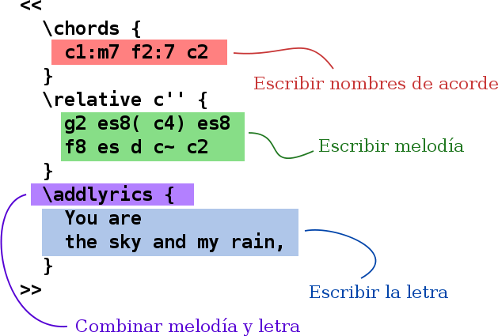
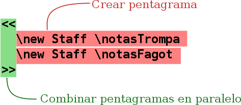
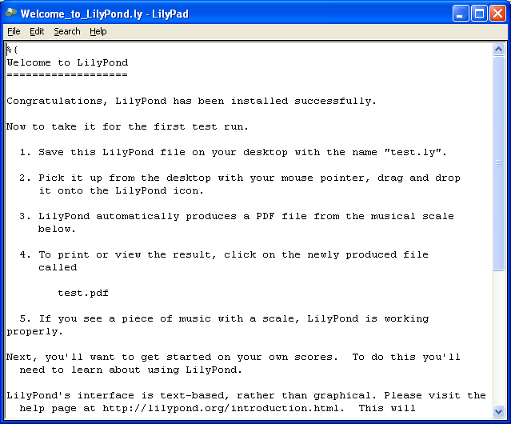

LilyPond... notación musical para todos

¿Qué es LilyPond?
LilyPond es un programa de grabado musical (tipografía musical o edición de partituras), consagrado a la producción de partituras de la calidad más alta posible. Lleva la estética de la música tipografiada de la forma tradicional a las partituras impresas mediante ordenador. LilyPond es software libre y forma parte del Proyecto GNU.
¡Puede leer más en nuestra Introducción!
¡Lanzado LilyPond 2.17.95! 3 de noviembre de 2013
Nos llena de emoción anunciar el lanzamiento de LilyPond 2.17.95 como lanzamiento beta de la próxima edicion estable 2.18. Los desarrolladores están aún atareados buscando soluciones para algunos problemas de última hora, pero se supone que esta edición tendrá las funcionalidades completas, la documentación precisa, y que no se habrán pasado por alto problemas de importancia. Para actualizar la sintaxis de los archivos de entrada a la última versión, consulte Actualizar ficheros con convert-ly. Pruebe esta versión e infórmenos de cualquier porblema, véase Informes de fallos.
El blog de LilyPond. 2 de junio de 2013
Janek Warchoł ha creado un blog de LilyPond. ¡Se encuentra alojado en lilypondblog.org!
¡Lanzado LilyPond 2.16.2! 4 de enero 2013
Nos complace anunciar el lanzamiento de LilyPond 2.16.2. Este lanzamiento se realiza principalmente para corregir un problema con lilypond-book en Windows. Recomendamos que actualicen a esta versión solamente aquellos que necesiten esta funcionalidad.
El Informe LilyPond, número 28. 12 de noviembre de 2012
La edición de octubre del Informe LilyPond se centra en el encuentro de usuarios y desarrolladores de LilyPond en Waltrop (Alemania), el mes de agosto pasado. Por supuesto que también hay noticias de LilyPond producidas a raíz del lanzamiento de las versiones 2.16.0 y 2.17.0 que se produjeron en dicho lugar.
También incluyen dos informes financieros mensuales por parte de David Kastrup cuyo trabajo en LilyPond está exclusivamente pagado por las donaciones de otros desarrolladores y usuarios (¡gracias!), y un informe acerca de las experiencias con un servicio web de tipografía musical que utiliza LilyPond internamente.
Acérquese y lea ya el Informe LilyPond número 28; ¡todos los comentarios y aportaciones serán calurosamente bien recibidos!
¡Lanzado LilyPond 2.16.1! 9 de noviembre de 2012
Nos complace anunciar el lanzamiento de LilyPond 2.16.1. Contiene cierto número de actualizaciones sobre la anterior versión estable, y no debería causar problemas. Recomendamos a todos que actualicen a esta versión.
¡Lanzado Lilypond 2.16.0! 24 de agosto de 2012
Nos llena de orgullo anunciar el lanzamiento de GNU LilyPond 2.16.0. LilyPond es un programa de tipografía musical para editar partituras, consagrado a la producción de música impresa de la mayor calidad posible. Lleva al ordenador la estética de la música grabada de la forma tradicional.
Durante el último año y a partir de la principal versión estable anterior, se han realizado multitud de mejoras. Algunas de las mejoras fundamentales son:
- Soporte para la notación cuadrada del canto kievano
- Se han mejorado espectacularmente las interfaces de programación y del usuario
- Las funciones musicales son ahora mucho más versátiles
Hay una lista completa de todas las funcionalidades nuevas en
http://lilypond.org/doc/v2.16/Documentation/changes/
¡Que tenga una feliz tipografía musical! LilyPond 2.16 ha sido hecho para usted por...
El equipo principal de desarrollo:
Bertrand Bordage, Trevor Daniels, Colin Hall, Phil Holmes, Ian Hulin, Reinhold Kainhofer, David Kastrup, Jonathan Kulp, Werner Lemberg, John Mandereau, Patrick McCarty, Joe Neeman, Han-Wen Nienhuys, Jan Nieuwenhuizen, Graham Percival, Mark Polesky, Neil Puttock, Mike Solomon, Carl Sorensen, Francisco Vila, Valentin Villenave, Jan Warchoł
Colaboradores de programación:
Aleksandr Andreev, Sven Axelsson, Peter Chubb, Karin Hoethker, Marc Hohl, David Nalesnik, Justin Ohmie, Benkő Pál, Julien Rioux, Patrick Schmidt, Adam Spiers, Heikki Taurainen, Piers Titus van der Torren, Jan-Peter Voigt, Janek Warchol
Colaboradores de documentación:
James Lowe, Pavel Roskin, Alberto Simoes, Stefan Weil
Escuadrón de caza de fallos:
Colin Campbell, Eluze, Phil Holmes, Marek Klein, Ralph Palmer, James Lowe
Apoyo:
Colin Campbell, Christian Hitz, Phil Holmes
Colaboradores de traducciones:
Jean-Charles Malahieude, Till Paala, Yoshiki Sawada
| Introducción | Empiece aquí a crear partituras musicales. | |
| Descarga | Obtener LilyPond. | |
| Manuales | Léase los dichosos manuales (RTFM). | |
| Comunidad | Póngase en contacto con otros usuarios. |
Introducción
Nuestras metas

LilyPond apareció cuando dos músicos quisieron ir más allá de la inexpresiva apariencia de la música impresa mediante ordenador. Los músicos prefieren leer partituras bonitas, así que ¿por qué no iban a poder los programadores escribir software para producir partituras elegantes?
El resultado es un sistema que libera a los músicos de preocuparse por los detalles de la disposición sobre el papel, lo que les permite centrarse en la música. LilyPond trabaja codo con codo con ellos para crear partituras de calidad editorial, realizadas dentro de las mejores tradiciones del grabado musical clásico.
Qué hace LilyPond
- Posibilidades: ¿Qué puede hacer LilyPond?
- Ejemplos: ¡Quiero ver música!
- Libertad: LilyPond es Software Libre.
- Trasfondo: Nociones de nuestra estética computacional.
LilyPond en la práctica
- Producciones: Usos de LilyPond en el mundo real.
- Reseñas: ¿Qué dice la gente?
Cómo funciona LilyPond
- Entrada de texto: ¡¿Escriben música como texto?!
- Entornos mejorados: Otras formas de trabajar con LilyPond.
| Posibilidades | ||
| Ejemplos | ||
| Libertad | La libertad y la GPL. | |
| Trasfondo | Estética computacional. | |
| Producciones | Uso de LilyPond en el mundo real. | |
| Reseñas | ||
| Entrada de texto | ||
| Entornos mejorados | Otras formas de trabajar con LilyPond. |
Posibilidades
Elegancia
Excelencia en grabado clásico
LilyPond permite a los músicos producir partituras elegantes que sean fáciles de leer. Su comunidad de desarrolladores ha empleado miles de horas en desarrollar un programa de grabado musical que produce como resultado música impresa de forma hermosa. Todos los ajustes de estilo de LilyPond, el diseño de las fuentes y los algoritmos se han inspirado en la mejor música grabada a mano. La salida de LilyPond tiene el mismo aspecto robusto, equilibrado y elegante que las partituras clásicas mejor grabadas. Todo esto se explica con detalle en nuestro Ensayo.
Opciones de aspecto efectivas
Pierda menos tiempo en los ajustes de la salida; LilyPond consigue el formateado más correcto desde el principio. Determina el espaciado por sí solo y parte las líneas y las páginas de forma que ofrece una disposición compacta y uniforme. Los choques entre la letra de las canciones, las notas y los acordes se resuelven, y las ligaduras y las barras se inclinan ¡automáticamente!
Facilidad de uso

Entrada basada en texto
LilyPond toma una entrada en texto normal, que podemos elaborar en nuestro editor de texto de preferencia, de forma rápida y cómoda. La entrada de texto contiene toda la información, de manera que no hay necesidad de recordar complejas secuencias de instrucciones: tan sólo guarde un código de entrada para que sirva como referencia futura.
Combinar música y texto
Coloque fragmentos de música dentro de textos sin cortar y pegar imágenes. Integre música dentro de LaTeX y HTML de forma sencilla, o añada música a documentos de OpenOffice.org o LibreOffice mediante OOoLilyPond. También hay plugins o complementos disponibles para permitir código de LilyPond dentro de diversos blogs y wikis, haciendo posible la colaboración en línea.
Accesibilidad
La entrada basada en texto también hace posible la escritura de partituras para usuarios con deficiencias físicas. Los usuarios con alguna dificultad manual que no pueden teclear o manejar un ratón de ordenador pueden usar software de reconocimiento de voz para editar los archivos de LilyPond. Incluso las personas totalmente ciegas pueden usar lectores de pantalla para escribir los archivos de LilyPond (una tarea imposible en los programas de edición de partituras basados en gráficos).
Diseño ampliable
Todos los ajustes se pueden modificar para que se combinen con su gusto tipográfico personal. Si eso no es suficiente, siempre nos queda el lenguaje de guiones Scheme incorporado, un dialecto del potente lenguaje LISP. Todos los ajustes, variables y funciones están documentados en el completo manual de referencia del programa.
Entorno

Software libre
¡LilyPond se puede descargar sin coste! Sí: es gratis. Obténgalo de la página de descarga.
También es software libre, como la libertad de expresión. Se ofrece con el código fuente con el permiso para modificarlo y copiarlo. Así pues, ¿está cansado de algún fallo o suplica una determinada funcionalidad? tan sólo añádala por sí mismo, o pague a alguien para que lo haga.
Soporte excelente
LilyPond funciona en todas las plataformas populares: GNU/Linux, MacOS X y Windows. LilyPond viene con una completa documentación y cientos de archivos de ejemplo. Existe una activa comunidad de usuarios dispuesta a responder dudas y cuestiones en la lista de distribución de correo de usuarios de LilyPond, lilypond-user, mientras que el equipo de desarrollo se asegura de que los problemas se resuelven con prontitud.
Editores mejorados
Varios desarrolladores que son a su vez usuarios activos de LilyPond, han escrito herramientas orientadas específicamente a hacer más fácil y efectivo el proceso de editar archivos de LilyPond. Para ver algunos ejemplos, consulte Entornos mejorados.
¿Ahora qué?
¿Aún no está convencido? Eche un vistazo a algunos Ejemplos concretos. Si ya está decidido a probar LilyPond, en primer lugar infórmese de nuestra Entrada de texto.
Ejemplos
LilyPond es una herramienta potente y flexible para tareas de grabado musical de todo tipo. Explore libremente nuestra galería de ejemplos e ¡inspírese!
Música Clásica
Esta pieza de órgano de J.S. Bach es un proyecto bastante típico de grabado con LilyPond.
{kind=link}
(pulse para ver una imagen más grande)
Notación compleja
Este ejemplo procedente de las Goyescas de Enrique Granados muestra algunas de las posibilidades más avanzadas de la composición tipográfica, como las barras en ángulo, plicas de pentagrama cruzado y líneas de seguimiento de voces.
{kind=link}
(pulse para ver una imagen más grande)
Música antigua
LilyPond también contempla distintos tipos de notación antigua, como este pasaje de canto gregoriano.
{kind=link}
Música moderna
Los compositores contemporáneos encuentran que LilyPond es adecuado para la impresión de notación inusual. He aquí un extracto de la obra Čáry, de Trevor Bača, para flauta baja sola.
{kind=link}
(pulse para ver una imagen más grande)
Creación flexible y eficiente de material de interpretación
Se pueden crear distintos materiales de lectura a partir del mismo código fuente. He aquí un extracto de la realización de Nicolas Sceaux de Giulio Cesare de Haendel, en partitura completa, reducción para piano y voz, y una particella de violín.
{kind=link}
(pulse para ver una imagen más grande)
{kind=link}
(pulse para ver una imagen más grande)
{kind=link}
(pulse para ver una imagen más grande)
Tablatura
LilyPond contempla la notación de cifra para guitarra, que se puede personalizar para adaptarla a cualquier instrumento que lea de tablatura. La pauta de tablatura se genera automáticamente a partir de las notas que se escriben para el pentagrama normal.
{kind=link}
(pulse para ver una imagen más grande)
Gráficos de Schenker
La salida estándar se puede modificar de forma muy profunda. He aquí un impresionante análisis schenkeriano creado por Kris Schaffer, para un artículo de la revista Linux Journal. Se han añadido algunos colores para mejorar la visibilidad.
{kind=link}
(pulse para ver una imagen más grande)
Música vocal
LilyPond es excelente para todo tipo de música vocal, desde himnos de música sacra hasta óperas. Presentamos a continuación un motete medieval con unos requisitos ligeramente inusuales. La voz de tenor está escrita en un compás distinto a las otras pero debe alinearse como si estuviera en el mismo compás. LilyPond trata esta situación con suma elegancia. Observe también los incipit con las claves en el estilo de la edición Vaticana, las plicas barradas que indican notas repetidas, y los corchetes de ligadura por encima de ciertos grupos de notas.
{kind=link}
(pulse para ver una imagen más grande)
Aplicaciones para la educación
LilyPond está muy indicado también para aplicaciones educativas. He aquí un ejemplo de un sencillo ejercicio de contrapunto.
{kind=link}
(pulse para ver una imagen más grande)
Música pop
Es sencillo crear hojas guía de acordes en cifrado americano para música pop con melodía, letra, nombres de acordes y diagramas de posiciones de acorde. En este ejemplo vemos algunos de los diagramas de posiciones predefinidas, pero se pueden personalizar profundamente para cumplir con casi cualquier situación.
{kind=link}
(pulse para ver una imagen más grande)
Proyectos grandes
LilyPond es excelente para proyectos grandes como óperas u obras para orquesta sinfónica, también. Además, la entrada basada en texto proporciona una mayor accesibilidad (este ejemplo ha sido aportado por Hu Haipeng, un compositor ciego).
{kind=link}
(pulse para ver una imagen más grande)
¿Ahora qué?
¿Aún no está convencido? LilyPond es software libre, le concede a usted, el usuario, la Libertad. Si ya está decidido a probar LilyPond, lea en primer lugar lo que tenemos que decirle sobre la Entrada de texto.
Libertad
Software libre
GNU LilyPond está escrito y mantenido por una comunidad de entusiastas. Está publicado bajo la Licencia General Pública de GNU y la Licencia de Documentación Libre de GNU, dando a todos la libertad de arreglar, modificar y ampliar el programa. ¡Crear música hermosa no debería requerir cientos de euros en software!
¿Cuáles son los beneficios para los usuarios?
- Sin coste: ¡descárguelo y pruébelo! ¿Qué puede perder?
- Compartir: si le gusta el programa ¡pase una copia a sus amigos, profesores, alumnos y colegas!
- Disponibilidad de la fuente: si tiene curiosidad acerca de cómo LilyPond crea algún tipo de notación musical, puede ver exactamente cómo está hecha.
-
Ampliable: usted puede añadir posibilidades, corregir errores y
cambiar el funcionamiento. Si no es un programador, puede contratar a
alguien para que haga estas tareas.
Esto puede parecer poco atractivo para músicos ocasionales, pero la capacidad de expandir el software puede ser muy valiosa para los compositores serios, empresas y académicos.
- Seguridad para el futuro: si una empresa comercial va a la quiebra, ¿qué le ocurre a cualquier música electrónica que dependa de sus productos? Esto no es un problema con LilyPond; incluso si todo el equipo de desarrollo lo abandonara (algo extremadamente improbable), el programa aún seguiría estando disponible de forma legal para su copia, modificaciones y distribución.
¿Por qué los desarrolladores de LilyPond “regalan” su trabajo sin pedir nada a cambio?
Casi todos nosotros vemos el desarrollo de LilyPond como un hobby o un trabajo voluntario. Así pues, la pregunta es realmente “¿por qué las personas se prestan voluntarias?”
- Por diversión: el trabajo en busca de una meta puede ser divertido, ¡en especial cuando trabajas en equipo!
- Metas comunes: todos nosotros queremos partituras con buen aspecto, pero son pocos los que tienen la experiencia (y ninguno tiene tiempo) para crear un programa que pueda manejar todas las situaciones. Trabajando en equipos (una persona mejora el código que traza las barras de corchea, otra mejora la forma de las ligaduras y un tercero escribe documentación explicando cómo utilizar estas posibilidades) podemos alcanzar nuestra meta con tan sólo una fracción del esfuerzo individual.
- La “cultura del regalo”: el movimiento del Software Libre ha creado muchos proyectos geniales de software, como GNU/Linux, Mozilla Firefox y el juego Battle for Wesnoth. Después de haberse visto beneficiados por estos proyectos, algunos desarrolladores desean “devolver” algo a la comunidad.
- Experiencia laboral: las contribuciones a proyectos de software libre son una magnífica forma de practicar la programación, la escritura de documentación, la traducción de documentación o el diseño. Esta experiencia ha ayudado a muchos programadores a encontrar trabajo en empresas o en universidades.
Y ahora ¿qué?
¿Aún no está convencido? Lea nuestro extenso ensayo sobre nuestra filosofía del grabado en Trasfondo. Si ya está decidido a probar LilyPond, en primer lugar lea lo que hemos escrito sobre la Entrada de texto.
Trasfondo
Ensayo sobre el trasfondo
Tenemos un amplio ensayo que describe la estética computacional: el arte de crear belleza con un ordenador.
Si tan sólo quiere una introducción rápida a LilyPond, leer todo el material que constituye el ensayo podría ser demasiado. Si quiere leerlo ahora, continúe hacia Ensayo.
Y ahora ¿qué?
¿Aún no está convencido? Lea algo acerca de las Producciones y partituras de algunos de nuestros usuarios. Si ya se ha decidido a probar LilyPond, en primer lugar lea algo sobre nuestra Entrada de texto.
Producciones
Conciertos
La música tipografiada con LilyPond se ha utilizado en interpretaciones y actuaciones por todo el mundo. Algunos titulares:
- Aurélien Bello ha reorquestado Der Ring des Nibelungen de Richard Wagner a una versión para niños de 100 minutos de duración. Está escrita para orquesta sinfónica estándar pero con una plantilla reducida de cantantes, y se interpretará por la Radio-Sinfonieorchester Berlin los días 5 y 6 de abril de 2014 en el Atze Musiktheater de Berlín. El director es Heiko Matthias Förster.
- Joe Smeets creó las partituras para el libro infantil Zing Mee (Canta conmigo) de Annie M.G. publicado por Querido (ISBN 9789045106205): www.queridokinderenjeugdboeken.nl; partituras de ensayo de coro para la traducción holandesa del Saint Nicolas de Benjamin Britten realizado por Muziektheater Hollands Diep en 2011, www.muziektheaterhollandsdiep.nl; y está trabajando actualmente en la pastitura general y particellas de un arreglo del Boris Godounov de Moussurgsky para cuarteto de viento, piano y percuión. Se interpretará en 2014, de nuevo por parte de Muziektheater Hollands Diep.
- Una edición crítuca de la serie de óperas Enea nel Lazio (1760), de Tommaso Traetta, con libreto de Vittorio Amedeo Cigna-Santi, en cuatro partes: Primera parte Segunda parte Tercera parte Cuarta parte Creada por Luca Rossetto Casel para su tesis de doctorado.
- Los Cuadros de una exposición de Mussorgsky, reorquestados y dirigidos por Aurélien Bello con la orquesta Junge Philharmonie Brandenburg el 10 de octubre de 2011 y otra vez los días 15 y 16 de abril de 2012.
- Kieren MacMillan, compositor y director musical. Entre sus numerosas obras recientes están Go Thy Way, interpretada por el coro Salt Lake Choral Artists en marzo de 2012; La Just Out of Reach Suite interpretada por el Dúo Chrysalis ; thrafsmata interpretada en julio de 2011 por el Pittsburgh New Music Ensemble.
- Anonymous Student Compliment or Complaint, de Mike Solomon, ganador de entre 172 participantes procedentes de 22 países del concurso de composición Left Coast de 2011. Entre otras obras están: Norman (age 1) para clarinete solo, interpretada en el festival de música electroacústica (FEMF) de la Universidad de Florida en octubre de 2010.
- Una edición moderna de la Serenata Erminia de Alessandro Scarlatti, editada por el musicólogo Thomas Griffin, (Roma, Italia). Interpretada el 22 de octubre de 2010 en la Galleria del Palazzo Zevallos Stigliano de Nápoles. Alessandro Scarlatti 2010, durante las conmemoraciones de los 350 años del nacimiento del compositor.
- La interpretación de Mercury Baroque de Armide de Lully, 15 y 16 de mayo de 2009, en Houston, Texas (tipografía de Nicolas Sceaux).
- Extractos instrumentales de Hippolyte et Aricie de Rameau en la iglesia de St. James en Manhattan, el 8 de mayo de 2009, por Frederick Renz y su conjunto Early Music New York (realización tipográfica de Nicolas Sceaux).
- Affaire Étrangère, ópera de Valentin Villenave, con libreto en francés de Lewis Trondheim, estrenada el 1 de febrero de 2009 en L’Opéra National de Montpellier, en Francia.
Partituras publicadas
- El Proyecto Mutopia incluye más de 1500 partituras de música clásica para su libre descarga, y es el principal escaparate de partituras de LilyPond.
- Etude, “partituras en versión extra” es una aplicación para el iPhone que presenta en pantalla música para piano editada con LilyPond, entre ellas muchas piezas procedentes de Mutopia. La aplicación incluye un teclado virtual de piano que muestra las teclas que hay que pulsar para ayuda de los principiantes que están aprendiendo a leer música.
- Adoro Music Publishing, partituras de música sacra de alta calidad, disponibles para su descarga inmediata o en el formato tradicional de papel.
- The Shady Lane Publishing, una “micro editorial musical” cuya meta es promover una nueva forma de economía más cercana a los músicos y amantes de la música.
conocimiento de cualesquiera otros conciertos o partituras que merezcan aparecer relacionados aquí, le rogamos que nos lo haga saber escribiendo un mensaje a la lista de correo bug-lilypond. Si no está suscrito a la lista, aún puede hacerlo en la página informativa de la lista o escribiendo directamente a través del interfaz web de lilypond.bugs en gmane.
Y ahora ¿qué?
¿Aún no está convencido? Lea algunas de las Reseñas de nuestros usuarios. Si ya tiene decidido probar LilyPond, en primer lugar infórmese sobre nuestra Entrada de texto.
Reseñas
Artículos publicados
-
Abril de 2011
Linux Magazine publica un artículo titulado Projects on the Move. Es un artículo introductorio sobre MuseScore, LilyPond y Chordii. La autora Carla Schroder dice que “LilyPond se maneja desde la línea de órdenes, pero no deje que la falta de una IGU le atemorize; LilyPond es amigable y fácil de aprender”, y aporta un ejemplo fácil de abordar.
-
Mayo de 2010
Peter Kirn, en el sitio web Create Digital Music website, publica una revisión de LilyPond. Arroja una mirada equilibrada sobre la utilización, alaba la notación de alta calidad de LilyPond y sugiere a los lectores que lo prueben.
-
Septiembre de 2009
La revista LinuxUser alemana publicó un artículo sobre lilypond.
-
Agosto de 2009
Ann Drinan, en la página Polyphonic.org, presenta algunos comentarios de dos archiveros de orquesta que charlan acerca del uso de software para el mantenimiento de sus bibliotecas.
-
Junio de 2009
En un artículo publicado en la revista anual de la Asociación Nacional de Padres de Alumnos de Conservatorios de Francia, el compositor y miembro del proyecto LilyPond, Valentin Villenave, explica cómo las Licencias Libres, y concretamente las partituras tipografiadas con LilyPond, participan del objetivo de lograr que la música escrita sea accesible para todos.
-
Febrero de 2008
En artículos en su página personal, Andrew Hawryluk compara a Finale con LilyPond en términos generales, y evalúa en detalle las posibilidades de grabado musical de los dos programas. El segundo artículo es un instructivo análisis de la edición del Preludio para piano número 6 de Rachmaninoff, incluyendo comparaciones con una edición de referencia grabada a mano.
-
Junio de 2006
DistroWatch premia a LilyPond y escribe “Damas y caballeros, nos complace anunciar que, basándonos en la demanda de los lectores, la donación de DistroWatch de mayo de 2006 ha sido concedida a LilyPond (190.00 €) y a Lua (US$250.00).”
-
Diciembre de 2005
Linux Journal publica un artículo titulado Elabore fantásticos gráficos de Schenker con GNU LilyPond. Es un artículo destacado, profundo pero práctico con atractivos gráficos de LilyPond. El autor, Kris Shaffer, destaca: “GNU LilyPond genera unos gráficos preciosos que hace a las alternativas comerciales parecer de segunda fila.”
-
20 de agosto de 2005
El diario belga De Standaard investiga qué empuja a los autores de Software Libre en un artículo titulado Delen van KENNIS zonder WINSTBEJAG (Compartir el conocimiento sin ánimo de lucro) en su ‘DS2 bijlage’. LilyPond se usa como ejemplo y el artículo está salpicado de citas procedentes de una entrevista por e-mail con Jan Nieuwenhuizen. Esto marca la primera aparición de LilyPond en la prensa escrita de importancia.
-
Junio de 2005
Un artículo en francés sobre el lanzamiento de LilyPond 2.6 apareció en linuxfr.org.
-
Octubre de 2004
Los editores de Computer!Totaal, una revista holandesa de informática, describen a LilyPond en la edición de octubre de 2004 como: “Maravilloso software libre (de código abierto) (…) Las partituras producidas por LilyPond son excepcionalmente bonitas (…) un sistema muy potente que puede hacer casi cualquier cosa.”
-
Julio/agosto de 2004
Dave Phillips escribió un artículo introductorio para Linux Journal At the sounding edge: LilyPond, primera y segunda parte.
-
Marzo de 2004
Chris Cannam entrevistó a Han-Wen Nienhuys y a Jan Nieuwenhuizen en linuxmusician.com (una página ahora desaparecida). Esta entrevista se reseñó también en una historia de slashdot.
-
Febrero de 2004
El cantante de jazz Gail Selkirk escribe sobre Sumergirse en el estanque de los nenúfares (Lily Pond). “… puede hacer hojas guía de acordes o partes orquestales completas, y el resultado puede ser increíble.” Computer Music Special, número CMS06.
{kind=link}
Reseñas de los usuarios

Carter Brey, primer cello de la Filarmónica de Nueva York
“… He escrito un par de piezas para violoncello solista que he impreso con LilyPond y que voy a enviar a Schirmer para su publicación. ¡Puedo apostar a que su grabado no será ni la mitad de bueno que el mío!”

Orm Finnendahl, profesor de composición, Conservatorio Superior de Friburgo
“Aún cuando no domino [LilyPond] todavía, estoy muy impresionado. Usé el programa para digitalizar un motete de Josquin Desprez en notación mensural y no cabe duda de que lilypond ¡se lleva por delante a otros programas de notación en cuanto a velocidad, facilidad de uso y apariencia de los resultados!”

Darius Blasband, compositor (Bruselas, Bélgica)
“[...después del primer ensayo orquestal] obtuve numerosos cumplidos sobre la calidad de las partituras. Lo que es incluso más importante: mientras que LilyPond proporciona numerosas formas de mejorar la apariencia de las partituras, lo que entregué a la orquesta es básicamente la impresión en bruto, sin retocar.”
Kieren MacMillan, compositor (Toronto, Canadá)
“Gracias y felicitaciones al equipo de desarrollo por su increíble trabajo. Nunca he visto nada que se acerque al resultado que obtengo con LilyPond; confío plenamente en que mis necesidades de publicación musical serán satisfechas más allá de toda expectativa usando esta genial aplicación. (…) básicamente, la impresión de LilyPond sin retocar (…) se ve mejor que la mayoría de las publicaciones "profesionales" más recientes con que las he comparado (p.ej., prácticamente cualquier partitura de Warner Bros, e incluso muchas de las más recientes de ‘las editoras antiguas’). (…)”
“¡¡¡Toma eso, Finale/Sibelius/Igor/lo que sea!!!”
Chris Cannam, programador principal del proyecto RoseGarden
“LilyPond es, obviamente, King Kong [de la tipografía musical a lo grande].”
Chris Snyder, Adoro Music Publishing
“La forma en que se introduce la música para LilyPond me hace pensar de una manera más musical – ha habido veces en que me he bloqueado sobre cómo decirle a Lily que imprima algo, sólo para darme cuenta de que incluso si hiciera exactamente lo que el compositor quería, la música sería confusa de leer. LilyPond me lo pone mucho más fácil al trabajar en mi doble papel de editor y copista.”
“Llevo utilizando exclusivamente LilyPond para mi negocio de publicación recién inaugurado. Prácticamente sin excepción, todos los compositores se han quedado boquiabiertos con la calidad del grabado cuando se lo presentaba con las pruebas de su música previa a la publicación. Me reservo parte del mérito de esto (empleo mucho tiempo en trucar los resultados, especialmente las ligaduras, sobre todo en los acordes), pero LilyPond me da un excelente punto de partida, un interfaz muy intuitivo, y la capacidad de modificar absolutamente cualquier cosa si le quiero dedicar el tiempo necesario. Estoy convencido de que ningún producto comercial se le acerca ni de lejos.”
David Bobroff, trombón bajo, Orquesta Sinfónica de Islandia
“Creo que LilyPond es genial (…) cuanto más aprendo de LilyPond, ¡más me gusta!”
Vaylor Trucks, intérprete de guitarra eléctrica (sí, pariente de...)
“Estoy súper-impresionado con LilyPond (…)”
“¡¡¡EL MEJOR PROGRAMA DE LA HISTORIA!!!”
“¡Muchísimas gracias a todos por vuestro duro trabajo y dedicación!”
Nicolas Sceaux, colaborador de Mutopia
“Tenía una especie de relación pasión-odio con LilyPond. Pasión porque la primera partitura que vi ¡era tan increíble! La descripción de LilyPond se fundamenta en la belleza. ¡Esto es demasiada modestia! (…) conforme LilyPond mejora continuamente y observo cómo se hacen las cosas con Scheme, tengo cada vez menos frustraciones. De cualquier forma, lo que quiero decir es: gracias por darnos LilyPond, es realmente bueno.”
Werner Lemberg, director de orquesta en el Teatro de Koblenz, Alemania, y destacado hacker de GNU
“¡De cualquier manera, LilyPond hace un trabajo sensacional!”
Paul Davis, desarrollador de JACK y Ardour
“Creo que [LilyPond] es un programa increíble, y produce un resultado realmente maravilloso. Después de haber leído una reseña sobre él el año pasado, estuve dando la paliza a varios amigos míos hablándoles de su potencial.”
El Dr. Mika Kuuskankare, investigador de la Sibelius Academy de Finlandia, compositor y autor del Expressive Notation Package (ENP)
“Siento el más hondo respeto hacia LilyPond y sus creadores y mantenedores debido a que sé por mi experiencia personal lo difícil que puede ser este tipo de software.”
David Cameron, Músico, tipógrafo musical profesional y usuario experimentado de SCORE
“Mi agradecimiento de todo corazón a todo aquel que contribuye a este proyecto. Yo fui un usuario intensivo de SCORE para casas grandes de edición musical, allá por los años 90, pero ahora siento que LilyPond, por fin, me permite conseguir exactamente los que quiero hacer sobre la página, especialmente cuando no se trata de la práctica "estándar".”
conocimiento de cualesquiera otros artículos de noticias o testimonios que merezcan aparecer relacionados aquí, le rogamos que nos lo haga saber escribiendo un mensaje a la lista de correo bug-lilypond. Si no está suscrito a la lista, aún puede hacerlo en la página informativa de la lista o escribiendo directamente a través del interfaz web de lilypond.bugs en gmane.
Entrada de texto
“Compilar” la música
{kind=link}
(pulse para ver una imagen más grande)
LilyPond es un sistema compilado: se ejecuta sobre un archivo de texto que describe la música. El resultado se puede ver en la pantalla o imprimirse. En cierto modo, LilyPond se parece más a un lenguaje de programación que a los programas de edición gráfica de partituras.
No escribimos la música por el procedimiento de coger las notas de una barra de herramientas gráfica y arrastrarlas a una partitura que se refresca de forma dinámica; escribimos la música tecleando un texto. Este texto es interpretado (o “compilado”) por parte de LilyPond, que a su vez produce una hermosa música impresa.
Es posible que las personas acostumbradas a interfaces gráficos de usuario tengan que aprender una forma de trabajo nueva, pero ¡los resultados, sin duda alguna, merecen la pena!
Nota: Presentamos aquí una panorámica de nuestro paradigma de entrada de texto: ¡no es tan complicado como suena! No se preocupe ahora por comprender todos y cada uno de los detalles de estos ejemplos; nuestra documentación para principiantes se ocupa de todo ello a un ritmo mucho más progresivo.
La ele con la a, "La"
Las notas se codifican mediante letras y números. Las instrucciones especiales se introducen mediante barras invertidas.

Las alteraciones se hacen con nombres distintos: añada -is para
obtener un sostenido, y -es para un bemol (son los nombres de
las notas en holandés, pero están disponibles otros idiomas).
LilyPond averigua dónde hay que imprimir las alteraciones.


Música pop
Junte acordes y letra para obtener una hoja guía de acordes:

Particellas de orquesta
El archivo de entrada contiene las notas de la pieza musical. La partitura y las particellas se pueden hacer a partir de un solo archivo de entrada, de manera que un cambio en una nota siempre afecta tanto a las particellas como a la partitura general. Para poder incluir la misma música en varios lugares, asignamos la música a una “variable” (un nombre):

Esta variable se usa entonces en una sola parte instrumental (aquí transportada, con los silencios de varios compases agrupados):


La misma variable se utiliza en la partitura general (aquí en tono de concierto):

Documentación para el principiante
Nos damos cuenta de que muchos usuarios ven un poco extraña esta forma de introducir la música. Por este motivo, hemos escrito una amplia documentación de ayuda a los nuevos usuarios, comenzando con Aprendizaje. El Manual de aprendizaje es el mejor sitio para empezar, porque allí se responden muchas preguntas antes de que se formulen.
¡Le rogamos que lea el Manual de Aprendizaje antes de protestar por posibles fallos en el programa! Con frecuencia, los usuarios noveles creen que LilyPond no funciona, cuando de hecho está funcionando exactamente tal y como está diseñado para hacerlo.
Tiene a su disposición una documentación mucho más profunda en la sección Manuales.
Ben Lemon, usuario de LilyPond, ha creado y publicado una colección de tutoriales en vídeo en su blog, dirigidos a nuevos usuarios.
Entornos de edición facilitados

(puse para ver una imagen más grande)
La preocupación de LilyPond está en primer lugar en la producción de música tipografiada con la máxima calidad; la creación de una interfaz gráfica de usuario (un GUI) nos habría distraído de esta meta. Sin embargo, existen otros proyectos cuyo propósito es hacer más fácil la creación de archivos de entrada de LilyPond.
Ciertos entornos de edición incluyen el coloreado sintáctico, compleción automática de instrucciones y plantillas preelaboradas. Otros programas ofrecen realmente un GUI que permite la manipulación directa de una partitura gráfica. Para ver más información, consulte Entornos mejorados.
Y ahora ¿qué?
Ya está preparado para Descargar LilyPond. ¿Aún no está convencido? Lea algo sobre los entornos de edición en Entornos mejorados.
Entornos mejorados
Tunefl
Con tunefl se pueden componer tipográficamente las partituras de forma directa en línea sin necesidad de instalar LilyPond localmente. Permite probar todas las capacidades del programa usando una interfaz web cómoda.
LilyPondTool

(pulse para ver una imagen más grande)
http://lilypondtool.organum.hu
Creado como un ‘plugin’ o complemento para el editor de texto jEdit, LilyPondTool es una de las herramientas basadas en texto más ricas en funcionalidades para la edición de partituras de LilyPond. Entre sus posibilidades se encuentran: un asistente de documentos que contempla la posibilidad de introducir letras de canciones para la preparación fácil de documentos, y un visor de PDF integrado que contempla la posibilidad de apuntar y pulsar con reflejo en el código.
Frescobaldi

(pulse para ver una imagen más grande)
Frescobaldi es un editor ligero y potente de texto y música para LilyPond con un visor de PDF incorporado. Es muy fácil de utilizar y funciona en todos los principales sistemas operativos (GNU/Linux, Mac OS X y Windows).
Entorno gráfico: Denemo

(pulse para ver una imagen más grande)
Denemo es un editor gráfico que genera código fuente de LilyPond, en la versión 2.8.7, y también permite la reproducción sonora de la música. Permite a los usuarios ver el código de entrada de LilyPond en paralelo con la visualización gráfica. Se pueden aplicar a las notas, acordes, etc. trucos de LilyPond adicionales y se guardan con el documento de Denemo, de forma que los usuarios pueden continuar editándolo de manera gráfica.
Al mover el cursor por el texto de LilyPond se mueve también en la presentación gráfica, y los errores de sintaxis de sus trucos de LilyPond se destacan en la ventana de texto cuando se imprimen desde el programa.
Editores de texto
Elysium es un entorno integrado de desarrollo para Ecplipse, con una vista integrada frente a frente para la fuente y la partitura. Include realimentación visual rápida e intuitiva sin tener que alternar entre contextos, y trae muchas plantillas conducidas por asistentes.
http://www.gnu.org/software/emacs/
Emacs es un editor de texto con funcionalidades avanzadas para muchos lenguajes de programación. Emacs es un editor ampliamente expansible y se puede usar como un entorno integrado de desarrollo. Existe un ‘modo de lilypond’ que ofrece las definiciones del lenguaje para trabajar sobre archivos fuente de LilyPond. Un desarrollador ha escrito lyqi, un modo principal de Emacs.
Vim es un editor de texto minimalista que es una extensión del antiguo
editor vi de Unix. También es expansible y configurable.
Por regla general, si no está familiarizado previamente con Emacs o con Vim, probablemente prefiera utilizar un editor distinto para escribir archivos de entrada de LilyPond.
Hay más información sobre la configuración de Emacs y de Vim en Apoyo respecto de los editores de texto.
http://www.uoregon.edu/~koch/texshop
El editor TexShop para MacOS X se puede extender para que ejecute
LilyPond, lilypond-book y convert-ly desde dentro
del editor, utilizando las extensiones que están disponibles en:
http://users.dimi.uniud.it/~nicola.vitacolonna/home/content/lilypond-scripts
Programas capaces de exportar código de LilyPond
Editores de partitura, tablatura y MIDI:
-
bwwtolily trata de
convertir un archivo
.bwwo.bmwa LilyPond. Aunque no todos los ornamentos se convierten adecuadamente (lo que es cierto especialmente con piobaireachd), el programa imprime una lista de ellos. - Canorus, un editor de partituras, también puede exportar a LilyPond, pero aún es un programa en fase beta, se agradecen las pruebas por parte de los usuarios.
- Enc2ly es un programa para GNU/Linux que convierte una partitura musical de Encore en una de LilyPond.
- go-enc2ly es una herramienta de Go que convierte archivos de Encore a LilyPond. Se creó utilizando la investigación y la ingeniería inversa por medio de la modificación puntual de archivos .enc y cargándolos con la versión de demostración 4.55.
- MuseScore, un editor de partituras, tiene exportación incompleta de LilyPond pero se está desarrollando de forma activa.
- NtEd, un editor de partitura basado en la biblioteca Cairo, contempla de forma experimental la exportación a LilyPond.
- NW2LY es un programa en C# que convierte una canción de NoteWorthy Composer en LilyPond.
- Ripple es un programa que ayuda en la creación de partituras y particellas, y que incluye un modo para entremezclar distintas obras musicales en una sola partitura o particella.
- Rosegarden, un secuenciador MIDI y de audio, que tiene también un editor de partitura para edición de un solo pentagrama.
- Rumor, un convertidor monofónico de MIDI a LilyPond en tiempo real.
- TuxGuitar, un editor y reproductor de tablatura multipista, tiene visor de partitura y es capaz de exportar hacia LilyPond.
Generadores de código algorítmicos
- Abjad, una API de Python para el control formalizado de partituras, diseñado para ayudar a los compositores a construir fragmentos complejos de notación de LilyPond de una forma iterativa e incremental.
- FOMUS, (FOrmat MUSic) es una herramienta de notación musical para compositores de música por ordenador. Está escrito en el lenguaje Lisp, y se ha probado con varios intérpretes. También está disponible una versión trasladada al lenguaje C++.
- Strasheela, un entorno construido sobre el lenguaje de restricciones Mozart/Oz.
Otros programas sin desarrollo activo en la actualidad
- LilyKDE se ha sustituido por Frescobaldi, y existe como LilyKDE3 para KDE 3.5 y como lilypond-KDE4 para KDE 4.1 solamente.
- NoteEdit, que importaba MusicXML, se ha escindido en NtEd y Canorus.
- LilyComp es un programa gráfico de introducción de notas, que actúa más o menos como un teclado numérico que produce notas de LilyPond.
Y ahora ¿qué?
Ya está preparado para Descargar LilyPond.
¿Aún no está convencido? Muchos compositores, músicos y directores de orquesta han aprendido a escribir música en nuestro formato de entrada. Los usuarios con experiencia incluso informan de que pueden introducir una partitura completa en LilyPond ¡más rápido que con un teclado de piano o con el ratón y un GUI! Posiblemente le apetezca echar un vistazo a las Posibilidades, Ejemplos o a la Libertad que LilyPond ofrece, o leer algo sobre las Producciones y Reseñas de nuestros usuarios. Además, nuestro enfoque de la estética computacional del grabado musical clásico viene explicado en nuestro tratado sobre el Trasfondo.
Formalidades legales
Se reconoce el copyright de todos los logotipos e imágenes de marca de productos.
Tux, el pingüino de Linux, es obra de lewing@isc.tamu.edu hecha con el Programa de Manipulación de Imágenes de GNU.
El logotipo de FreeBSD es una marca registrada de The FreeBSD Foundation.
La “imagen de la X” no es una marca registrada. Es obra de Nihonjoe y CyberSkull, y se puso bajo la Licencia de Documentación Libre de GNU versión 1.2 o posterior. Encontramos esta imagen en esta página de Wikimedia Commons.
{kind=link}
La “imagen de los cuatro rectángulos de colores” no es una marca registrada. Es obra de Rohitbd y está puesta bajo la Licencia de Documentación Libre de GNU, versión 1.2. Encontramos esta imagen en esta página de Wikimedia Commons.
Descarga
Descargas para LilyPond 2.19.32
Nota: Los enlaces para la versión estable de LilyPond están en lilypond.org
Nota: LilyPond es un sistema de grabado musical basado en texto; se parece más a un lenguaje de programación que a un programa gráfico de edición de partituras. Antes de descargar LilyPond infórmese sobre nuestra Entrada de texto.
Para desarrolladores
- Código fuente: para mantenedores de paquetes
- Descargas antiguas: versiones anteriores
- Desarrollo: última versión de desarrollo
Patrocinadores
Nuestro agradecimiento a Virginia Tech y a linuxaudio.org por patrocinar nuestro ancho de banda.


Legalismos
Se reconoce el copyright y la marca registrada de todos los logotipos e imágenes de productos.
Tux, el pingüino de Linux, es obra de lewing@isc.tamu.edu hecha con el Programa de Manipulación de Imágenes de GNU.
El logotipo de FreeBSD es una marca registrada de The FreeBSD Foundation.
La “imagen de la X” no es una marca registrada. Es obra de Nihonjoe y CyberSkull, y se puso bajo la Licencia de Documentación Libre de GNU versión 1.2 o posterior. Encontramos esta imagen en esta página de Wikimedia Commons.
La “imagen de los cuatro rectángulos de colores” no es una marca registrada. Es obra de Rohitbd y está puesta bajo la Licencia de Documentación Libre de GNU, versión 1.2. Encontramos esta imagen en esta página de Wikimedia Commons.
Unix
Nota: LilyPond es un sistema de grabado musical basado en texto; se parece más a un lenguaje de programación que a un programa gráfico de edición de partituras. Antes de descargar LilyPond infórmese sobre nuestra Entrada de texto.
¿Paquetes genéricos, o paquetes específicos de la distribución?
Muchas distribuciones ya incluyen a LilyPond dentro de sus repositorios normales de paquetes y con frecuencia son mucho más fáciles de instalar que los paquetes genéricos que ofrecemos aquí. Sin embargo, la versión de LilyPond de dichos repositorios podría ser significativamente más antigua que la versión estable actual. Si quiere utilizar nuestros paquetes genéricos, compruebe que su editor de LilyPond está usando la versión correcta del programa lilypond. Véase Entornos mejorados.
Paquetes genéricos
Descarga
-
 GNU/Linux x86: LilyPond 2.19.32-1
GNU/Linux x86: LilyPond 2.19.32-1
(si no está seguro, utilice éste)
-
GNU/Linux 64: LilyPond 2.18.2-1
-
GNU/Linux PPC: LilyPond 2.18.2-1
-
 FreeBSD i386: LilyPond 2.18.2-1
FreeBSD i386: LilyPond 2.18.2-1
-
FreeBSD amd64: LilyPond 2.18.2-1
Instalación
En la línea de órdenes, escriba:
cd RUTA-DEL-DIRECTORIO-DE-DESCARGA sh lilypond-2.18.2-SISTEMA-OPERATIVO.sh
Desinstalación
En la línea de órdenes, escriba:
uninstall-lilypond
Ayuda
Teclee lo siguiente en el shell:
sh lilypond-2.18.2-SIST-OPERATIVO.sh --help
Paquetes específicos de cada distribución
Utilice el gestor de paquetes de su distribución para instalar o actualizar a estas versiones.
Compilación de un archivo
Nota: Estas instrucciones dan por sentado que usted está familiarizado con los programas en línea de órdenes, o programas de consola. Si está utilizando alguno de los programas que se describen en Entornos mejorados, consulte la documentación de estos programas cuando tenga algún problema al compilar un documento.
Paso 1. Creamos el archivo ‘.ly’
Haga un archivo de texto con el nombre ‘prueba.ly’ y escriba en él lo siguiente:
\version "2.18.2"
{
c' e' g' e'
}
Paso 2. Compilación (con la línea de órdenes)
Para procesar el archivo ‘prueba.ly’ escriba lo siguiente en la línea de órdenes:
lilypond prueba.ly
Verá algo parecido a:
GNU LilyPond 2.18.2 Procesando `prueba.ly' Analizando... Interpretando la música... Preprocesando los objetos gráficos... Buscando el número de páginas ideal... Disponiendo la música en 1 página... Dibujando los sistemas... Escribiendo la página de salida en `prueba.ps'... Convirtiendo a `prueba.pdf'... Terminado: la compilación ha finalizado satisfactoriamente
Paso 3: Examinar el resultado
Podemos ver o imprimir el archivo ‘prueba.pdf’ resultante.
Legalismos
Se reconoce el copyright y las marcas registradas de todos los logotipos e imágenes de producto.
Tux, el pingüino de Linux, es obra de lewing@isc.tamu.edu hecha con el Programa de Manipulación de Imágenes de GNU.
El logotipo de FreeBSD es una marca registrada de The FreeBSD Foundation.
MacOS X
Nota: LilyPond es un sistema de grabado musical basado en texto; se parece más a un lenguaje de programación que a un programa gráfico de edición de partituras. Antes de descargar LilyPond infórmese sobre nuestra Entrada de texto.
Paquetes
Descarga
-
 MacOS X x86: LilyPond 2.18.2-1
Para MacOS X 10.4 o superior sobre
CPU Intel (si no está seguro, utilice éste).
MacOS X x86: LilyPond 2.18.2-1
Para MacOS X 10.4 o superior sobre
CPU Intel (si no está seguro, utilice éste).
-
MacOS X PPC: LilyPond 2.18.2-1
Para MacOS X 10.4 o superior sobre
CPUs G3 y G4 (ordenadores Apple antiguos).
Instalación
Haga doble clic sobre el archivo descargado. Después, arrástrelo a donde quiera.
Desinstalación
Borre la carpeta LilyPond.app.
Ejecución desde la línea de órdenes
Nota: Si está satisfecho con las instrucciones sobre el interfaz gráfico, ignore estas instrucciones.
MacOS X sobre la línea de órdenes
La forma más práctica de procesar proyectos de lilypond es mediante la preparación de guiones “de apoyo” hechos por usted mismo.
-
Cree un directorio para guardar estos guiones,
mkdir -p ~/bin cd ~/bin
-
Cree un archivo llamado
lilypondque contenga#!/bin/bash exec DIRECTORIO/LilyPond.app/Contents/Resources/bin/lilypond "$@"
Nota: en general, DIRECTORIO será
/Applications/ -
Cree archivos similares
lilypond-book,convert-ly, y cualesquiera otros que vaya a utilizar, sustituyendo la partebin/lilypondconbin/convert-ly(u otro nombre de programa). -
Haga el archivo ejecutable,
chmod u+x lilypond
-
Ahora, añada este directorio a su ruta de ejecución. Modifique (o
cree) un archivo llamado
.profileen su directorio principal de forma que contengaexport PATH=$PATH:~/bin
Este archivo debe terminar en una línea vacía.
Invocar los guiones individuales
Los guiones (como lilypond-book, convert-ly,
abc2ly e incluso el propio lilypond) están
incluidos dentro del archivo .app para MacOS X.
Los guiones también se pueden lanzar desde la línea de órdenes mediante su invocación directa:
ruta/de/LilyPond.app/Contents/Resources/bin/lilypond
Lo mismo vale para el resto de los guiones de ese directorio, como
lilypond-book y convert-ly.
Compilación de un archivo
Nota: Estas instrucciones dan por sentado que está usando la propia aplicación LilyPond. Si está usando alguno de los programas que se describen en Entornos mejorados, debe consultar la documentación de estos programas si se encuentra con algún problema.
Paso 1. Creamos nuestro archivo ‘.ly’
Haga doble clic sobre LilyPond.app, se abrirá un archivo de
ejemplo.

Del menú de la parte superior izquierda de la pantalla, elija
Archivo > Guardar.

ELija un nombre para su archivo, por ejemplo ‘prueba.ly’.

Paso 2. Compilamos (con LilyPad)
Del mismo menú, elija
Compilar > Procesar.

Se abrirá una ventana que muestra un registro del progreso de la compilación del archivo que acaba de guardar.

Paso 3. Examinar el resultado
Una vez la compilación ha terminado, se crea un archivo PDF con el mismo nombre que el archivo original y se abrirá automáticamente en el visor de documentos PDF predeterminado, mostrándose en la pantalla.

Otras instrucciones
Para crear archivos de LilyPond nuevos, comience seleccionando
Archivo > Nuevo

o bien Archivo > Abrir para abrir y editar archivos existentes
que haya guardado previamente.

Debe guardar cualquier e modificación que haya realizado sobre el
archivo, antes de Compilar > Procesar y siempre que el PDF
no se muestre en pantalla debe comprobar que no haya errores en la
ventana que contiene el registro del progreso.
Si no está utilizando el visor de documentos predeterminado que viene con el sistema operativo del Mac, y tiene abierto el archivo PDF generado a partir de una compilación previa, cualquier compilación ulterior puede fallar al intentar generar un PDF actualizado hasta que cierre el original.
Legalismos
Se reconoce el copyright y la marca registrada de todos los logotipos e imágenes de productos.
La “imagen de la X” no es una marca registrada. Es obra de Nihonjoe y CyberSkull, y se puso bajo la Licencia de Documentación Libre de GNU versión 1.2 o posterior. Encontramos esta imagen en esta página de Wikimedia Commons.
Windows
Nota: LilyPond es un sistema de grabado musical basado en texto; se parece más a un lenguaje de programación que a un programa gráfico de edición de partituras. Antes de descargar LilyPond infórmese sobre nuestra Entrada de texto.
Paquetes
Descarga
-
 Windows: LilyPond 2.18.2-1
Para Windows 2000, XP, Vista, Windows 7 y 8.
Windows: LilyPond 2.18.2-1
Para Windows 2000, XP, Vista, Windows 7 y 8.
Instalación
- Localice el archivo descargado y haga doble clic sobre él para arrancar el instalador. Siga las instrucciones que le indica el instalador; le recomendamos que deje seleccionadas todas las opciones de instalación y que utilice la ruta de instalación predeterminada. Pulse sobre el botón ‘Finalizar’ cuando el instalador termine. LilyPond está instalado.
Desinstalación
Para la desinstalación, elija entre:
- Localizar el apartado de LilyPond en el menú Inicio y elegir ‘Uninstall’. Pulse el botón ‘Finish’ cuando termine el programa de desinstalación.
- O bien, desde el Panel de control, busque y seleccione el programa LilyPond y elija la opción de desinstalar/quitar programa. Pulse el botón ‘Finish’ cuando termine el programa de desinstalación.
Ejecución desde la línea de órdenes
Nota: Si le satisfacen las instrucciones sobre el interfaz gráfico, ignore estas instrucciones.
Windows sobre la línea de órdenes
La forma más conveniente de ejecutar LilyPond es añadir la carpeta que contiene los archivos ejecutables del programa a la variable de entorno “Path”.
- Abra el apartado “Sistema” en el Panel de Control, elija la pestaña Avanzado y pulse sobre el botón Variables de Entorno.
-
Elija la variable “Path” de la lista de variables de entorno y
pulse el botón Edit. Se le abrirá una ventana con el título
“Editar variable del sistema”; añada al final del “Valor de la
variable” el nombre de la carpeta que contiene los archivos
ejecutables de LilyPond de la siguiente manera:
[ruta preestablecida];CARPETA\LilyPond\usr\bin
Nota: CARPETA será por lo general
C:\Archivos de programa.y pulse el botón “Aceptar” para cerrar la ventana.
Invocar archivos ejecutables individuales
Los archivos ejecutables de LilyPond (como lilypond, lilypond-book, convert-ly y así sucesivamente) se pueden ejecutar desde la línea de órdenes, invocándolos:
lilypond prueba.ly
Compilación de un archivo
Nota: Estas instrucciones dan por sentado que está utilizando el editor LilyPad incorporado. Si está usando alguno de los programas que se describen en el apartado Entornos mejorados, consulte la documentación de estos programas cuando encuentre algún problema durante la compilación de un archivo.
Paso 1. Creamos el archivo ‘.ly’
Haga doble clic sobre el icono de LilyPond del escritorio y se abrirá un archivo de ejemplo.
Del menú de la ventana que contiene el archivo de ejemplo, elija
Archivo > Guardar como. No use Archivo > Guardar
para este archivo de ejemplo porque no funcionará hasta que le aplique
un nombre de LilyPond válido.

Escoja un nombre para el archivo, por ejemplo ‘prueba.ly’.

Step 2. Compilación
Para convertir nuestro archivo de LilyPond en una partitura musical, tenemos que compilarlo. Esto puede hacerse de varias formas: usando la técnica de arrastrar y soltar, clic con el botón derecho del ratón, dobe clic, o usando la línea de órdenes (la consola de MS-DOS). Comenzaremos examinando las tres primeras.
1. Arrastre el archivo y suéltelo directamente encima del icono de LilyPond del escritorio.

No parece que haya ocurrido gran cosa, pero después de unos instantes, debe observar que hay dos archivos nuevos en el escritorio: ‘prueba.log’ y ‘prueba.pdf’.
2. Pulse sobre el archivo con el botón derecho del ratón y elija
del menú contextual la opción Generar PDF.
3. O bien, sencillamente haga doble clic sobre el archivo ‘prueba.ly’.
Step 3. Ver el resultado
El archivo ‘prueba.pdf’ contiene, compuesta tipográficamente, la partitura del archivo ‘prueba.ly’. Haga doble clic sobre ella y se debería abrir en el visor de documentos PDF:

Otras instrucciones
Para crear un archivo nuevo, comience eligiendo Archivo >
Nuevo desde dentro de algún archivo creado previamente, o bien
elija Archivo > Abrir para abrir y editar cualquier
archivo que haya guardado antes. También puede editar un archivo
pulsando con el botón derecho y eligiendo la opción
Editar la fuente.
Debe guardar cualquier edición que haya realizado sobre el archivo
antes de compilarlo, y si no se ha creado un PDF, deberá comprobar el
archivo log de registro que se ha creado durante el intento
de compilación, en busca de algún error.

Este archivo de registro se sobreescribe cada vez que compilamos un archivo de LilyPond.
Si estamos viendo el archivo en un visor de documentos PDF, tiene que cerrar el PDF cuando quiera intentar una compilación nueva, porque podría fallar la creación del PDF nuevo mientras se está viendo con algún programa.

Legalismos
Se reconoce el copyright y la marca registrada de todos los logotipos e imágenes de productos.
La “imagen de los cuatro rectángulos de colores” no es una marca registrada. Es obra de Rohitbd y está puesta bajo la Licencia de Documentación Libre de GNU, versión 1.2. Encontramos esta imagen en esta página de Wikimedia Commons.
Código fuente
Nota: LilyPond es un sistema de grabado musical basado en texto; se parece más a un lenguaje de programación que a un programa gráfico de edición de partituras. Antes de descargar LilyPond infórmese sobre nuestra Entrada de texto.
Nota: No recomendamos que intente compilar LilyPond por sí mismo; casi todas las necesidades del usuario se satisfacen mejor con la versión precompilada.
Tarball del código fuente
Código fuente: lilypond-2.18.2.tar.gz
Para ver un amplio listado de todas las versiones (antiguas y modernas), consulte nuestra página de descarga.
Instrucciones de compilación
Las instrucciones se encuentran desarrolladas dentro de Compilación de LilyPond.
Descargas antiguas
Nota: LilyPond es un sistema de grabado musical basado en texto; se parece más a un lenguaje de programación que a un programa gráfico de edición de partituras. Antes de descargar LilyPond infórmese sobre nuestra Entrada de texto.
Todas las versiones
Para ver un amplio listado con todas las versiones (antiguas y modernas), consulte nuestra página de descarga.
GPL
Licencia del Software
GNU LilyPond está publicado bajo la Licencia General Pública de GNU. Se ofrece una introducción a esta licencia y a nuestros motivos para haberla elegido, en Libertad.
Licencia General Pública de GNU
Version 3, 29 June 2007
Copyright © 2007 Free Software Foundation, Inc. http://fsf.org/ Everyone is permitted to copy and distribute verbatim copies of this license document, but changing it is not allowed. |
Preamble
The GNU General Public License is a free, copyleft license for software and other kinds of works.
The licenses for most software and other practical works are designed to take away your freedom to share and change the works. By contrast, the GNU General Public License is intended to guarantee your freedom to share and change all versions of a program—to make sure it remains free software for all its users. We, the Free Software Foundation, use the GNU General Public License for most of our software; it applies also to any other work released this way by its authors. You can apply it to your programs, too.
When we speak of free software, we are referring to freedom, not price. Our General Public Licenses are designed to make sure that you have the freedom to distribute copies of free software (and charge for them if you wish), that you receive source code or can get it if you want it, that you can change the software or use pieces of it in new free programs, and that you know you can do these things.
To protect your rights, we need to prevent others from denying you these rights or asking you to surrender the rights. Therefore, you have certain responsibilities if you distribute copies of the software, or if you modify it: responsibilities to respect the freedom of others.
For example, if you distribute copies of such a program, whether gratis or for a fee, you must pass on to the recipients the same freedoms that you received. You must make sure that they, too, receive or can get the source code. And you must show them these terms so they know their rights.
Developers that use the GNU GPL protect your rights with two steps: (1) assert copyright on the software, and (2) offer you this License giving you legal permission to copy, distribute and/or modify it.
For the developers’ and authors’ protection, the GPL clearly explains that there is no warranty for this free software. For both users’ and authors’ sake, the GPL requires that modified versions be marked as changed, so that their problems will not be attributed erroneously to authors of previous versions.
Some devices are designed to deny users access to install or run modified versions of the software inside them, although the manufacturer can do so. This is fundamentally incompatible with the aim of protecting users’ freedom to change the software. The systematic pattern of such abuse occurs in the area of products for individuals to use, which is precisely where it is most unacceptable. Therefore, we have designed this version of the GPL to prohibit the practice for those products. If such problems arise substantially in other domains, we stand ready to extend this provision to those domains in future versions of the GPL, as needed to protect the freedom of users.
Finally, every program is threatened constantly by software patents. States should not allow patents to restrict development and use of software on general-purpose computers, but in those that do, we wish to avoid the special danger that patents applied to a free program could make it effectively proprietary. To prevent this, the GPL assures that patents cannot be used to render the program non-free.
The precise terms and conditions for copying, distribution and modification follow.
TERMS AND CONDITIONS
- Definitions.
“This License” refers to version 3 of the GNU General Public License.
“Copyright” also means copyright-like laws that apply to other kinds of works, such as semiconductor masks.
“The Program” refers to any copyrightable work licensed under this License. Each licensee is addressed as “you”. “Licensees” and “recipients” may be individuals or organizations.
To “modify” a work means to copy from or adapt all or part of the work in a fashion requiring copyright permission, other than the making of an exact copy. The resulting work is called a “modified version” of the earlier work or a work “based on” the earlier work.
A “covered work” means either the unmodified Program or a work based on the Program.
To “propagate” a work means to do anything with it that, without permission, would make you directly or secondarily liable for infringement under applicable copyright law, except executing it on a computer or modifying a private copy. Propagation includes copying, distribution (with or without modification), making available to the public, and in some countries other activities as well.
To “convey” a work means any kind of propagation that enables other parties to make or receive copies. Mere interaction with a user through a computer network, with no transfer of a copy, is not conveying.
An interactive user interface displays “Appropriate Legal Notices” to the extent that it includes a convenient and prominently visible feature that (1) displays an appropriate copyright notice, and (2) tells the user that there is no warranty for the work (except to the extent that warranties are provided), that licensees may convey the work under this License, and how to view a copy of this License. If the interface presents a list of user commands or options, such as a menu, a prominent item in the list meets this criterion.
- Source Code.
The “source code” for a work means the preferred form of the work for making modifications to it. “Object code” means any non-source form of a work.
A “Standard Interface” means an interface that either is an official standard defined by a recognized standards body, or, in the case of interfaces specified for a particular programming language, one that is widely used among developers working in that language.
The “System Libraries” of an executable work include anything, other than the work as a whole, that (a) is included in the normal form of packaging a Major Component, but which is not part of that Major Component, and (b) serves only to enable use of the work with that Major Component, or to implement a Standard Interface for which an implementation is available to the public in source code form. A “Major Component”, in this context, means a major essential component (kernel, window system, and so on) of the specific operating system (if any) on which the executable work runs, or a compiler used to produce the work, or an object code interpreter used to run it.
The “Corresponding Source” for a work in object code form means all the source code needed to generate, install, and (for an executable work) run the object code and to modify the work, including scripts to control those activities. However, it does not include the work’s System Libraries, or general-purpose tools or generally available free programs which are used unmodified in performing those activities but which are not part of the work. For example, Corresponding Source includes interface definition files associated with source files for the work, and the source code for shared libraries and dynamically linked subprograms that the work is specifically designed to require, such as by intimate data communication or control flow between those subprograms and other parts of the work.
The Corresponding Source need not include anything that users can regenerate automatically from other parts of the Corresponding Source.
The Corresponding Source for a work in source code form is that same work.
- Basic Permissions.
All rights granted under this License are granted for the term of copyright on the Program, and are irrevocable provided the stated conditions are met. This License explicitly affirms your unlimited permission to run the unmodified Program. The output from running a covered work is covered by this License only if the output, given its content, constitutes a covered work. This License acknowledges your rights of fair use or other equivalent, as provided by copyright law.
You may make, run and propagate covered works that you do not convey, without conditions so long as your license otherwise remains in force. You may convey covered works to others for the sole purpose of having them make modifications exclusively for you, or provide you with facilities for running those works, provided that you comply with the terms of this License in conveying all material for which you do not control copyright. Those thus making or running the covered works for you must do so exclusively on your behalf, under your direction and control, on terms that prohibit them from making any copies of your copyrighted material outside their relationship with you.
Conveying under any other circumstances is permitted solely under the conditions stated below. Sublicensing is not allowed; section 10 makes it unnecessary.
- Protecting Users’ Legal Rights From Anti-Circumvention Law.
No covered work shall be deemed part of an effective technological measure under any applicable law fulfilling obligations under article 11 of the WIPO copyright treaty adopted on 20 December 1996, or similar laws prohibiting or restricting circumvention of such measures.
When you convey a covered work, you waive any legal power to forbid circumvention of technological measures to the extent such circumvention is effected by exercising rights under this License with respect to the covered work, and you disclaim any intention to limit operation or modification of the work as a means of enforcing, against the work’s users, your or third parties’ legal rights to forbid circumvention of technological measures.
- Conveying Verbatim Copies.
You may convey verbatim copies of the Program’s source code as you receive it, in any medium, provided that you conspicuously and appropriately publish on each copy an appropriate copyright notice; keep intact all notices stating that this License and any non-permissive terms added in accord with section 7 apply to the code; keep intact all notices of the absence of any warranty; and give all recipients a copy of this License along with the Program.
You may charge any price or no price for each copy that you convey, and you may offer support or warranty protection for a fee.
- Conveying Modified Source Versions.
You may convey a work based on the Program, or the modifications to produce it from the Program, in the form of source code under the terms of section 4, provided that you also meet all of these conditions:
- The work must carry prominent notices stating that you modified it, and giving a relevant date.
- The work must carry prominent notices stating that it is released under this License and any conditions added under section 7. This requirement modifies the requirement in section 4 to “keep intact all notices”.
- You must license the entire work, as a whole, under this License to anyone who comes into possession of a copy. This License will therefore apply, along with any applicable section 7 additional terms, to the whole of the work, and all its parts, regardless of how they are packaged. This License gives no permission to license the work in any other way, but it does not invalidate such permission if you have separately received it.
- If the work has interactive user interfaces, each must display Appropriate Legal Notices; however, if the Program has interactive interfaces that do not display Appropriate Legal Notices, your work need not make them do so.
A compilation of a covered work with other separate and independent works, which are not by their nature extensions of the covered work, and which are not combined with it such as to form a larger program, in or on a volume of a storage or distribution medium, is called an “aggregate” if the compilation and its resulting copyright are not used to limit the access or legal rights of the compilation’s users beyond what the individual works permit. Inclusion of a covered work in an aggregate does not cause this License to apply to the other parts of the aggregate.
- Conveying Non-Source Forms.
You may convey a covered work in object code form under the terms of sections 4 and 5, provided that you also convey the machine-readable Corresponding Source under the terms of this License, in one of these ways:
- Convey the object code in, or embodied in, a physical product (including a physical distribution medium), accompanied by the Corresponding Source fixed on a durable physical medium customarily used for software interchange.
- Convey the object code in, or embodied in, a physical product (including a physical distribution medium), accompanied by a written offer, valid for at least three years and valid for as long as you offer spare parts or customer support for that product model, to give anyone who possesses the object code either (1) a copy of the Corresponding Source for all the software in the product that is covered by this License, on a durable physical medium customarily used for software interchange, for a price no more than your reasonable cost of physically performing this conveying of source, or (2) access to copy the Corresponding Source from a network server at no charge.
- Convey individual copies of the object code with a copy of the written offer to provide the Corresponding Source. This alternative is allowed only occasionally and noncommercially, and only if you received the object code with such an offer, in accord with subsection 6b.
- Convey the object code by offering access from a designated place (gratis or for a charge), and offer equivalent access to the Corresponding Source in the same way through the same place at no further charge. You need not require recipients to copy the Corresponding Source along with the object code. If the place to copy the object code is a network server, the Corresponding Source may be on a different server (operated by you or a third party) that supports equivalent copying facilities, provided you maintain clear directions next to the object code saying where to find the Corresponding Source. Regardless of what server hosts the Corresponding Source, you remain obligated to ensure that it is available for as long as needed to satisfy these requirements.
- Convey the object code using peer-to-peer transmission, provided you inform other peers where the object code and Corresponding Source of the work are being offered to the general public at no charge under subsection 6d.
A separable portion of the object code, whose source code is excluded from the Corresponding Source as a System Library, need not be included in conveying the object code work.
A “User Product” is either (1) a “consumer product”, which means any tangible personal property which is normally used for personal, family, or household purposes, or (2) anything designed or sold for incorporation into a dwelling. In determining whether a product is a consumer product, doubtful cases shall be resolved in favor of coverage. For a particular product received by a particular user, “normally used” refers to a typical or common use of that class of product, regardless of the status of the particular user or of the way in which the particular user actually uses, or expects or is expected to use, the product. A product is a consumer product regardless of whether the product has substantial commercial, industrial or non-consumer uses, unless such uses represent the only significant mode of use of the product.
“Installation Information” for a User Product means any methods, procedures, authorization keys, or other information required to install and execute modified versions of a covered work in that User Product from a modified version of its Corresponding Source. The information must suffice to ensure that the continued functioning of the modified object code is in no case prevented or interfered with solely because modification has been made.
If you convey an object code work under this section in, or with, or specifically for use in, a User Product, and the conveying occurs as part of a transaction in which the right of possession and use of the User Product is transferred to the recipient in perpetuity or for a fixed term (regardless of how the transaction is characterized), the Corresponding Source conveyed under this section must be accompanied by the Installation Information. But this requirement does not apply if neither you nor any third party retains the ability to install modified object code on the User Product (for example, the work has been installed in ROM).
The requirement to provide Installation Information does not include a requirement to continue to provide support service, warranty, or updates for a work that has been modified or installed by the recipient, or for the User Product in which it has been modified or installed. Access to a network may be denied when the modification itself materially and adversely affects the operation of the network or violates the rules and protocols for communication across the network.
Corresponding Source conveyed, and Installation Information provided, in accord with this section must be in a format that is publicly documented (and with an implementation available to the public in source code form), and must require no special password or key for unpacking, reading or copying.
- Additional Terms.
“Additional permissions” are terms that supplement the terms of this License by making exceptions from one or more of its conditions. Additional permissions that are applicable to the entire Program shall be treated as though they were included in this License, to the extent that they are valid under applicable law. If additional permissions apply only to part of the Program, that part may be used separately under those permissions, but the entire Program remains governed by this License without regard to the additional permissions.
When you convey a copy of a covered work, you may at your option remove any additional permissions from that copy, or from any part of it. (Additional permissions may be written to require their own removal in certain cases when you modify the work.) You may place additional permissions on material, added by you to a covered work, for which you have or can give appropriate copyright permission.
Notwithstanding any other provision of this License, for material you add to a covered work, you may (if authorized by the copyright holders of that material) supplement the terms of this License with terms:
- Disclaiming warranty or limiting liability differently from the terms of sections 15 and 16 of this License; or
- Requiring preservation of specified reasonable legal notices or author attributions in that material or in the Appropriate Legal Notices displayed by works containing it; or
- Prohibiting misrepresentation of the origin of that material, or requiring that modified versions of such material be marked in reasonable ways as different from the original version; or
- Limiting the use for publicity purposes of names of licensors or authors of the material; or
- Declining to grant rights under trademark law for use of some trade names, trademarks, or service marks; or
- Requiring indemnification of licensors and authors of that material by anyone who conveys the material (or modified versions of it) with contractual assumptions of liability to the recipient, for any liability that these contractual assumptions directly impose on those licensors and authors.
All other non-permissive additional terms are considered “further restrictions” within the meaning of section 10. If the Program as you received it, or any part of it, contains a notice stating that it is governed by this License along with a term that is a further restriction, you may remove that term. If a license document contains a further restriction but permits relicensing or conveying under this License, you may add to a covered work material governed by the terms of that license document, provided that the further restriction does not survive such relicensing or conveying.
If you add terms to a covered work in accord with this section, you must place, in the relevant source files, a statement of the additional terms that apply to those files, or a notice indicating where to find the applicable terms.
Additional terms, permissive or non-permissive, may be stated in the form of a separately written license, or stated as exceptions; the above requirements apply either way.
- Termination.
You may not propagate or modify a covered work except as expressly provided under this License. Any attempt otherwise to propagate or modify it is void, and will automatically terminate your rights under this License (including any patent licenses granted under the third paragraph of section 11).
However, if you cease all violation of this License, then your license from a particular copyright holder is reinstated (a) provisionally, unless and until the copyright holder explicitly and finally terminates your license, and (b) permanently, if the copyright holder fails to notify you of the violation by some reasonable means prior to 60 days after the cessation.
Moreover, your license from a particular copyright holder is reinstated permanently if the copyright holder notifies you of the violation by some reasonable means, this is the first time you have received notice of violation of this License (for any work) from that copyright holder, and you cure the violation prior to 30 days after your receipt of the notice.
Termination of your rights under this section does not terminate the licenses of parties who have received copies or rights from you under this License. If your rights have been terminated and not permanently reinstated, you do not qualify to receive new licenses for the same material under section 10.
- Acceptance Not Required for Having Copies.
You are not required to accept this License in order to receive or run a copy of the Program. Ancillary propagation of a covered work occurring solely as a consequence of using peer-to-peer transmission to receive a copy likewise does not require acceptance. However, nothing other than this License grants you permission to propagate or modify any covered work. These actions infringe copyright if you do not accept this License. Therefore, by modifying or propagating a covered work, you indicate your acceptance of this License to do so.
- Automatic Licensing of Downstream Recipients.
Each time you convey a covered work, the recipient automatically receives a license from the original licensors, to run, modify and propagate that work, subject to this License. You are not responsible for enforcing compliance by third parties with this License.
An “entity transaction” is a transaction transferring control of an organization, or substantially all assets of one, or subdividing an organization, or merging organizations. If propagation of a covered work results from an entity transaction, each party to that transaction who receives a copy of the work also receives whatever licenses to the work the party’s predecessor in interest had or could give under the previous paragraph, plus a right to possession of the Corresponding Source of the work from the predecessor in interest, if the predecessor has it or can get it with reasonable efforts.
You may not impose any further restrictions on the exercise of the rights granted or affirmed under this License. For example, you may not impose a license fee, royalty, or other charge for exercise of rights granted under this License, and you may not initiate litigation (including a cross-claim or counterclaim in a lawsuit) alleging that any patent claim is infringed by making, using, selling, offering for sale, or importing the Program or any portion of it.
- Patents.
A “contributor” is a copyright holder who authorizes use under this License of the Program or a work on which the Program is based. The work thus licensed is called the contributor’s “contributor version”.
A contributor’s “essential patent claims” are all patent claims owned or controlled by the contributor, whether already acquired or hereafter acquired, that would be infringed by some manner, permitted by this License, of making, using, or selling its contributor version, but do not include claims that would be infringed only as a consequence of further modification of the contributor version. For purposes of this definition, “control” includes the right to grant patent sublicenses in a manner consistent with the requirements of this License.
Each contributor grants you a non-exclusive, worldwide, royalty-free patent license under the contributor’s essential patent claims, to make, use, sell, offer for sale, import and otherwise run, modify and propagate the contents of its contributor version.
In the following three paragraphs, a “patent license” is any express agreement or commitment, however denominated, not to enforce a patent (such as an express permission to practice a patent or covenant not to sue for patent infringement). To “grant” such a patent license to a party means to make such an agreement or commitment not to enforce a patent against the party.
If you convey a covered work, knowingly relying on a patent license, and the Corresponding Source of the work is not available for anyone to copy, free of charge and under the terms of this License, through a publicly available network server or other readily accessible means, then you must either (1) cause the Corresponding Source to be so available, or (2) arrange to deprive yourself of the benefit of the patent license for this particular work, or (3) arrange, in a manner consistent with the requirements of this License, to extend the patent license to downstream recipients. “Knowingly relying” means you have actual knowledge that, but for the patent license, your conveying the covered work in a country, or your recipient’s use of the covered work in a country, would infringe one or more identifiable patents in that country that you have reason to believe are valid.
If, pursuant to or in connection with a single transaction or arrangement, you convey, or propagate by procuring conveyance of, a covered work, and grant a patent license to some of the parties receiving the covered work authorizing them to use, propagate, modify or convey a specific copy of the covered work, then the patent license you grant is automatically extended to all recipients of the covered work and works based on it.
A patent license is “discriminatory” if it does not include within the scope of its coverage, prohibits the exercise of, or is conditioned on the non-exercise of one or more of the rights that are specifically granted under this License. You may not convey a covered work if you are a party to an arrangement with a third party that is in the business of distributing software, under which you make payment to the third party based on the extent of your activity of conveying the work, and under which the third party grants, to any of the parties who would receive the covered work from you, a discriminatory patent license (a) in connection with copies of the covered work conveyed by you (or copies made from those copies), or (b) primarily for and in connection with specific products or compilations that contain the covered work, unless you entered into that arrangement, or that patent license was granted, prior to 28 March 2007.
Nothing in this License shall be construed as excluding or limiting any implied license or other defenses to infringement that may otherwise be available to you under applicable patent law.
- No Surrender of Others’ Freedom.
If conditions are imposed on you (whether by court order, agreement or otherwise) that contradict the conditions of this License, they do not excuse you from the conditions of this License. If you cannot convey a covered work so as to satisfy simultaneously your obligations under this License and any other pertinent obligations, then as a consequence you may not convey it at all. For example, if you agree to terms that obligate you to collect a royalty for further conveying from those to whom you convey the Program, the only way you could satisfy both those terms and this License would be to refrain entirely from conveying the Program.
- Use with the GNU Affero General Public License.
Notwithstanding any other provision of this License, you have permission to link or combine any covered work with a work licensed under version 3 of the GNU Affero General Public License into a single combined work, and to convey the resulting work. The terms of this License will continue to apply to the part which is the covered work, but the special requirements of the GNU Affero General Public License, section 13, concerning interaction through a network will apply to the combination as such.
- Revised Versions of this License.
The Free Software Foundation may publish revised and/or new versions of the GNU General Public License from time to time. Such new versions will be similar in spirit to the present version, but may differ in detail to address new problems or concerns.
Each version is given a distinguishing version number. If the Program specifies that a certain numbered version of the GNU General Public License “or any later version” applies to it, you have the option of following the terms and conditions either of that numbered version or of any later version published by the Free Software Foundation. If the Program does not specify a version number of the GNU General Public License, you may choose any version ever published by the Free Software Foundation.
If the Program specifies that a proxy can decide which future versions of the GNU General Public License can be used, that proxy’s public statement of acceptance of a version permanently authorizes you to choose that version for the Program.
Later license versions may give you additional or different permissions. However, no additional obligations are imposed on any author or copyright holder as a result of your choosing to follow a later version.
- Disclaimer of Warranty.
THERE IS NO WARRANTY FOR THE PROGRAM, TO THE EXTENT PERMITTED BY APPLICABLE LAW. EXCEPT WHEN OTHERWISE STATED IN WRITING THE COPYRIGHT HOLDERS AND/OR OTHER PARTIES PROVIDE THE PROGRAM “AS IS” WITHOUT WARRANTY OF ANY KIND, EITHER EXPRESSED OR IMPLIED, INCLUDING, BUT NOT LIMITED TO, THE IMPLIED WARRANTIES OF MERCHANTABILITY AND FITNESS FOR A PARTICULAR PURPOSE. THE ENTIRE RISK AS TO THE QUALITY AND PERFORMANCE OF THE PROGRAM IS WITH YOU. SHOULD THE PROGRAM PROVE DEFECTIVE, YOU ASSUME THE COST OF ALL NECESSARY SERVICING, REPAIR OR CORRECTION.
- Limitation of Liability.
IN NO EVENT UNLESS REQUIRED BY APPLICABLE LAW OR AGREED TO IN WRITING WILL ANY COPYRIGHT HOLDER, OR ANY OTHER PARTY WHO MODIFIES AND/OR CONVEYS THE PROGRAM AS PERMITTED ABOVE, BE LIABLE TO YOU FOR DAMAGES, INCLUDING ANY GENERAL, SPECIAL, INCIDENTAL OR CONSEQUENTIAL DAMAGES ARISING OUT OF THE USE OR INABILITY TO USE THE PROGRAM (INCLUDING BUT NOT LIMITED TO LOSS OF DATA OR DATA BEING RENDERED INACCURATE OR LOSSES SUSTAINED BY YOU OR THIRD PARTIES OR A FAILURE OF THE PROGRAM TO OPERATE WITH ANY OTHER PROGRAMS), EVEN IF SUCH HOLDER OR OTHER PARTY HAS BEEN ADVISED OF THE POSSIBILITY OF SUCH DAMAGES.
- Interpretation of Sections 15 and 16.
If the disclaimer of warranty and limitation of liability provided above cannot be given local legal effect according to their terms, reviewing courts shall apply local law that most closely approximates an absolute waiver of all civil liability in connection with the Program, unless a warranty or assumption of liability accompanies a copy of the Program in return for a fee.
END OF TERMS AND CONDITIONS
How to Apply These Terms to Your New Programs
If you develop a new program, and you want it to be of the greatest possible use to the public, the best way to achieve this is to make it free software which everyone can redistribute and change under these terms.
To do so, attach the following notices to the program. It is safest to attach them to the start of each source file to most effectively state the exclusion of warranty; and each file should have at least the “copyright” line and a pointer to where the full notice is found.
one line to give the program's name and a brief idea of what it does. Copyright (C) year name of author This program is free software: you can redistribute it and/or modify it under the terms of the GNU General Public License as published by the Free Software Foundation, either version 3 of the License, or (at your option) any later version. This program is distributed in the hope that it will be useful, but WITHOUT ANY WARRANTY; without even the implied warranty of MERCHANTABILITY or FITNESS FOR A PARTICULAR PURPOSE. See the GNU General Public License for more details. You should have received a copy of the GNU General Public License along with this program. If not, see http://www.gnu.org/licenses/. |
Also add information on how to contact you by electronic and paper mail.
If the program does terminal interaction, make it output a short notice like this when it starts in an interactive mode:
program Copyright (C) year name of author This program comes with ABSOLUTELY NO WARRANTY; for details type ‘show w’. This is free software, and you are welcome to redistribute it under certain conditions; type ‘show c’ for details. |
The hypothetical commands ‘show w’ and ‘show c’ should show the appropriate parts of the General Public License. Of course, your program’s commands might be different; for a GUI interface, you would use an “about box”.
You should also get your employer (if you work as a programmer) or school, if any, to sign a “copyright disclaimer” for the program, if necessary. For more information on this, and how to apply and follow the GNU GPL, see http://www.gnu.org/licenses/.
The GNU General Public License does not permit incorporating your program into proprietary programs. If your program is a subroutine library, you may consider it more useful to permit linking proprietary applications with the library. If this is what you want to do, use the GNU Lesser General Public License instead of this License. But first, please read http://www.gnu.org/philosophy/why-not-lgpl.html.
Manuales
Introducción
- Entrada de texto: LilyPond es un sistema de grabado musical basado en texto. ¡Lea esto primero!
- Aprendizaje: una introducción a LilyPond amable e “imprescindible”. (detalles de Aprendizaje)
- Glosario: (lectura opcional) términos musicales y traducciones. (detalles de Glosario)
- Ensayo: (lectura opcional) la información de trasfondo sobre grabado musical. (detalles de Ensayo)
Uso frecuente
- Notación: referencia de la sintaxis. (detalles de Notación)
- Utilización: cómo ejecutar los programas. (detalles de Utilización)
- Fragmentos: trucos y consejos cortos. (detalles de Fragmentos)
Uso infrecuente
- FAQ: Preguntas más frecuentes (Frequently Asked Questions).
- Web: este documento. (detalles de Web)
- Cambios: ¿qué hay de nuevo? (detalles de Cambios)
- Extender: trucos interesantes. (detalles de Extender)
- Funcionamiento interno: referencia sobre el trucaje. (detalles de Funcionamiento interno)
Otros materiales
- Todos: Versiones estables anteriores y versión actual como un archivo comprimido.
- Traducido: estado del proceso de traducción para los lectores no anglófonos.
- LilyPond Snippet Repository (el almacén de fragmentos de código de LilyPond): ejemplos, consejos y trucos creados por los usuarios.
- Video Tutorials: Ben Lemon, usuario de LilyPond, ha creado y publicado cierto número de tutoriales de vídeo en su blog que están indicados para nuevos usuarios.
- Desarrollo: manuales para la versión de desarrollo.
- FDL: estos manuales están publicados bajo la Licencia de Documentación Libre de GNU.
Manual formats
En general, los manuales de LilyPond manuals están en tres
formatos: HTML seccionado, HTML monolítico y PDF. El HTML
seccionado es adecuado para la lectua en línea. El HTML
monolítico (algunos pueden ser muy grandes) contiene todo el
manual en una sola página. El PDF está disponible para su
descarga y para usarlo fuera de línea. Para obtener cada uno de
los tres formatos, siga los enlaces con el texto detalles
de y a continuación el nombre del manual.
| Aprendizaje | ||
| Glosario | ||
| Ensayo | ||
| Notación | Referencia. | |
| Utilización | ||
| Fragmentos | Fragmentos de código. | |
| FAQ | Preguntas frecuentes. | |
| Web | ||
| Cambios | Noticias. | |
| Extender | Programación. | |
| Funcionamiento interno | Interioridades. | |
| Traducido | Estado de la traducción. | |
| Todos | Todos los manuales. | |
| FDL | Licencia. |
Aprendizaje
Manual de aprendizaje
Este libro explica cómo comenzar a aprender LilyPond, así como algunos conceptos clave en términos sencillos. Debería leer estos capítulos en secuencia lineal.
Al final de todas las secciones hay un párrafo Véase también que contiene referencias cruzadas a otras secciones: no debiera seguir las referencias cruzadas la primera vez que lea este manual. Cuando haya leído todo el manual, le vendrá bien leer de nuevo algunas secciones y seguir esas referencias cruzadas para obtener más información.
Léalo
- Aprendizaje (HTML seccionado)
-
el manual está dividido en muchas páginas HTML.
(una descarga pequeña por cada página) - Aprendizaje (HTML monolítico)
-
lea este manual como una sola página HTML enorme.
(una sola descarga grande, 3 MB) - learning.es.pdf
-
descárguelo como un archivo en formato PDF.
(una sola descarga grande, 5 MB)
Glosario
Glosario
El glosario explica términos musicales e incluye traducciones a varios idiomas. Si no está familiarizado como la notación o la terminología musicales (en especial si no es un hablante nativo de inglés), se recomienda fervientemente que consulte el glosario.
Léalo
- Glosario musical (HTML seccionado)
-
el manual está dividido en muchas páginas HTML.
(una descarga pequeña por cada página) - Glosario musical (HTML monolítico)
-
lea este manual como una sola página HTML enorme.
(una sola descarga grande, 1 MB) - music-glossary.es.pdf
-
descárguelo como un archivo en formato PDF.
(una sola descarga grande, 1.5 MB)
Ensayo
Ensayo
Este libro ofrece una breve historia de la tipografía musical, seguida de un examen de las técnicas de grabado musical de LilyPond. Se hace una comparación entre LilyPond y ogros sistemas de tipografía musical.
Nota: Los ejemplos tipográficos detallados se analizan mejor en la versión en formato PDF a causa de su mayor resolución.
Léalo
- Ensayo (HTML seccionado)
-
el manual está dividido en muchas páginas HTML.
(una descarga pequeña por cada página) - Ensayo (HTML monolítico)
-
lea este manual como una sola página HTML enorme.
(una sola descarga grande, 1 MB) - essay.es.pdf
-
descárguelo como un archivo en formato PDF.
(una sola descarga grande, 2 MB)
Notación
Referencia de la notación
Este libro explica todas las instrucciones de LilyPond que producen notación musical.
Nota: La Referencia de la Notación supone que el lector está al tanto del material básico que aparece en el Manual de Aprendizaje y está familiarizado con los términos musicales ingleses que se presentan en el Glosario Musical.
Léalo
- Notación (HTML seccionado)
-
el manual está dividido en muchas páginas HTML.
(una descarga pequeña por cada página) - Notación (HTML monolítico)
-
lea este manual como una sola página HTML enorme.
(una sola descarga grande, 9 MB) - notation.es.pdf
-
descárguelo como un archivo en formato PDF.
(una sola descarga grande, 35 MB)
Utilización
Manual de utilización del programa
Este libro explica cómo ejecutar los programas, cómo integrar la notación de LilyPond con otros programas, y sugiere “buenas prácticas” para un uso eficiente de estas herramientas. Se recomienda su lectura antes de afrontar proyectos grandes.
Léalo
- Utilización (HTML seccionado)
-
el manual está dividido en muchas páginas HTML.
(una descarga pequeña por cada página) - Utilización (HTML monolítico)
-
lea este manual como una sola página HTML enorme.
(una sola descarga grande, 400 KB) - usage.es.pdf
-
descárguelo como un archivo en formato PDF.
(una sola descarga grande, 650 KB)
Fragmentos
Fragmentos
Este manual presenta un conjunto seleccionado de fragmentos de código de LilyPond extraídos del Repositorio de fragmentos de código de LilyPond (LSR). Todos los fragmentos se encuentran en el dominio público.
Observe que este documento no es un subconjunto estricto del LSR. El LSR ejecuta una versión estable de LilyPond por lo que cualquier fragmento de código que muestre funcionalidades nuevas de una versión de desarrollo se debe añadir por separado. Están almacenados dentro de ‘input/new/’ en el árbol de código fuente de LilyPond.
La lista de fragmentos de código para cada subsección del manual de Notación están enlazados también a partir de la sección Véase también.
Léalo
- Fragmentos (HTML seccionado)
-
el manual está dividido en muchas páginas HTML.
(una descarga pequeña por cada página) - Fragmentos (HTML monolítico)
-
lea este manual como una sola página HTML enorme.
(una sola descarga grande, 1.5 MB) - snippets.es.pdf
-
descárguelo como un archivo en formato PDF.
(una sola descarga grande, 12.5 MB)
FAQ
Preguntas preliminares
¿Dónde están el lienzo gráfico, los menús y las barras de herramientas?
LilyPond requiere que escribamos la música como texto. Infórmese de ello leyendo nuestra Entrada de texto.
¡Hay un montón de documentación! ¿Tengo que leerla?
Debe leer el manual de Aprendizaje. Respecto al resto de la documentación, sólo tiene que leer las secciones que tratan de la notación que quiera crear.
¡Eso es aún mucho leer! ¿Merece la pena?
Decida por sí mismo; las razones por las que querría utilizar LilyPond se dan en la Introducción.
Cuestiones sobre la utilización
¡Algo no funciona! ¿Cómo lo arreglo?
Se explica en Solución de problemas.
¿Por qué cambian la sintaxis del lenguaje?
Se explica en ¿Por qué cambia la sintaxis?.
Web
Web
Este manual da una información general sobre LilyPond. También contiene información sobre varios foros de la comunidad, maneras de informar de los fallos, y desarrollo.
Léalo
Últimos manuales
Manual web en 2.19.32
- Web (HTML seccionado)
-
el manual está dividido en muchas páginas HTML.
(una descarga pequeña por cada página) - Web (HTML monolítico)
-
lea este manual como una sola página HTML enorme.
(una sola descarga grande, 2.5 MB) - web.es.pdf
-
descárguelo como un archivo en formato PDF.
(una sola descarga grande, 3.5 MB)
Cambios
Cambios
Esto es un resumen de los cambios importantes y nuevas funcionalidades producidas en LilyPond a partir de la version estable anterior.
Léalo
- Cambios (HTML seccionado)
-
el manual está dividido en muchas páginas HTML.
(una descarga pequeña por cada página) - Cambios (HTML monolítico)
-
lea este manual como una sola página HTML enorme.
(una sola descarga grande, 90 KB) - changes.es.pdf
-
descárguelo como un archivo en formato PDF.
(una sola descarga grande, 80 KB)
Extender
Léalo
- Extender (HTML seccionado)
-
el manual está dividido en muchas páginas HTML.
(una descarga pequeña por cada página) - Extender (HTML monolítico)
-
lea este manual como una sola página HTML enorme.
(una sola descarga grande, 300 KB) - extending.es.pdf
-
descárguelo como un archivo en formato PDF.
(una sola descarga grande, 500 KB)
Funcionamiento interno
Referencia de funcionamiento interno
Éste es un conjunto de páginas repleta de referencias cruzadas que constituyen la documentación de todos los detalles de cada una de las clases, objetos y funciones de LilyPond. Se produce directamente a partir de las definiciones de formateo del código fuente.
Casi toda la funcionalidad de formateo que se utiliza internamente está disponible para el usuario directamente. Por ejemplo, casi todas las variables que controlan los valores de grosor, las distancias, etc., se pueden modificar en los archivos de entrada. Existe un inmenso número de opciones de formateo, y todas ellas se encuentran descritas en este documento. Cada una de las secciones de la Referencia de la Notación tiene una subsección Véase también, que se refiere a la documentación generada.
Léalo
- Funcionamiento interno (HTML seccionado)
-
el manual está dividido en muchas páginas HTML.
(una descarga pequeña por cada página) - Funcionamiento interno (HTML monolítico)
-
lea este manual como una sola página HTML enorme.
(una sola descarga grande, 3 MB) - internals.es.pdf
-
descárguelo como un archivo en formato PDF.
(una sola descarga grande, 4 MB)
Traducido
Estado de la traducción
Actualizado en Sat Sep 19 15:34:10 UTC 2015
| Registro de cambios de LilyPond | Traductores | Revisores | Traducido | Actualizado | Más inf. |
|---|---|---|---|---|---|
| Títulos de sección
2022 | Francisco Vila | sí | parcialmente | pre-GDP | |
| LilyPond — \TITLE\
1139 | Francisco Vila | sí | sí | pre-GDP |
| Ensayo sobre grabado musical automatizado | Traductores | Revisores | Traducido | Actualizado | Más inf. |
|---|---|---|---|---|---|
| Títulos de sección
92 | Francisco Vila | sí | parcialmente | pre-GDP | |
| LilyPond — \TITLE\
1139 | Francisco Vila | sí | sí | pre-GDP | |
| 1 Grabado musical
5315 | Francisco Vila | sí | parcialmente | pre-GDP | |
| 2 Lista de referencias bibliográficas
382 | Francisco Vila | sí | parcialmente | pre-GDP |
| Extender LilyPond | Traductores | Revisores | Traducido | Actualizado | Más inf. |
|---|---|---|---|---|---|
| Títulos de sección
107 | Francisco Vila | sí | parcialmente | pre-GDP | |
| LilyPond — \TITLE\
1139 | Francisco Vila | sí | sí | pre-GDP | |
| A Tutorial de Scheme
6331 | Francisco Vila | sí | parcialmente | pre-GDP | |
| 1 Interfaces para programadores
5752 | Francisco Vila | sí | parcialmente | pre-GDP |
| Manual de aprendizaje de GNU LilyPond | Traductores | Revisores | Traducido | Actualizado | Más inf. |
|---|---|---|---|---|---|
| Títulos de sección
124 | Francisco Vila | sí | parcialmente | pre-GDP | |
| LilyPond — \TITLE\
1139 | Francisco Vila | sí | sí | pre-GDP | |
| 1 Tutorial
2507 | Francisco Vila | sí | parcialmente | pre-GDP | |
| 2 Notación corriente
4453 | Francisco Vila | sí | parcialmente | pre-GDP | |
| 3 Conceptos fundamentales
11173 | Francisco Vila | sí | parcialmente | pre-GDP | |
| 4 Trucar la salida
16567 | Francisco Vila | parcialmente (98 %) | parcialmente | pre-GDP | |
| A Plantillas
1236 | Francisco Vila | parcialmente (97 %) | parcialmente | pre-GDP |
| Referencia de la notación de GNU LilyPond | Traductores | Revisores | Traducido | Actualizado | Más inf. |
|---|---|---|---|---|---|
| Títulos de sección
326 | Francisco Vila | sí | parcialmente | pre-GDP | |
| LilyPond — \TITLE\
1139 | Francisco Vila | sí | sí | pre-GDP | |
| 1 Notación musical
91 | Francisco Vila | sí | sí | pre-GDP | |
| 1.1 Alturas
5203 | Francisco Vila | sí | parcialmente | pre-GDP | |
| 1.2 Duraciones
6873 | Francisco Vila | sí | parcialmente | pre-GDP | |
| 1.3 Expresiones
1841 | Francisco Vila | sí | parcialmente | pre-GDP | |
| 1.4 Repeticiones
1294 | Francisco Vila | sí | parcialmente | pre-GDP | |
| 1.5 Notas simultáneas
2929 | Francisco Vila | sí | parcialmente | post-GDP | |
| 1.6 Notación de los pentagramas
2399 | Francisco Vila | sí | parcialmente | pre-GDP | |
| 1.7 Anotaciones editoriales
1491 | Francisco Vila | sí | parcialmente | pre-GDP | |
| 1.8 Texto
2852 | Francisco Vila | sí | parcialmente | pre-GDP | |
| 2 Notación especializada
81 | Francisco Vila | sí | sí | pre-GDP | |
| 2.1 Música vocal
4975 | Francisco Vila | sí | parcialmente | pre-GDP | |
| 2.2 Teclados y otros instrumentos de varios pentagramas
912 | Francisco Vila | sí | parcialmente | pre-GDP | |
| 2.3 Instrumentos de cuerda sin trastes
303 | Francisco Vila | sí | parcialmente | pre-GDP | |
| 2.4 Instrumentos de cuerda con trastes
2716 | Francisco Vila | sí | parcialmente | pre-GDP | |
| 2.5 Percusión
799 | Francisco Vila | sí | parcialmente | pre-GDP | |
| 2.6 Instrumentos de viento
324 | Francisco Vila | sí | parcialmente | pre-GDP | |
| 2.7 Notación de acordes
1916 | Francisco Vila | sí | parcialmente | pre-GDP | |
| 2.8 Música contemporánea
475 | Francisco Vila | sí | sí | pre-GDP | |
| 2.9 Notación antigua
5518 | Francisco Vila | sí | parcialmente | pre-GDP | |
| 2.10 Músicas del mundo
1446 | Francisco Vila | sí | parcialmente | pre-GDP | |
| 3 Entrada y salida generales
12374 | Francisco Vila | sí | parcialmente | pre-GDP | |
| 4 Problemas de espaciado
10884 | Francisco Vila | sí | parcialmente | pre-GDP | |
| 5 Cambiar los valores por omisión
15577 | Francisco Vila | parcialmente (99 %) | parcialmente | pre-GDP | |
| A Tablas del manual sobre notación
3134 | Francisco Vila | sí | parcialmente | pre-GDP | |
| B Hoja de referencia rápida
252 | Francisco Vila | sí | parcialmente | pre-GDP |
| LilyPond: manual de utilización del programa | Traductores | Revisores | Traducido | Actualizado | Más inf. |
|---|---|---|---|---|---|
| Títulos de sección
135 | Francisco Vila | sí | parcialmente | pre-GDP | |
| LilyPond — \TITLE\
1139 | Francisco Vila | sí | sí | pre-GDP | |
| 1 Ejecutar LilyPond
5207 | Francisco Vila | parcialmente (95 %) | parcialmente | pre-GDP | |
2 Actualizar ficheros con convert-ly
1865 | Francisco Vila | sí | parcialmente | pre-GDP | |
3 Ejecución de lilypond-book
4211 | Francisco Vila | sí | parcialmente | pre-GDP | |
| 4 Programas externos
2786 | Francisco Vila | sí | parcialmente | pre-GDP | |
| 5 Sugerencias para escribir archivos de entrada
2793 | Francisco Vila | sí | parcialmente | pre-GDP |
| LilyPond: notación musical para todos | Traductores | Revisores | Traducido | Actualizado | Más inf. |
|---|---|---|---|---|---|
| Títulos de sección
629 | Francisco Vila | sí | parcialmente | pre-GDP | |
| LilyPond — \TITLE\
1139 | Francisco Vila | sí | sí | pre-GDP | |
| Introducción
5816 | Francisco Vila | sí | parcialmente | pre-GDP | |
| Descarga
1158 | Francisco Vila | sí | parcialmente | pre-GDP | |
| Manuales
1314 | Francisco Vila | sí | sí | pre-GDP | |
| Comunidad
3004 | Francisco Vila | sí | parcialmente | pre-GDP |
Todos
Versiones estables anteriores
- Documentación de LilyPond 2.16
- Documentación de LilyPond 2.14
- Documentación de LilyPond 2.12
- Documentación de LilyPond 2.10
- Documentación de LilyPond 2.8
- Documentación de LilyPond 2.6
- Documentación de LilyPond 2.4
- Documentación de LilyPond 2.2
- Documentación de LilyPond 2.0
- Documentación de LilyPond 1.8
- Documentación de LilyPond 1.6
FDL
Licencia de la documentación
La documentación de GNU LilyPond está publicada bajo la Licencia de Documentación Libre de GNU. Hay una introducción a esta licencia y a nuestros motivos para haberla elegido, en Libertad.
GNU Free Documentation License 1.1
Version 1.3, 3 November 2008
Copyright © 2000, 2001, 2002, 2007, 2008 Free Software Foundation, Inc. http://fsf.org/ Everyone is permitted to copy and distribute verbatim copies of this license document, but changing it is not allowed. |
-
PREAMBLE
The purpose of this License is to make a manual, textbook, or other functional and useful document free in the sense of freedom: to assure everyone the effective freedom to copy and redistribute it, with or without modifying it, either commercially or noncommercially. Secondarily, this License preserves for the author and publisher a way to get credit for their work, while not being considered responsible for modifications made by others.
This License is a kind of “copyleft”, which means that derivative works of the document must themselves be free in the same sense. It complements the GNU General Public License, which is a copyleft license designed for free software.
We have designed this License in order to use it for manuals for free software, because free software needs free documentation: a free program should come with manuals providing the same freedoms that the software does. But this License is not limited to software manuals; it can be used for any textual work, regardless of subject matter or whether it is published as a printed book. We recommend this License principally for works whose purpose is instruction or reference.
-
APPLICABILITY AND DEFINITIONS
This License applies to any manual or other work, in any medium, that contains a notice placed by the copyright holder saying it can be distributed under the terms of this License. Such a notice grants a world-wide, royalty-free license, unlimited in duration, to use that work under the conditions stated herein. The “Document”, below, refers to any such manual or work. Any member of the public is a licensee, and is addressed as “you”. You accept the license if you copy, modify or distribute the work in a way requiring permission under copyright law.
A “Modified Version” of the Document means any work containing the Document or a portion of it, either copied verbatim, or with modifications and/or translated into another language.
A “Secondary Section” is a named appendix or a front-matter section of the Document that deals exclusively with the relationship of the publishers or authors of the Document to the Document’s overall subject (or to related matters) and contains nothing that could fall directly within that overall subject. (Thus, if the Document is in part a textbook of mathematics, a Secondary Section may not explain any mathematics.) The relationship could be a matter of historical connection with the subject or with related matters, or of legal, commercial, philosophical, ethical or political position regarding them.
The “Invariant Sections” are certain Secondary Sections whose titles are designated, as being those of Invariant Sections, in the notice that says that the Document is released under this License. If a section does not fit the above definition of Secondary then it is not allowed to be designated as Invariant. The Document may contain zero Invariant Sections. If the Document does not identify any Invariant Sections then there are none.
The “Cover Texts” are certain short passages of text that are listed, as Front-Cover Texts or Back-Cover Texts, in the notice that says that the Document is released under this License. A Front-Cover Text may be at most 5 words, and a Back-Cover Text may be at most 25 words.
A “Transparent” copy of the Document means a machine-readable copy, represented in a format whose specification is available to the general public, that is suitable for revising the document straightforwardly with generic text editors or (for images composed of pixels) generic paint programs or (for drawings) some widely available drawing editor, and that is suitable for input to text formatters or for automatic translation to a variety of formats suitable for input to text formatters. A copy made in an otherwise Transparent file format whose markup, or absence of markup, has been arranged to thwart or discourage subsequent modification by readers is not Transparent. An image format is not Transparent if used for any substantial amount of text. A copy that is not “Transparent” is called “Opaque”.
Examples of suitable formats for Transparent copies include plain ASCII without markup, Texinfo input format, LaTeX input format, SGML or XML using a publicly available DTD, and standard-conforming simple HTML, PostScript or PDF designed for human modification. Examples of transparent image formats include PNG, XCF and JPG. Opaque formats include proprietary formats that can be read and edited only by proprietary word processors, SGML or XML for which the DTD and/or processing tools are not generally available, and the machine-generated HTML, PostScript or PDF produced by some word processors for output purposes only.
The “Title Page” means, for a printed book, the title page itself, plus such following pages as are needed to hold, legibly, the material this License requires to appear in the title page. For works in formats which do not have any title page as such, “Title Page” means the text near the most prominent appearance of the work’s title, preceding the beginning of the body of the text.
The “publisher” means any person or entity that distributes copies of the Document to the public.
A section “Entitled XYZ” means a named subunit of the Document whose title either is precisely XYZ or contains XYZ in parentheses following text that translates XYZ in another language. (Here XYZ stands for a specific section name mentioned below, such as “Acknowledgements”, “Dedications”, “Endorsements”, or “History”.) To “Preserve the Title” of such a section when you modify the Document means that it remains a section “Entitled XYZ” according to this definition.
The Document may include Warranty Disclaimers next to the notice which states that this License applies to the Document. These Warranty Disclaimers are considered to be included by reference in this License, but only as regards disclaiming warranties: any other implication that these Warranty Disclaimers may have is void and has no effect on the meaning of this License.
-
VERBATIM COPYING
You may copy and distribute the Document in any medium, either commercially or noncommercially, provided that this License, the copyright notices, and the license notice saying this License applies to the Document are reproduced in all copies, and that you add no other conditions whatsoever to those of this License. You may not use technical measures to obstruct or control the reading or further copying of the copies you make or distribute. However, you may accept compensation in exchange for copies. If you distribute a large enough number of copies you must also follow the conditions in section 3.
You may also lend copies, under the same conditions stated above, and you may publicly display copies.
-
COPYING IN QUANTITY
If you publish printed copies (or copies in media that commonly have printed covers) of the Document, numbering more than 100, and the Document’s license notice requires Cover Texts, you must enclose the copies in covers that carry, clearly and legibly, all these Cover Texts: Front-Cover Texts on the front cover, and Back-Cover Texts on the back cover. Both covers must also clearly and legibly identify you as the publisher of these copies. The front cover must present the full title with all words of the title equally prominent and visible. You may add other material on the covers in addition. Copying with changes limited to the covers, as long as they preserve the title of the Document and satisfy these conditions, can be treated as verbatim copying in other respects.
If the required texts for either cover are too voluminous to fit legibly, you should put the first ones listed (as many as fit reasonably) on the actual cover, and continue the rest onto adjacent pages.
If you publish or distribute Opaque copies of the Document numbering more than 100, you must either include a machine-readable Transparent copy along with each Opaque copy, or state in or with each Opaque copy a computer-network location from which the general network-using public has access to download using public-standard network protocols a complete Transparent copy of the Document, free of added material. If you use the latter option, you must take reasonably prudent steps, when you begin distribution of Opaque copies in quantity, to ensure that this Transparent copy will remain thus accessible at the stated location until at least one year after the last time you distribute an Opaque copy (directly or through your agents or retailers) of that edition to the public.
It is requested, but not required, that you contact the authors of the Document well before redistributing any large number of copies, to give them a chance to provide you with an updated version of the Document.
-
MODIFICATIONS
You may copy and distribute a Modified Version of the Document under the conditions of sections 2 and 3 above, provided that you release the Modified Version under precisely this License, with the Modified Version filling the role of the Document, thus licensing distribution and modification of the Modified Version to whoever possesses a copy of it. In addition, you must do these things in the Modified Version:
- Use in the Title Page (and on the covers, if any) a title distinct from that of the Document, and from those of previous versions (which should, if there were any, be listed in the History section of the Document). You may use the same title as a previous version if the original publisher of that version gives permission.
- List on the Title Page, as authors, one or more persons or entities responsible for authorship of the modifications in the Modified Version, together with at least five of the principal authors of the Document (all of its principal authors, if it has fewer than five), unless they release you from this requirement.
- State on the Title page the name of the publisher of the Modified Version, as the publisher.
- Preserve all the copyright notices of the Document.
- Add an appropriate copyright notice for your modifications adjacent to the other copyright notices.
- Include, immediately after the copyright notices, a license notice giving the public permission to use the Modified Version under the terms of this License, in the form shown in the Addendum below.
- Preserve in that license notice the full lists of Invariant Sections and required Cover Texts given in the Document’s license notice.
- Include an unaltered copy of this License.
- Preserve the section Entitled “History”, Preserve its Title, and add to it an item stating at least the title, year, new authors, and publisher of the Modified Version as given on the Title Page. If there is no section Entitled “History” in the Document, create one stating the title, year, authors, and publisher of the Document as given on its Title Page, then add an item describing the Modified Version as stated in the previous sentence.
- Preserve the network location, if any, given in the Document for public access to a Transparent copy of the Document, and likewise the network locations given in the Document for previous versions it was based on. These may be placed in the “History” section. You may omit a network location for a work that was published at least four years before the Document itself, or if the original publisher of the version it refers to gives permission.
- For any section Entitled “Acknowledgements” or “Dedications”, Preserve the Title of the section, and preserve in the section all the substance and tone of each of the contributor acknowledgements and/or dedications given therein.
- Preserve all the Invariant Sections of the Document, unaltered in their text and in their titles. Section numbers or the equivalent are not considered part of the section titles.
- Delete any section Entitled “Endorsements”. Such a section may not be included in the Modified Version.
- Do not retitle any existing section to be Entitled “Endorsements” or to conflict in title with any Invariant Section.
- Preserve any Warranty Disclaimers.
If the Modified Version includes new front-matter sections or appendices that qualify as Secondary Sections and contain no material copied from the Document, you may at your option designate some or all of these sections as invariant. To do this, add their titles to the list of Invariant Sections in the Modified Version’s license notice. These titles must be distinct from any other section titles.
You may add a section Entitled “Endorsements”, provided it contains nothing but endorsements of your Modified Version by various parties—for example, statements of peer review or that the text has been approved by an organization as the authoritative definition of a standard.
You may add a passage of up to five words as a Front-Cover Text, and a passage of up to 25 words as a Back-Cover Text, to the end of the list of Cover Texts in the Modified Version. Only one passage of Front-Cover Text and one of Back-Cover Text may be added by (or through arrangements made by) any one entity. If the Document already includes a cover text for the same cover, previously added by you or by arrangement made by the same entity you are acting on behalf of, you may not add another; but you may replace the old one, on explicit permission from the previous publisher that added the old one.
The author(s) and publisher(s) of the Document do not by this License give permission to use their names for publicity for or to assert or imply endorsement of any Modified Version.
-
COMBINING DOCUMENTS
You may combine the Document with other documents released under this License, under the terms defined in section 4 above for modified versions, provided that you include in the combination all of the Invariant Sections of all of the original documents, unmodified, and list them all as Invariant Sections of your combined work in its license notice, and that you preserve all their Warranty Disclaimers.
The combined work need only contain one copy of this License, and multiple identical Invariant Sections may be replaced with a single copy. If there are multiple Invariant Sections with the same name but different contents, make the title of each such section unique by adding at the end of it, in parentheses, the name of the original author or publisher of that section if known, or else a unique number. Make the same adjustment to the section titles in the list of Invariant Sections in the license notice of the combined work.
In the combination, you must combine any sections Entitled “History” in the various original documents, forming one section Entitled “History”; likewise combine any sections Entitled “Acknowledgements”, and any sections Entitled “Dedications”. You must delete all sections Entitled “Endorsements.”
-
COLLECTIONS OF DOCUMENTS
You may make a collection consisting of the Document and other documents released under this License, and replace the individual copies of this License in the various documents with a single copy that is included in the collection, provided that you follow the rules of this License for verbatim copying of each of the documents in all other respects.
You may extract a single document from such a collection, and distribute it individually under this License, provided you insert a copy of this License into the extracted document, and follow this License in all other respects regarding verbatim copying of that document.
-
AGGREGATION WITH INDEPENDENT WORKS
A compilation of the Document or its derivatives with other separate and independent documents or works, in or on a volume of a storage or distribution medium, is called an “aggregate” if the copyright resulting from the compilation is not used to limit the legal rights of the compilation’s users beyond what the individual works permit. When the Document is included in an aggregate, this License does not apply to the other works in the aggregate which are not themselves derivative works of the Document.
If the Cover Text requirement of section 3 is applicable to these copies of the Document, then if the Document is less than one half of the entire aggregate, the Document’s Cover Texts may be placed on covers that bracket the Document within the aggregate, or the electronic equivalent of covers if the Document is in electronic form. Otherwise they must appear on printed covers that bracket the whole aggregate.
-
TRANSLATION
Translation is considered a kind of modification, so you may distribute translations of the Document under the terms of section 4. Replacing Invariant Sections with translations requires special permission from their copyright holders, but you may include translations of some or all Invariant Sections in addition to the original versions of these Invariant Sections. You may include a translation of this License, and all the license notices in the Document, and any Warranty Disclaimers, provided that you also include the original English version of this License and the original versions of those notices and disclaimers. In case of a disagreement between the translation and the original version of this License or a notice or disclaimer, the original version will prevail.
If a section in the Document is Entitled “Acknowledgements”, “Dedications”, or “History”, the requirement (section 4) to Preserve its Title (section 1) will typically require changing the actual title.
-
TERMINATION
You may not copy, modify, sublicense, or distribute the Document except as expressly provided under this License. Any attempt otherwise to copy, modify, sublicense, or distribute it is void, and will automatically terminate your rights under this License.
However, if you cease all violation of this License, then your license from a particular copyright holder is reinstated (a) provisionally, unless and until the copyright holder explicitly and finally terminates your license, and (b) permanently, if the copyright holder fails to notify you of the violation by some reasonable means prior to 60 days after the cessation.
Moreover, your license from a particular copyright holder is reinstated permanently if the copyright holder notifies you of the violation by some reasonable means, this is the first time you have received notice of violation of this License (for any work) from that copyright holder, and you cure the violation prior to 30 days after your receipt of the notice.
Termination of your rights under this section does not terminate the licenses of parties who have received copies or rights from you under this License. If your rights have been terminated and not permanently reinstated, receipt of a copy of some or all of the same material does not give you any rights to use it.
-
FUTURE REVISIONS OF THIS LICENSE
The Free Software Foundation may publish new, revised versions of the GNU Free Documentation License from time to time. Such new versions will be similar in spirit to the present version, but may differ in detail to address new problems or concerns. See http://www.gnu.org/copyleft/.
Each version of the License is given a distinguishing version number. If the Document specifies that a particular numbered version of this License “or any later version” applies to it, you have the option of following the terms and conditions either of that specified version or of any later version that has been published (not as a draft) by the Free Software Foundation. If the Document does not specify a version number of this License, you may choose any version ever published (not as a draft) by the Free Software Foundation. If the Document specifies that a proxy can decide which future versions of this License can be used, that proxy’s public statement of acceptance of a version permanently authorizes you to choose that version for the Document.
-
RELICENSING
“Massive Multiauthor Collaboration Site” (or “MMC Site”) means any World Wide Web server that publishes copyrightable works and also provides prominent facilities for anybody to edit those works. A public wiki that anybody can edit is an example of such a server. A “Massive Multiauthor Collaboration” (or “MMC”) contained in the site means any set of copyrightable works thus published on the MMC site.
“CC-BY-SA” means the Creative Commons Attribution-Share Alike 3.0 license published by Creative Commons Corporation, a not-for-profit corporation with a principal place of business in San Francisco, California, as well as future copyleft versions of that license published by that same organization.
“Incorporate” means to publish or republish a Document, in whole or in part, as part of another Document.
An MMC is “eligible for relicensing” if it is licensed under this License, and if all works that were first published under this License somewhere other than this MMC, and subsequently incorporated in whole or in part into the MMC, (1) had no cover texts or invariant sections, and (2) were thus incorporated prior to November 1, 2008.
The operator of an MMC Site may republish an MMC contained in the site under CC-BY-SA on the same site at any time before August 1, 2009, provided the MMC is eligible for relicensing.
ADDENDUM: How to use this License for your documents
To use this License in a document you have written, include a copy of the License in the document and put the following copyright and license notices just after the title page:
Copyright (C) year your name. Permission is granted to copy, distribute and/or modify this document under the terms of the GNU Free Documentation License, Version 1.3 or any later version published by the Free Software Foundation; with no Invariant Sections, no Front-Cover Texts, and no Back-Cover Texts. A copy of the license is included in the section entitled ``GNU Free Documentation License''. |
If you have Invariant Sections, Front-Cover Texts and Back-Cover Texts, replace the “with…Texts.” line with this:
with the Invariant Sections being list their titles, with
the Front-Cover Texts being list, and with the Back-Cover Texts
being list.
|
If you have Invariant Sections without Cover Texts, or some other combination of the three, merge those two alternatives to suit the situation.
If your document contains nontrivial examples of program code, we recommend releasing these examples in parallel under your choice of free software license, such as the GNU General Public License, to permit their use in free software.
Comunidad
Interactuar con la comunidad
- Contacto: obtener ayuda, charlar y ¡mantenerse en contacto!
- Ejemplos mínimos: son muy recomendables cuando se habla de LilyPond.
- Informes de fallos: algo ha ido mal.
Mejorar LilyPond
- Preste su ayuda: se solicita su colaboración.
- Patrocinio: contribuciones financieras.
- Desarrollo: para colaboradores y pilotos de prueba.
- GSoC 2012: nuestras ideas para la edición 2012 del «Google Summer of Code» (Verano del Código de Google).
- Autores: las personas que han hecho a LilyPond lo que hoy es.
- Reconocimientos: proyectos e instituciones que apoyan a LilyPond
Miscelánea
- Publicaciones: qué hemos escrito, y qué han escrito sobre nosotros.
- Noticias antiguas: el archivo.
- Desván: anuncios y registros de cambios en versiones antiguas.
| Contacto | ||
| Ejemplos mínimos | ||
| Informes de fallos | ||
| Preste su ayuda | ||
| Patrocinio | ||
| Desarrollo | ||
| GSoC 2012 | ||
| Autores | ||
| Reconocimientos | ||
| Publicaciones | ||
| Noticias antiguas | ||
| Desván |
Contacto
Discusión y ayuda entre usuarios
Lista de distribución de usuarios: lilypond-user@gnu.org
Esta lista de distribución de correo (en inglés) es el lugar principal que tienen los usuarios para discutir y prestarse mutua ayuda.
suscripción e información sobre lilypond-user
Nota: Al formular preguntas, por favor, ¡utilice Ejemplos mínimos!
El Repositorio de Fragmentos de Código de LilyPond
El Repositorio de Fragmentos de Código de LilyPond es una gran colección de ejemplos remitidos por los usuarios, que se pueden copiar y usar libremente en sus propias obras. ¡Vea las cosas que otros han escrito, y añada las suyas propias!
http://lsr.di.unimi.it
Los ejemplos del LSR que son especialmente instructivos se incluyen en nuestra documentación oficial, en Fragmentos.
IRC
Existe un cierto grado de apoyo a través de nuestro canal de IRC,
#lilypond@irc.freenode.net
Este canal no tiene unos archivos públicos, por lo que cualquier cuestión que pudiera ser de utilidad para los demás debiera preferentemente enviarse a una de las listas de correo.
Otros idiomas
Esté siempre informado
LilyPond Report (el Informe LilyPond)
La manera más fácil de estar en contacto es leer el boletín de nuestra comunidad, el Informe LilyPond:
http://web.archive.org/web/20110325004849/http://news.lilynet.net
Lista de correo de lanzamientos: info-lilypond@gnu.org
Esta lista de distribución de correo es una lista de sólo lectura y bajo tráfico, que envía notificaciones de los últimos lanzamientos.
Discusión entre desarrolladores
La lista de distribución de desarrolladores: lilypond-devel@gnu.org
Casi toda la discusión entre desarrolladores tiene lugar en esta lista. Los parches se deben enviar aquí.
subscripción e información sobre lilypond-devel
Lista de fallos: bug-lilypond@gnu.org
La discusión específica sobre fallos se produce aquí.
Nota: Antes de enviar un mensaje a la lista de fallos, lea nuestras indicaciones para elaborar Informes de fallos.
Correos delicados
Los asuntos privados se deben enviar a Graham Percival (gestor del proyecto), que lo discutirá con las personas pertinentes.
Ejemplos mínimos
¿Por qué crearlos?
- Cuanto más simple es el ejemplo, más rápidamente pueden los desarrolladores entenderlo y ayudarle.
- Un ejemplo mínimo demuestra que se ha esforzado en resolver el problema por sí mismo. Cuando alguien envía bloques grandes de código de entrada, da la impresión de que no le importa que le ayudemos o que no.
- La creación de un ejemplo mínimo le ayuda a entender lo que está ocurriendo. Muchos informes falsos de problemas se podrían evitar intentando crear un ejemplo mínimo; si no puede reproducir un “bug” en un ejemplo mínimo, probablemente el problema era una comprensión insuficiente sobre LilyPond, ¡no un verdadero bug!
¿Cómo se hacen?
-
Incluya el número de versión en una instrucción
\version. - ¡Hágalo muy pequeño! Los ejemplos relacionados con el espaciado o la disposición de las páginas pueden requerir muchos compases, pero casi todos los problemas se pueden reproducir mediante un solo compás o menos.
-
Cuando trate de crear un ejemplo, pruebe a convertir en comentarios
(
%ó%{ … %}) distintas secciones del archivo. Si puede convertir un bloque en un comentario y aún mostrar la idea principal, entonces elimine ese bloque. - Evite la utilización de notas, tonalidades o compases muy complicados, a no ser que el bug esté relacionado con el comportamiento de esos elementos.
-
No utilice instrucciones
\overrideni\seta no ser que el bug se refiera a esas instrucciones en concreto. - Opcionalmente, adjunte una imagen que muestre el resultado gráfico que desea.
¿Cuán pequeño debe ser?
El código que sigue ¿es un ejemplo mínimo?
\version "2.14.1"
\include "espanol.ly"
\score {
\new Staff {
\key re \major
\numericTimeSignature
\time 2/4
<dos' re'' si''>16 <dos' re'' si''>8.
%% Aquí: la ligadura de unión sobre los Re tiene un aspecto gracioso
%% ¿Demasiado alta? ¿El punto final de la mano izquierda no se alinea
%% con la ligadura del Si?
~
<dos' re'' si''>8 [ <si re'' la''> ]
}
}
Bueno, no es muy grande, pero he aquí un ejemplo verdaderamente mínimo:
\version "2.14.1"
{
% la ligadura intermedia tiene un aspecto gracioso aquí:
<c' d'' b''>8. ~ <c' d'' b''>8
}
Muy pocos ejemplos mínimos superan las 10 líneas de código; ¡lo más corriente es que basten 4 líneas para mostrar el problema!
Informes de fallos
Si tiene un código de entrada que produce una terminación abrupta o una salida defectuosa, eso es un bug.
Paso 1: fallos conocidos
Probablemente ya estamos al tanto de este bug. Compruébelo aquí:
http://code.google.com/p/lilypond/issues/list
Nota: Le rogamos que NO añada informes de fallos directamente al sistema de seguimiento. Una vez que un problema se ha añadido al sistema, ya puede añadir libremente más información a ese informe.
Paso 2: creación de un informe de fallo
Si ha descubierto un fallo que no está en la lista, ayúdenos elaborando un informe de fallo.
Nota: Sólo aceptamos informes en forma de Ejemplos mínimos. Disponemos de recursos muy limitados, por lo que cualquier ejemplo que no sea mínimo va a ser rechazado. ¡Casi todos los bugs se pueden demostrar con cuatro notas o menos!
He aquí un ejemplo de un buen informe de fallo:
% Accidentals should be printed for only
% the first note in a tie, but this version
% prints flats on both notes.
\version "2.10.1"
\relative c'' {
bes1 ~
bes1
}
Paso 3: enviar el informe de fallo
Una vez que ha verificado que el problema no es conocido ya, y ha creado el informe, ¡puede enviárnoslo!
- Si está suscrito a la lista de correo bug-lilypond@gnu.org, envíe un mensaje de la forma habitual.
-
Si no está suscrito, aún puede enviar un informe de fallo con el
interfaz web de gmane para lilypond.bugs.
Sin embargo, existe una comprobación muy estricta de que no hay “top-posting” (contestar por encima) en el interfaz de gmane, que se dispara incorrectamente con frecuencia a causa de los archivos de lilypond. Para evitarlo, escriba:
> I'm not top posting.
(debe escribir el ángulo
>) al principio de su informe.
Paso 4: Esperar respuesta
Una vez que su informe de fallo se ha enviado a la lista, nuestro Escuadrón de Fallos lo examinará el informe. Quizá le pidan más información. Se le avisará cuando el informe se añada al sistema de seguimiento de fallos. Déles un tiempo de unos 4 días, pues disponemos de un número limitado de voluntarios para esta tarea.
Una vez que el fallo se ha añadido al sistema de seguimiento, puede comentarlo para añadirle más información. Puede marcar el bug con una estrella de forma que reciba mensajes automáticamente cuando se produce cualquier actividad sobre él. Ello requiere que usted disponga de una cuenta en Google.
Ayuda opcional: mostrar el resultado deseado
Una vez que el problema se ha añadido al sistema de seguimiento, puede ser de mucha ayuda que veamos la salida deseada. ¡Con toda libertad añada código de entrada y/o imágenes (creadas posiblemente con otras herramientas) que muestren el aspecto que usted cree que debe tener!
Preste su ayuda
¡Le necesitamos!
Gracias por su interés en ayudarnos. ¡Nos encantaría ver que se apunta a ello! Su contribución ayudará a un gran grupo de usuarios a componer tipográficamente música de una manera bella y hermosa.
Incluso el trabajo sobre pequeñas tareas puede tener un gran impacto: ocuparse de ellas permite a los desarrolladores con experiencia trabajar sobre las tareas avanzadas, en lugar de emplear su tiempo en esos trabajos sencillos.
Para un proyecto polifacético como LilyPond, a veces es difícil saber por dónde empezar. Además de las vías que se proponen más abajo, puede enviar un correo electrónico a la lista de correo lilypond-devel@gnu.org, y nosotros le ayudaremos a iniciarse.
Tareas sencillas
¡No se requiere ningún conocimiento de programación!
- Apoyo en la lista de distribución de correo: responda las preguntas de sus colegas usuarios.
- Informar de fallos: ayude a los usuarios a crear Informes de fallos adecuados, y/o apúntese al Escuadrón de Fallos para la organización de los Problemas.
- Documentación: se pueden proponer cambios pequeños siguiendo las indicaciones de Sugerencias para la documentación.
- El Repositorio de Fragmentos de Código (LSR): elabore y arregle fragmentos de código siguiendo las directrices que aparecen en Añadir y editar fragmentos de código.
- Discusión, revisión y pruebas: los desarrolladores suelen solicitar un retorno sobre documentación nueva, potenciales cambios de sintaxis y prueba de nuevas funcionalidades. ¡Contribuya a estas discusiones!
Tareas de nivel avanzado
En general, estos trabajos requieren que usted tenga el código fuente y sea capaz de compilar LilyPond.
Nota: Sugerimos a los colaboradores nuevos que sean usuarios de Windows o de MacOS X que no traten de montar un entorno de desarrollo por ellos mismos; en su lugar, utilice Lilydev como se explica en Inicio rápido.
Los colaboradores que utilicen Linux o FreeBSD también pueden usar Lilydev, pero si prefieren tener su propio entorno de desarrollo, deberían leer Trabajar con el código fuente y Compilación.
Comience leyendo Summary for experienced developers.
- Documentación: para cambios grandes, consulte Trabajar en la documentación.
- Página web: nuestra página se construye a partir del código fuente normal de la documentación. Consulte la información sobre la documentación, y también Trabajar en la página web.
- Traducciones: consulte documentation Traducir la documentación y the website Traducir la página web.
- Corrección de fallos o funcionalidades nuevas: lea Trabajos de programación.
Patrocinio
Recompensas
Anteriormente,
- ciertos usuarios han pagado a cambio de nuevas funcionalidades
- algunos desarrolladores han sido contratados para añadir funcionalidades nuevas
El proyecto LilyPond no organiza estas tareas; ni refrendamos ni disuadimos de tales acuerdos. Cualquier contrato privado entre personas individuales es asunto de dichas personas, no nuestro.
Guidelines
Cualquier usuario que quiera ofrecer dinero a cambio de un trabajo, debería tener en cuenta los siguientes puntos:
- Los desarrolladores de LilyPond pueden anunciar sus servicios en las listas de correo de lilypond de vez en cuando.
- Cualquier acuerdo entre personas individuales debiera incluir las precauciones normales cuando se hacen negocios: quién paga, cuánto paga, qué método se utiliza para pagar, y sobre qué paquete de condiciones. Sugerimos que cualquier ambigüedad o incertidumbre en tales cuestiones se resuelvan antes de que dé comienzo cualquier trabajo.
Desarrolladores interesados
A continuación aparece una lista de las personas que han expresado interés en recibir recompensas. Observe que la cantidad de trabajo hecha por personas individuales varía bastante a lo largo de los años. No garantizamos que esta lista esté actualizada, ni que las personas aquí relacionadas tengan cualquier disponibilidad. El único criterio es "Fulanito ha pedido aparecer en esta página".
El examen de la historia del sistema de control de versiones Git es una buena manera de determinar quiénes son los desarrolladores más activos y experimentados. Las estadísticas están al día hasta la versión 2.19.32:
| historia general | último año | últimos tres meses |
Desarrolladores interesados:
- David Kastrup
Se necesitan donaciones para que yo pueda continuar mi atual trabajo a tiempo completo sobre LilyPond. Me concentro en diseño de interfaces de usuario y del programador, coherencia, implementación, simplificación, documentación y depuración.
Desarrollo
Materiales de desarrollo para LilyPond 2.19.32
Nota: Éstas son las versiones inestables de desarrollo. Si tiene la más ligera duda acerca de cómo usar o instalar LilyPond, le conminamos a que utilice la descarga estable, y lea los manuales estables.
Números de versión
Existen dos conjuntos de lanzamientos para LilyPond: lanzamientos estables, y lanzamientos inestables de desarrollo. Las versiones estables tienen un número de versión ‘menor’ par (p.ej., 2.8, 2.10, 2.12). Las versiones de desarrollo tienen un número ‘menor’ de versión impar (p.ej., 2.7, 2.9, 2.11).
Descarga
Las instrucciones de Git y para la compilación están en la Guía del Colaborador.
En general, los redactores de la documentación y los pilotos de pruebas querrán descargar el último archivo binario:
GNU/Linux x86: LilyPond 2.19.32-1
GNU/Linux 64: LilyPond 2.19.32-1
GNU/Linux PPC: LilyPond 2.19.32-1
FreeBSD i386: LilyPond 2.19.32-1
FreeBSD amd64: LilyPond 2.19.32-1
MacOS X x86: LilyPond 2.19.32-1
Guía del colaborador
El desarrollo de LilyPond es un asunto bastante complicado. LilyPond es un proyecto grande y (más o menos) estable. Para poder ayudar a los nuevos colaboradores, y para mantener todo el sistema (más o menos) estable, hemos escrito un manual para los colaboradores.
- Guía del colaborador (HTML seccionado)
-
el manual está dividido en muchas páginas HTML.
(una descarga pequeña por cada página) - Guía del colaborador (HTML monolítico)
-
lea este manual como una sola página HTML enorme.
(una sola descarga grande, 500 kB) - contributor.es.pdf
-
descárguelo como un archivo en formato PDF.
(una sola descarga grande, 2.8 MB)
Pruebas de regresión
- Pruebas de regresión: Pruebas del lanzamiento actual. (versión PDF)
- Pruebas de regresión de MusicXML: las pruebas de MusicXML de la versión actual. (versión PDF).
- pruebas de abc2ly: Las pruebas de abc2ly de esta versión. (versión en PDF)
- pruebas de lilypond-book: Las pruebas de lilypond-book de esta versión. (versión en PDF)
Todas las versiones
Manuales
Nota: Estos manuales son para LilyPond 2.19.32; los manuales más recientes están en http://lilypond.org
GSoC 2012
¿Qué es el Google Summer of Code (Verano del Código de Google)?
Es un programa global llevado a cabo por Google que ofrece a estudiantes una ayuda para que trabajen en proyectos de software de fuentes abiertas durante las vacaciones de verano.
El equipo de LilyPond decidió que ésta era una excelente oportunidad para encontrar colaboradores nuevos y animar a los estudiantes que ya participan en el desarrollo de LilyPond a que se impliquen aún más. Uno de nuestros colaboradores ha sido seleccionado para la edición 2012 del programa como parte del proyecto GNU; esperamos poder participar también en futuras ediciones.
Nuestra lista de ideas para el 2012
Más abajo aparece una lista de los proyectos que hemos sugerido para los estudiantes del GSoC 2012. Aunque ha finalizado el plazo de solicitudes, hemos decidido mantener visible esta página como inspiración para cualquier persona interesada en el desarrollo de LilyPond. Algunos miembros del equipo de desarrollo están dispuestos a prestar su ayuda a aquellos que quieran implicarse en estos proyectos.
Por supuesto, hay muchas más cosas que mejorar en LilyPond, entre ellas algunas muy pequeñas. Hay una lista completa aquí.
Notas de adorno
Arreglar problemas con la sincronización de las notas de adorno, junto a toda la arquitectura subyacente (véase el problema número 34 de nuestro sistema de seguimiento). Las notas de adorno confunden al sistema de cuenta de tiempo de LilyPond porque son como ir hacia atrás en el tiempo. Esto causa efectos extraños, en especial cuando un pentagrama tiene una nota de adorno que otro no tiene.
Dificultad: media
Requisitos: C++, MIDI
Recomendado: familiaridad con el funcionamiento interno de LilyPond
Mentor(es): Mike Solomon, Carl Sorensen
MusicXML
Añadir exportación completa de MusicXML y mejora de la importación, junto a las pruebas de comprobación de que funciona. Dependiendo del tiempo disponible, implementar algunos o todos los siguientes:
- Manejo de la exportación del contenido musical básico como la exportación MIDI (es decir, uso de clases exportadoras dedicadas, derivadas de la clase translator)
- Construir el árbol XML del contenido musical básico, y una conexión desde el evento musical a la etiqueta XML
- Hacer que todos los grabadores de LilyPond hagan su trabajo
- Añadir la posibilidad de enlazar cada objeto de presentación (básicamente cada sello o grupo de sellos) a la causa musical (así como a la etiqueta XML dentro del árbol XML)
- Añadir un ‘back-end’ de salida XML, que puede después añadir la información de disposición para cada uno de los objetos de salida a las etiquetas del XML
El objetivo se considerará conseguido cuando una partitura (previamente seleccionada) pueda importarse desde el MusicXML y exportada de nuevo sin ninguna pérdida de datos no intencionada.
Dificultad: media
Requisitos: MusicXML, Python, conocimiento básico de LilyPond
Mentor(es): Reinhold Kainhofer, Mike Solomon
Sería un buen tanto a su favor la familiaridad con otros editores de partituras para poder hacer pruebas cruzadas.
Mejora de las ligaduras de unión y de expresión
A menudo la forma predeterminada de las curvas de ligadura no es
satisfactoria. No están contempladas las ligaduras de unión entre
notas enarmónicas { dos'~ reb' }, las ligaduras "rotas" por
una clave o un cambio de pauta no están bien contempladas. El
proyecto incluye la recolección y ordenación de ejemmplos de salida
defectuosa, decidir sobre la salida que se desea tener y escribir el
código correspondiente.
Dificultad: alta
Requisitos: C++, experiencia con heurística de la escritura
Conocimientos recomendados: LilyPond, sentido estético
Mentor(es): Mike Solomon
Añadir una variante especial de los glifos de fuente tipográfica
Añadir variantes para algunos glifos, como los signos de alteración, para líneas sobre la pauta, entre pautas, acortadas y estrechadas, así como una infraestructura genérica para incorporarlos. Un ejemplo es la cabeza de la breve de na notación antigua, que viene en dos variantes, con el orificio pequeño y grande.
Dificultad: fácil
Requisitos: MetaFont, C++, buen ojo para los detalles
Conocimientos recomendados: conocimientos básicos de LilyPond
Mentor(es): Werner Lemberg
Mejora del barrado
Debería mejorarse el posicionamiento predeterminado de las barras de corchea (y figuras menores) normales, de pentagrama cruzado, interrumpidas y en ángulo. El barrado debería depender del contexto y de las notas vecinas (véase la sección 2.2). Si es posible, reducir el tiempo de cálculo del barrado.
Dificultad: media
Requisitos: C++, experiencia con heurística de la escritura
Conocimientos recomendados: sentido estético
Mentor(es): Mike Solomon, Carl Sorensen
Limpieza de diversas advertencias de compliación
Limpieza de las advertencias de compilación, análisis estático del
código, y advertencias de valgrind. Las herramientoas de análisis
automático del código (advertencias de g++ y clang) y
herramientas de análisis como la detección de filtraciones de memoria
de los perfiladores de código valgrind y callgrind aportan valiosa
información sobre posibles problemas en el código de C++. La limpieza
de estas advertencias nos permitiría rechazar automáticamente
cualquier parche que introdujese más advertencias de las que hay
actualmente.
Dificultad: media
Requisitos: C++
Mentor(es): Joe Neeman, Reinhold Kainhofer
Autores
Equipo de desarrollo actual
- Trevor Daniels: t.daniels@treda.co.uk, Assistant documentation editor
- Colin Hall: Bug meister
- Phil Holmes: mail@philholmes.net http://www.philholmes.net Build unentangler, Bug squad member
- David Kastrup: dak@gnu.org, hard core developer, user and programming interfaces, bug squashing and swamp drainage.
- Werner Lemberg, wl@gnu.org, Fonts, bug squasher
- Han-Wen Nienhuys: hanwen@xs4all.nl, http://www.xs4all.nl/~hanwen/, Main author
- Jan Nieuwenhuizen: janneke@gnu.org, http://JoyofSource.com, http://AvatarAcademy.nl, Main author
- Mark Polesky: Documentation, Code cleanup
- Carl Sorensen: c_sorensen@byu.edu, Core developer
- Francisco Vila: Translation Meister
- Janek Warchoł: janek.lilypond@gmail.com, Core developer
Cargos del equipo de desarrollo anterior
- Mats Bengtsson: mats.bengtsson@ee.kth.se, https://www.kth.se/profile/matben/, Support guru
- Bertrand Bordage: bordage.bertrand@gmail.com, Core developer, font designer
- Ian Hulin: Core developer
- Reinhold Kainhofer: reinhold@kainhofer.com, http://reinhold.kainhofer.com, Core developer, Music2xml wrangler
- Pedro Kroeger: Build meister
- Jonathan Kulp: Assistant documentation editor
- Joe Neeman: Core developer
- John Mandereau: john.mandereau@free.fr, Translation meister
- Patrick McCarty: SVG guru, bug squad member, bug squasher, text handling
- Graham Percival: http://percival-music.ca, Bug meister, Grand Documentation Project leader
- Neil Puttock: Core developer
- Jürgen Reuter: reuter_j@web.de, http://www.juergen-reuter.de, Ancient notation
- Mike Solomon: mike@mikesolomon.org, Core developer, Frog meister
- Erik Sandberg: Bug meister
- Nicolas Sceaux: Core developer, Schemer extraordinaire
- Valentin Villenave: LSR editor and Bug squad member
Colaboradores actuales
Programación
Federico Bruni, Dan Eble, Marc Hohl, Masamichi Hosoda, James Lowe, Thomas Morley, Paul Morris, David Nalesnik, Keith OHara, Benkő Pál, Julien Rioux, Devon Schudy, Heikki Tauriainen
Fuente tipográfica
Masamichi Hosoda, Abraham Lee
Documentación
Frédéric Bron, Federico Bruni, Colin Campbell, Urs Liska, James Lowe, Thomas Morley, Jean-Charles Malahieude, Pierre Perol-Schneider, Martin Tarenskeen
Bug squad
Simon Albrecht, Federico Bruni, Colin Campbell, Phil Holmes, Ralph Palmer
Soporte
Simon Albrecht, Colin Campbell, Eluze, Marc Hohl, Phil Holmes, Marek Klein, Alex Loomis, Kieren MacMillan, Thomas Morley, Tim McNamara, Paul Morris, David Nalesnik, Urs Liska, Ralph Palmer, Pierre Perol-Schneider, Neil Puttock, Tao
Traducción
Federico Bruni, Luca Rossetto Casel, Felipe Castro, Pavel Fric, Walter Garcia-Fontes, Jean-Charles Malahieude, Till Paala, Yoshiki Sawada
Colaboradores anteriores
Programación
Erlend Aasland, Maximilian Albert, Aleksandr Andreev, Guido Amoruso, Sven Axelsson, Kristof Bastiaensen, Pál Benkő, Frédéric Bron, Juliusz Chroboczek, Peter Chubb, Angelo Contardi, Vicente Solsona Della, Hajo Dezelski, Michael Welsh Duggan, David Feuer, Bertalan Fodor, Richard Gay, Mathieu Giraud, Lisa Opus Goldstein, Torsten Hämmerle, Yuval Harel, Andrew Hawryluk, Christian Hitz, Karin Hoethker, Rutger Hofmann, Marc Hohl, Bernard Hurley, Yoshinobu Ishizaki, Chris Jackson, Felix Janda, David Jedlinsky, Heikki Junes, Michael Käppler, Thomas Klausner, Marek Klein, Michael Krause, Jean-Baptiste Lamy, Jonatan Liljedahl, Peter Lutek, Andrew Main, Kieren MacMillan, Hendrik Maryns, Thomas Morgan, David Nalesnik, Matthias Neeracher, Keith OHara, Justin Ohmie, Tatsuya Ono, Benkő Pál, Benjamin Peterson, Guy Gascoigne-Piggford, Anders Pilegaard, Henning Hraban Ramm, Nathan Reed, Julien Rioux, Johannes Rohrer, Stan Sanderson, Andreas Scherer, Johannes Schindelin, Patrick Schmidt, Boris Shingarov, Kim Shrier, Edward Sanford Sutton, Adam Spiers, David Svoboda, Heikki Taurainen, Piers Titus van der Torren, Owen Tuz, Sebastiano Vigna, Jan-Peter Voigt, Arno Waschk, John Williams, Andrew Wilson, Milan Zamazal, Rune Zedeler, Rodolfo Zitellini
Fuente tipográfica
Tom Cato Amundsen, Marc Hohl, Chris Jackson, Alexander Kobel, Abraham Lee, Keith OHara, Carsten Steger, Arno Waschk, Rune Zedeler
Documentación
Erlend Aasland, Trevor Bača, Alard de Boer, Colin Campbell, Jay Hamilton, Joseph Harfouch, Andrew Hawryluk, Cameron Horsburgh, Geoff Horton, Heikki Junes, Kurtis Kroon, James Lowe, Dave Luttinen, Kieren MacMillan, Christian Mondrup, Mike Moral, Eyolf Østrem, Ralph Palmer, François Pinard, David Pounder, Michael Rasmussen, Till Rettig, Pavel Roskin, Patrick Schmidt, Alberto Simoes, Guy Stalnaker, Arnold Theresius, Anh Hai Trinh, Eduardo Vieira, Stefan Weil, Rune Zedeler, Rodolfo Zitellini
Soporte
Colin Campbell, Anthony Fok, Christian Hitz, Phil Holmes, Chris Jackson, Heikki Junes, David Svoboda
Traducción
Alard de Boer, Federico Bruni, Abel Cheung, Frédéric Chiasson, Simon Dahlbacka, Orm Finnendahl, David González, Nicolas Grandclaude, Dénes Harmath, Damien Heurtebise, Bjoern Jacke, Matthieu Jacquot, Neil Jerram, Heikki Junes, Nicolas Klutchnikoff, Jean-Charles Malahieude, Adrian Mariano, Christian Mondrup, Tineke de Munnik, Steven Michael Murphy, Till Paala, François Pinard, Gauvain Pocentek, Till Rettig, Ludovic Sardain, Yoshiki Sawada, Thomas Scharkowski, Clytie Siddall, August S. Sigov, Roland Stigge, Risto Vääräniemi, Andrea Valle, Ralf Wildenhues, Olcay Yıldırım
Reconocimientos
Reconocimientos
- GNU, GNU Savannah http://savannah.gnu.org/ Source code and mailing lists
- Webdev.nl http://www.webdev.nl/ lilypond.org hosting
- Linuxaudio/VirgniaTech http://linuxaudio.org/ Release downloads
- Google Code http://code.google.com/ Issue tracker
- Rietveld https://codereview.appspot.com/ Code review
- Maison des Sciences de l’Homme Paris Nord http://www.mshparisnord.fr/ Automated build tests
Publicaciones
Lo que nosotros hemos escrito sobre LilyPond
- Server Acim. GNU/LilyPond (Turkish Language). 2013. (PDF 2100k).
- Graham Percival. Sustainability in F/OSS: developers as a non-renewable resource. In Rencontres Mondiales du Logiciel Libre 2010 (RMLL2010), 2010. (PDF 333k).
- Han Wen Nienhuys and Jan Nieuwenhuizen. LilyPond, a system for automated music engraving. In Colloquium on Musical Informatics (XIV CIM 2003), May 2003. (PDF 95k).
- Han Wen Nienhuys. LilyPond, Automated music formatting and the Art of Shipping. In Forum Internacional Software Livre 2006 (FISL7.0), 2006. (PDF 1095k).
- Margarethe Maierhofer Lischka & Florian Hollerweger. Lilypond: music notation for everyone!. In Linux Audio Conference 2013 (LAC2013), 2013. (PDF 890k).
- Reinhold Kainhofer. OrchestralLily: A Package for Professional Music Publishing with LilyPond and LATEX. In The Linux Audio Conference 2010 (LAC2010), 2010. (PDF 767k).
- Erik Sandberg. Separating input language and formatter in GNU LilyPond. Master’s thesis, Uppsala University, Department of Information Technology, March 2006. (PDF 750k).
Lo que otros han hecho con LilyPond
- Kevin C. Baird. Real-time generation of music notation via audience interaction using python and GNU LilyPond. In New Interfaces for Music Expression, May 2005.
- Alexandre Tachard Passos, Marcos Sampaio, Pedro Kröger, and Givaldo de Cidra. Functional Harmonic Analysis and Computational Musicology in Rameau. In Proceedings of the 12th Brazilian Symposium on Computer Music, pages 207–210, 2009.
- Graham Percival, Tosten Anders, and George Tzanetakis. Generating Targeted Rhythmic Exercises for Music Students with Constraint Satisfaction Programming. In International Computer Music Conference, 2008.
- Alberto Simões, Anália Lourenço, and José João Almeida. (J. Neves et al., editor). Using Text Mining Techniques for Classical Music Scores Analysis. In New Trends in Artificial Intelligence, 2007.
conocimiento de cualesquiera otros artículos académicos que merezcan aparecer relacionados aquí, le rogamos que nos lo haga saber escribiendo un mensaje a la lista de correo bug-lilypond. Si no está suscrito a la lista, aún puede hacerlo en la página informativa de la lista o escribiendo directamente a través del interfaz web de lilypond.bugs en gmane.
Noticias antiguas
Nota: Hay muchos anuncios y registros de cambio antiguos en el Desván
¡Lanzado LilyPond 2.17.95! 3 de noviembre de 2013
Nos llena de emoción anunciar el lanzamiento de LilyPond 2.17.95 como lanzamiento beta de la próxima edicion estable 2.18. Los desarrolladores están aún atareados buscando soluciones para algunos problemas de última hora, pero se supone que esta edición tendrá las funcionalidades completas, la documentación precisa, y que no se habrán pasado por alto problemas de importancia. Para actualizar la sintaxis de los archivos de entrada a la última versión, consulte Actualizar ficheros con convert-ly. Pruebe esta versión e infórmenos de cualquier porblema, véase Informes de fallos.
El blog de LilyPond. 2 de junio de 2013
Janek Warchoł ha creado un blog de LilyPond. ¡Se encuentra alojado en lilypondblog.org!
¡Lanzado LilyPond 2.16.2! 4 de enero 2013
Nos complace anunciar el lanzamiento de LilyPond 2.16.2. Este lanzamiento se realiza principalmente para corregir un problema con lilypond-book en Windows. Recomendamos que actualicen a esta versión solamente aquellos que necesiten esta funcionalidad.
El Informe LilyPond, número 28. 12 de noviembre de 2012
La edición de octubre del Informe LilyPond se centra en el encuentro de usuarios y desarrolladores de LilyPond en Waltrop (Alemania), el mes de agosto pasado. Por supuesto que también hay noticias de LilyPond producidas a raíz del lanzamiento de las versiones 2.16.0 y 2.17.0 que se produjeron en dicho lugar.
También incluyen dos informes financieros mensuales por parte de David Kastrup cuyo trabajo en LilyPond está exclusivamente pagado por las donaciones de otros desarrolladores y usuarios (¡gracias!), y un informe acerca de las experiencias con un servicio web de tipografía musical que utiliza LilyPond internamente.
Acérquese y lea ya el Informe LilyPond número 28; ¡todos los comentarios y aportaciones serán calurosamente bien recibidos!
¡Lanzado LilyPond 2.16.1! 9 de noviembre de 2012
Nos complace anunciar el lanzamiento de LilyPond 2.16.1. Contiene cierto número de actualizaciones sobre la anterior versión estable, y no debería causar problemas. Recomendamos a todos que actualicen a esta versión.
¡Lanzado Lilypond 2.16.0! 24 de agosto de 2012
Nos llena de orgullo anunciar el lanzamiento de GNU LilyPond 2.16.0. LilyPond es un programa de tipografía musical para editar partituras, consagrado a la producción de música impresa de la mayor calidad posible. Lleva al ordenador la estética de la música grabada de la forma tradicional.
Durante el último año y a partir de la principal versión estable anterior, se han realizado multitud de mejoras. Algunas de las mejoras fundamentales son:
- Soporte para la notación cuadrada del canto kievano
- Se han mejorado espectacularmente las interfaces de programación y del usuario
- Las funciones musicales son ahora mucho más versátiles
Hay una lista completa de todas las funcionalidades nuevas en
http://lilypond.org/doc/v2.16/Documentation/changes/
¡Que tenga una feliz tipografía musical! LilyPond 2.16 ha sido hecho para usted por...
El equipo principal de desarrollo:
Bertrand Bordage, Trevor Daniels, Colin Hall, Phil Holmes, Ian Hulin, Reinhold Kainhofer, David Kastrup, Jonathan Kulp, Werner Lemberg, John Mandereau, Patrick McCarty, Joe Neeman, Han-Wen Nienhuys, Jan Nieuwenhuizen, Graham Percival, Mark Polesky, Neil Puttock, Mike Solomon, Carl Sorensen, Francisco Vila, Valentin Villenave, Jan Warchoł
Colaboradores de programación:
Aleksandr Andreev, Sven Axelsson, Peter Chubb, Karin Hoethker, Marc Hohl, David Nalesnik, Justin Ohmie, Benkő Pál, Julien Rioux, Patrick Schmidt, Adam Spiers, Heikki Taurainen, Piers Titus van der Torren, Jan-Peter Voigt, Janek Warchol
Colaboradores de documentación:
James Lowe, Pavel Roskin, Alberto Simoes, Stefan Weil
Escuadrón de caza de fallos:
Colin Campbell, Eluze, Phil Holmes, Marek Klein, Ralph Palmer, James Lowe
Apoyo:
Colin Campbell, Christian Hitz, Phil Holmes
Colaboradores de traducciones:
Jean-Charles Malahieude, Till Paala, Yoshiki Sawada
¡Lanzado LilyPond 2.17.29! 20 de octubre de 2013
Nos complace anunciar el lanzamiento de LilyPond 2.17.29. Esta versión contiene el conjunto habitual de correcciones de fallos y ampliación de las funcionalidades, y contiene trabajos en desarrollo. Tendrá acceso a las últimas posibilidades, pero algunas podrían estar incompletas, y podría encontrar fallos y finalizaciones abruptas. Si necesita una versión estable de LilyPond, nuestro consejo es que utilice la versión 2.16.
¡Lanzado LilyPond 2.17.28! 6 de octubre de 2013
Nos complace anunciar el lanzamiento de LilyPond 2.17.28. Esta versión contiene el conjunto habitual de correcciones de fallos y ampliación de las funcionalidades, y contiene trabajos en desarrollo. Tendrá acceso a las últimas posibilidades, pero algunas podrían estar incompletas, y podría encontrar fallos y finalizaciones abruptas. Si necesita una versión estable de LilyPond, nuestro consejo es que utilice la versión 2.16.
¡Lanzado LilyPond 2.17.27! 26 de septiembre de 2013
Nos complace anunciar el lanzamiento de LilyPond 2.17.27. Esta versión contiene el conjunto habitual de correcciones de fallos y ampliación de las funcionalidades, y contiene trabajos en desarrollo. Tendrá acceso a las últimas posibilidades, pero algunas podrían estar incompletas, y podría encontrar fallos y finalizaciones abruptas. Si necesita una versión estable de LilyPond, nuestro consejo es que utilice la versión 2.16.
¡Lanzado LilyPond 2.17.26! 8 de septiembre de 2013
Nos complace anunciar el lanzamiento de LilyPond 2.17.26. Esta versión contiene el conjunto habitual de correcciones de fallos y ampliación de las funcionalidades, y contiene trabajos en desarrollo. Tendrá acceso a las últimas posibilidades, pero algunas podrían estar incompletas, y podría encontrar fallos y finalizaciones abruptas. Si necesita una versión estable de LilyPond, nuestro consejo es que utilice la versión 2.16.
¡Lanzado LilyPond 2.17.25! 25 de agosto de 2013
Nos complace anunciar el lanzamiento de LilyPond 2.17.25. Esta versión contiene el conjunto habitual de correcciones de fallos y ampliación de las funcionalidades, y contiene trabajos en desarrollo. Tendrá acceso a las últimas posibilidades, pero algunas podrían estar incompletas, y podría encontrar fallos y finalizaciones abruptas. Si necesita una versión estable de LilyPond, nuestro consejo es que utilice la versión 2.16.
¡Lanzado LilyPond 2.17.24! 11 de agosto de 2013
Nos complace anunciar el lanzamiento de LilyPond 2.17.24. Esta versión contiene el conjunto habitual de correcciones de fallos y ampliación de las funcionalidades, y contiene trabajos en desarrollo. Tendrá acceso a las últimas posibilidades, pero algunas podrían estar incompletas, y podría encontrar fallos y finalizaciones abruptas. Si necesita una versión estable de LilyPond, nuestro consejo es que utilice la versión 2.16.
¡Lanzado LilyPond 2.17.23! 28 de julio de 2013
Nos complace anunciar el lanzamiento de LilyPond 2.17.23. Esta versión contiene el conjunto habitual de correcciones de fallos y ampliación de las funcionalidades, y contiene trabajos en desarrollo. Tendrá acceso a las últimas posibilidades, pero algunas podrían estar incompletas, y podría encontrar fallos y finalizaciones abruptas. Si necesita una versión estable de LilyPond, nuestro consejo es que utilice la versión 2.16.
¡Lanzado LilyPond 2.17.22! 14 de julio de 2013
Nos complace anunciar el lanzamiento de LilyPond 2.17.22. Esta versión contiene el conjunto habitual de correcciones de fallos y ampliación de las funcionalidades, y contiene trabajos en desarrollo. Tendrá acceso a las últimas posibilidades, pero algunas podrían estar incompletas, y podría encontrar fallos y finalizaciones abruptas. Si necesita una versión estable de LilyPond, nuestro consejo es que utilice la versión 2.16.
Esta actualización soluciona el problema con la version de Windows que finalizaba de forma abrupta con un problema en el posicionamiento del texto.
¡Lanzado LilyPond 2.17.21! 30 de junio de 2013
Nos complace anunciar el lanzamiento de LilyPond 2.17.21. Esta versión contiene el conjunto habitual de correcciones de fallos y ampliación de las funcionalidades, y contiene trabajos en desarrollo. Tendrá acceso a las últimas posibilidades, pero algunas podrían estar incompletas, y podría encontrar fallos y finalizaciones abruptas. Si necesita una versión estable de LilyPond, nuestro consejo es que utilice la versión 2.16.
¡Lanzado LilyPond 2.17.20! 9 de junio de 2013
Nos complace anunciar el lanzamiento de LilyPond 2.17.20. Esta versión contiene el conjunto habitual de correcciones de fallos y ampliación de las funcionalidades, y contiene trabajos en desarrollo. Tendrá acceso a las últimas posibilidades, pero algunas podrían estar incompletas, y podría encontrar fallos y finalizaciones abruptas. Si necesita una versión estable de LilyPond, nuestro consejo es que utilice la versión 2.16.
¡Lanzado LilyPond 2.17.19! 26 de mayo de 2013
Nos complace anunciar el lanzamiento de LilyPond 2.17.19. Esta versión contiene el conjunto habitual de correcciones de fallos y ampliación de las funcionalidades, y contiene trabajos en desarrollo. Tendrá acceso a las últimas posibilidades, pero algunas podrían estar incompletas, y podría encontrar fallos y finalizaciones abruptas. Si necesita una versión estable de LilyPond, nuestro consejo es que utilice la versión 2.16.
¡Lanzado LilyPond 2.17.18! 11 de mayo de 2013
Nos complace anunciar el lanzamiento de LilyPond 2.17.18. Esta versión contiene el conjunto habitual de correcciones de fallos y ampliación de las funcionalidades, y contiene trabajos en desarrollo. Tendrá acceso a las últimas posibilidades, pero algunas podrían estar incompletas, y podría encontrar fallos y finalizaciones abruptas. Si necesita una versión estable de LilyPond, nuestro consejo es que utilice la versión 2.16.
¡Lanzado LilyPond 2.17.17! 27 de abril de 2013
Nos complace anunciar el lanzamiento de LilyPond 2.17.17. Esta versión contiene el conjunto habitual de correcciones de fallos y ampliación de las funcionalidades, y contiene trabajos en desarrollo. Tendrá acceso a las últimas posibilidades, pero algunas podrían estar incompletas, y podría encontrar fallos y finalizaciones abruptas. Si necesita una versión estable de LilyPond, nuestro consejo es que utilice la versión 2.16.
¡Lanzado LilyPond 2.17.16! 13 de abril de 2013
Nos complace anunciar el lanzamiento de LilyPond 2.17.16. Esta versión contiene el conjunto habitual de correcciones de fallos y ampliación de las funcionalidades, y contiene trabajos en desarrollo. Tendrá acceso a las últimas posibilidades, pero algunas podrían estar incompletas, y podría encontrar fallos y finalizaciones abruptas. Si necesita una versión estable de LilyPond, nuestro consejo es que utilice la versión 2.16.
¡Lanzado LilyPond 2.17.15! 30 de marzo de 2013
Nos complace anunciar el lanzamiento de LilyPond 2.17.15. Esta versión contiene el conjunto habitual de correcciones de fallos y ampliación de las funcionalidades, y contiene trabajos en desarrollo. Tendrá acceso a las últimas posibilidades, pero algunas podrían estar incompletas, y podría encontrar fallos y finalizaciones abruptas. Si necesita una versión estable de LilyPond, nuestro consejo es que utilice la versión 2.16.
¡Lanzado LilyPond 2.17.14! 10 de marzo de 2013
Nos complace anunciar el lanzamiento de LilyPond 2.17.14. Esta versión contiene el conjunto habitual de correcciones de fallos y ampliación de las funcionalidades, y contiene trabajos en desarrollo. Tendrá acceso a las últimas posibilidades, pero algunas podrían estar incompletas, y podría encontrar fallos y finalizaciones abruptas. Si necesita una versión estable de LilyPond, nuestro consejo es que utilice la versión 2.16.
¡Lanzado LilyPond 2.17.13! 23 de febrero de 2013
Nos complace anunciar el lanzamiento de LilyPond 2.17.13. Esta versión contiene el conjunto habitual de correcciones de fallos y ampliación de las funcionalidades, y contiene trabajos en desarrollo. Tendrá acceso a las últimas posibilidades, pero algunas podrían estar incompletas, y podría encontrar fallos y finalizaciones abruptas. Si necesita una versión estable de LilyPond, nuestro consejo es que utilice la versión 2.16.
¡Lanzado LilyPond 2.17.12! 8 de febrero de 2013
Nos complace anunciar el lanzamiento de LilyPond 2.17.12. Esta versión contiene el conjunto habitual de correcciones de fallos y ampliación de las funcionalidades, y contiene trabajos en desarrollo. Tendrá acceso a las últimas posibilidades, pero algunas podrían estar incompletas, y podría encontrar fallos y finalizaciones abruptas. Si necesita una versión estable de LilyPond, nuestro consejo es que utilice la versión 2.16.
¡Lanzado LilyPond 2.17.11! 26 de enero de 2013
Nos complace anunciar el lanzamiento de LilyPond 2.17.11. Esta versión contiene el conjunto habitual de correcciones de fallos y ampliación de las funcionalidades, y contiene trabajos en desarrollo. Tendrá acceso a las últimas posibilidades, pero algunas podrían estar incompletas, y podría encontrar fallos y finalizaciones abruptas. Si necesita una versión estable de LilyPond, nuestro consejo es que utilice la versión 2.16.
¡Lanzado LilyPond 2.17.10! 12 de enero de 2013
Nos complace anunciar el lanzamiento de LilyPond 2.17.10. Esta versión contiene el conjunto habitual de correcciones de fallos y ampliación de las funcionalidades, y contiene trabajos en desarrollo. Tendrá acceso a las últimas posibilidades, pero algunas podrían estar incompletas, y podría encontrar fallos y finalizaciones abruptas. Si necesita una versión estable de LilyPond, nuestro consejo es que utilice la versión 2.16.
¡Lanzado LilyPond 2.17.9! 15 de diciembre de 2012
Nos complace anunciar el lanzamiento de LilyPond 2.17.9. Esta versión contiene el conjunto habitual de correcciones de fallos y ampliación de las funcionalidades, y contiene trabajos en desarrollo. Tendrá acceso a las últimas posibilidades, pero algunas podrían estar incompletas, y podría encontrar fallos y finalizaciones abruptas. Si necesita una versión estable de LilyPond, nuestro consejo es que utilice la versión 2.16.
¡Lanzado LilyPond 2.17.8! 1 de diciembre de 2012
Nos complace anunciar el lanzamiento de LilyPond 2.17.8. Esta versión contiene el conjunto habitual de correcciones de fallos y ampliación de funcionalidades, y puede contener trabajos en curso. Podrá acceder a las funcionalidades más recientes, pero algunas podrían estar incompletas, y podrían aparecer fallos e interrupciones abruptas. Si necesita una versión estable de LilyPond, nuestro consejo es que utilice la versión 2.16.
¡Lanzado LilyPond 2.17.7! 17 de noviembre de 2012
Nos complace anunciar el lanzamiento de LilyPond 2.17.7. Esta versión contiene el conjunto habitual de correcciones de fallos y ampliación de funcionalidades, y puede contener trabajos en curso. Podrá acceder a las funcionalidades más recientes, pero algunas podrían estar incompletas, y podrían aparecer fallos e interrupciones abruptas. Si necesita una versión estable de LilyPond, nuestro consejo es que utilice la versión 2.16.
¡Lanzado LilyPond 2.16.1! 9 de noviembre de 2012
Nos complace anunciar el lanzamiento de LilyPond 2.16.1. Esta versión contiene cierto número de actualizaciones sobre la anterior versión estable, y no debería causar ningún problema. Recomendamos a todos que actualicen a esta versión.
¡Lanzado LilyPond 2.17.6! 3 de noviembre de 2012
Nos complace anunciar el lanzamiento de LilyPond 2.17.6. Esta versión contiene el conjunto habitual de correcciones de fallos y ampliación de funcionalidades, y puede contener trabajos en curso. Podrá acceder a las funcionalidades más recientes, pero algunas podrían estar incompletas, y podrían aparecer fallos e interrupciones abruptas. Si necesita una versión estable de LilyPond, nuestro consejo es que utilice la versión 2.16.
¡Lanzado LilyPond 2.17.5! 20 de octubre de 2012
Nos complace anunciar el lanzamiento de LilyPond 2.17.5. Esta versión contiene el conjunto habitual de correcciones de fallos y ampliación de funcionalidades, y puede contener trabajos en curso. Podrá acceder a las funcionalidades más recientes, pero algunas podrían estar incompletas, y podrían aparecer fallos e interrupciones abruptas. Si necesita una versión estable de LilyPond, nuestro consejo es que utilice la versión 2.16.
¡Lanzado LilyPond 2.17.4! 6 de octubre de 2012
Nos complace anunciar el lanzamiento de LilyPond 2.17.4. Esta versión contiene el conjunto habitual de correcciones de fallos. Se recomienda enérgicamente a los usuarios normales que no utilicen esta versión, sino la 2.16 estable en su lugar.
¡Lanzado LilyPond 2.17.3! 23 de septiembre de 2012
Nos complace anunciar el lanzamiento de LilyPond 2.17.3. Esta versión contiene el conjunto habitual de correcciones de fallos. Se recomienda enérgicamente a los usuarios normales que no utilicen esta versión, sino la 2.16 estable en su lugar.
¡Lanzado LilyPond 2.17.2! 10 de septiembre de 2012
Nos complace anunciar el lanzamiento de LilyPond 2.17.2. Esta versión contiene el conjunto habitual de correcciones de fallos. Se recomienda enérgicamente a los usuarios normales que no utilicen esta versión, sino la 2.16 estable en su lugar.
¡Lanzado LilyPond 2.17.1! 28 de agosto de 2012
Nos complace anunciar el lanzamiento de LilyPond 2.17.1. Esta versión contiene el conjunto habitual de correcciones de fallos. Se recomienda enérgicamente a los usuarios normales que no utilicen esta versión, sino la 2.16 estable en su lugar.
¡Lanzado LilyPond 2.17.0! 26 de agosto de 2012
Nos complace anunciar el lanzamiento de LilyPond 2.17.0. Esta versión contiene el conjunto habitual de correcciones de fallos. Se recomienda enérgicamente a los usuarios normales que no utilicen esta versión, sino la 2.16 estable en su lugar.
¡Lanzado Lilypond 2.16.0! 24 de agosto de 2012
Nos llena de orgullo anunciar el lanzamiento de GNU LilyPond 2.16.0. LilyPond es un programa de tipografía musical para editar partituras, consagrado a la producción de música impresa de la mayor calidad posible. Lleva al ordenador la estética de la música grabada de la forma tradicional.
Durante el último año y a partir de la principal versión estable anterior, se han realizado multitud de mejoras. Algunas de las mejoras fundamentales son:
- Soporte para la notación cuadrada del canto kievano
- Se han mejorado espectacularmente las interfaces de programación y del usuario
- Las funciones musicales son ahora mucho más versátiles
Hay una lista completa de todas las funcionalidades nuevas en
http://lilypond.org/doc/v2.16/Documentation/changes/
¡Que tenga una feliz tipografía musical! LilyPond 2.16 ha sido hecho para usted por...
El equipo principal de desarrollo:
Bertrand Bordage, Trevor Daniels, Colin Hall, Phil Holmes, Ian Hulin, Reinhold Kainhofer, David Kastrup, Jonathan Kulp, Werner Lemberg, John Mandereau, Patrick McCarty, Joe Neeman, Han-Wen Nienhuys, Jan Nieuwenhuizen, Graham Percival, Mark Polesky, Neil Puttock, Mike Solomon, Carl Sorensen, Francisco Vila, Valentin Villenave, Jan Warchoł
Colaboradores de programación:
Aleksandr Andreev, Sven Axelsson, Peter Chubb, Karin Hoethker, Marc Hohl, David Nalesnik, Justin Ohmie, Benkő Pál, Julien Rioux, Patrick Schmidt, Adam Spiers, Heikki Taurainen, Piers Titus van der Torren, Jan-Peter Voigt, Janek Warchol
Colaboradores de documentación:
James Lowe, Pavel Roskin, Alberto Simoes, Stefan Weil
Escuadrón de caza de fallos:
Colin Campbell, Eluze, Phil Holmes, Marek Klein, Ralph Palmer, James Lowe
Apoyo:
Colin Campbell, Christian Hitz, Phil Holmes
Colaboradores de traducciones:
Jean-Charles Malahieude, Till Paala, Yoshiki Sawada
¡Lanzado LilyPond 2.15.95! 11 de agosto de 2012
Estamos encantados de anunciar el lanzamiento de LilyPond 2.15.95. Con esta edición, se congela el desarrollo sobre la versión 2.15 para la inminente versión estable 2.16 y queda abierta solamente a correcciones de fallos.
Urgimos a todos los usuarios a que prueben esta versión para asegurar la máxima calidad de la próxima versión estable. Si descubre cualquier problema, le rogamos nos envíe Informes de fallos.
Las funcionaliades nuevas desde la versión 2.14.2 están relacionadas en el manual de “Cambios” en la sección de la página web sobre Desarrollo.
¡Lanzado LilyPond 2.15.42! 2 de agosto de 2012
Nos complace anunciar el lanzamiento de LilyPond 2.15.42. Esta versión contiene el conjunto habitual de correcciones de fallos.
Se recomienda enérgicamente a los usuarios normales que no utilicen esta versión, sino la 2.14 estable en su lugar. Tenga en cuenta que a causa de algunos bugs críticos, esta versión no es candidata al lanzamiento de la próxima versión estable.
El Informe LilyPond, número 27. 2 de agosto 2012
Vuelve El informe LilyPond, con una interesante incursión en las funcionalidades relacionadas con Scheme añadidas recientemente por el único desarrollador remunerado de nuestra comunidad, David Kastrup (gracias a sus donaciones continuas). En esta edición también se encuentra una panorámica sobre ciertos proyectos poco conocidos colaterales a LilyPond, y algunas otras noticias más ligeras.
Acérquese y lea ya el Informe LilyPond número 27; ¡todos los comentarios y aportaciones serán calurosamente bien recibidos!
Retirada de la versión candidata al lanzamiento 11 de julio de 2012
Hemos descubierto una regresión desde la versión 2.14.2, de manera que lilypond 2.15.41 ya no es candidata al lanzamiento de 2.16.0. Sin embargo, les rogamos que continúen probándola: nos gustaría descubrir (¡y corregir!) cualquier otra regresión lo antes posible. Si descubre cualquier problema, envíenos Informes de fallos.
Octava candidata al lanzamiento de 2.16: ¡Lanzado LilyPond 2.15.41! 4 de julio de 2012
Ha salido LilyPond 2.15.41; ésta es la octava versión candidata al lanzamiento de la inminente versión estable 2.16. Se invita a los usuarios a que hagan experimentos con esta versión. Las funcionalidades nuevas desde 2.14.2 están relacionadas en el manual de “Cambios” dentro de la sección Desarrollo de estas páginas.
No existen problemas críticos conocidos en esta edición. Si no se encuentra ningún bug crítico, la edición oficial 2.16.0 se producirá el 18 de julio de 2012. Si descubre algún problema, le rogamos que nos envíe Informes de fallos.
¡Lanzado LilyPond 2.15.40! 5 de junio de 2012
Nos complace anunciar el lanzamiento de LilyPond 2.15.40. Esta versión contiene el conjunto habitual de correcciones de fallos.
Se recomienda enérgicamente a los usuarios normales que no utilicen esta versión, sino la 2.14 estable en su lugar. Tenga en cuenta que a causa de algunos bugs críticos, esta versión no es candidata al lanzamiento de la próxima versión estable.
Retirada de la versión candidata al lanzamiento 1 de junio de 2012
Hemos decubierto una regresión desde la versión 2.14.2, de manera que lilypond 2.15.39 ya no es candidata para el lanzamiento de la versión 2.16.0. Sin embargo, continúen probándola: nos gustaría descubrir (y corregir) cualquier regresión adicional tan pronto como sea posible. Si descubre algún problema, le rogamos que nos envíe Informes de fallos.
Séptima candidata al lanzamiento de 2.16: ¡Lanzado LilyPond 2.15.39! 22 de mayo de 2012
Ha salido LilyPond 2.15.38; ésta es la séptima versión candidata al lanzamiento de la inminente versión estable 2.16. Se invita a los usuarios a que hagan experimentos con esta versión. Las funcionalidades nuevas desde 2.14.2 están relacionadas en el manual de “Cambios” dentro de la sección Desarrollo de estas páginas.
No existen problemas críticos conocidos en esta edición. Si no se encuentra ningún bug crítico, la edición oficial 2.16.0 se producirá el 5 de junio de 2012. Si descubre algún problema, le rogamos que nos envíe Informes de fallos.
El Informe LilyPond, número 26. 22 de mayo de 2012
Vuelve el Informe LilyPond, con un nuevo editor a bordo: Pavel Roskin, que nos cuenta algo de sus aventuras en las extrañas tierras de los fallos de los compiladores. También hay un informe detallado sobre el estado de desarrollo actual, y un análisis de muestras de salida de LilyPond; vea por sí mismo cuán cerca (¿o cuán lejos?) estamos de igualar la calidad de las partituras grabadas a mano.
Acérquese y lea ya el Informe LilyPond número 26; ¡todos los comentarios y aportaciones serán calurosamente bien recibidos!
Sexta candidata al lanzamiento de 2.16: ¡Lanzado LilyPond 2.15.38! 3 de mayo de 2012
Ha salido LilyPond 2.15.38; ésta es la sexta versión candidata al lanzamiento de la inminente versión estable 2.16. Se invita a los usuarios a que hagan experimentos con esta versión. Las funcionalidades nuevas desde 2.14.2 están relacionadas en el manual de “Cambios” dentro de la sección Desarrollo de estas páginas.
Actualización: A causa de algunos fallos críticos, será necesaria otra versión candidata al lanzamiento.
¡LilyPond participa en Google Summer of Code 2012! 25 de abril de 2012
Como parte del proyecto GNU, participamos en el programa El verano del código de Google, que ofrece a estudiantes una paga por trabajar en software de fuentes abiertas.
Nuestro colaborador Janek Warchoł ha sido aceptado para la edición de 2012 del GSoC. Va a trabajar en el posicionamiento avanzado de las letras de canción en LilyPond.
Quinta versión candidata al lanzamiento de 2.16: ¡Lanzado LilyPond 2.15.37! 19 de abril de 2012
Ha salido LilyPond 2.15.37; ésta es la quinta versión candidata al lanzamiento de la inminente versión estable 2.16. Se invita a los usuarios a que hagan experimentos con esta versión. Las funcionalidades nuevas desde 2.14.2 están relacionadas en el manual de “Cambios” dentro de la sección Desarrollo de estas páginas.
No existen problemas críticos conocidos en esta edición. Si no se encuentra ningún bug crítico, la edición oficial 2.16.0 se producirá el 3 de mayo de 2012. Si descubre algún problema, le rogamos que nos envíe Informes de fallos.
Cuarta versión candidata al lanzamiento de 2.16: ¡Lanzado LilyPond 2.15.36! 6 de abril de 2012
Ha salido LilyPond 2.15.36; ésta es la cuarta versión candidata al lanzamiento de la inminente versión estable 2.16. Se invita a los usuarios a que hagan experimentos con esta versión. Las funcionalidades nuevas desde 2.14.2 están relacionadas en el manual de “Cambios” dentro de la sección Desarrollo de estas páginas.
No existen problemas críticos conocidos en esta edición. Si no se encuentra ningún bug crítico, la edición oficial 2.16.0 se producirá el 20 de abril de 2012. Si descubre algún problema, le rogamos que nos envíe Informes de fallos.
El Informe LilyPond, número 25. 1 de abril de 2012
¡Vuelve El Informe LilyPond, con una edición bastante poco habitual de la que destacamos a nuestro joven colaborador polaco Janek Warchoł! También incluimos en esta edición algunos elementos inesperados, entre ellos (y no solamente)… ¡una receta de cocina!
Acérquese al Informe LilyPond 25 y léalo ahora mismo; ¡animamos calurosamente a todos a que hagan sus comentarios y contribuciones!
¡Lanzado LilyPond 2.15.35! 28 de marzo de 2012
Nos complace anunciar el lanzamiento de LilyPond 2.15.35. Esta versión contiene el conjunto habitual de correcciones de fallos.
Se recomienda enérgicamente a los usuarios normales que no utilicen esta versión, sino la 2.14 estable en su lugar. Tenga en cuenta que a causa de algunos bugs críticos, esta versión no es candidata al lanzamiento de la próxima versión estable.
¡Lanzado LilyPond 2.15.34! 19 de marzo de 2012
Nos complace anunciar el lanzamiento de LilyPond 2.15.34. Esta versión contiene el conjunto habitual de correcciones de fallos.
Se recomienda enérgicamente a los usuarios normales que no utilicen esta versión, sino la 2.14 estable en su lugar. Tenga en cuenta que a causa de algunos bugs críticos, esta versión no es candidata al lanzamiento de la próxima versión estable.
¡Lanzado LilyPond 2.15.33! 8 de marzo de 2012
Nos complace anunciar el lanzamiento de LilyPond 2.15.33. Esta versión contiene el conjunto habitual de correcciones de fallos.
Se recomienda enérgicamente a los usuarios normales que no utilicen esta versión, sino la 2.14 estable en su lugar. Tenga en cuenta que a causa de algunos bugs críticos, esta versión no es candidata al lanzamiento de la próxima versión estable.
El Informe LilyPond, número 24. 5 de marzo de 2012
Ya está disponible una nueva edición del Informe LilyPond; entre los temas tratados se encuentra una solicitud de financiación, un artítulo sobre unas nuevas e tineresantes posibilidades de la gramática de LilyPond, y una panorámica de las aplicaciones de web basadas en LilyPond.
Acérquese al Informe LilyPond 24 y léalo ahora mismo; ¡animamos calurosamente a todos a que hagan sus comentarios y contribuciones!
¡Lanzado LilyPond 2.15.32! 3 de marzo de 2012
Nos complace anunciar el lanzamiento de LilyPond 2.15.32. Esta versión contiene el conjunto habitual de correcciones de fallos.
Se recomienda enérgicamente a los usuarios normales que no utilicen esta versión, sino la 2.14 estable en su lugar. Tenga en cuenta que a causa de algunos bugs críticos, esta versión no es candidata al lanzamiento de la próxima versión estable.
¡Lanzado LilyPond 2.15.31! 29 de febrero de 2012
Nos complace anunciar el lanzamiento de LilyPond 2.15.31. Esta versión contiene el conjunto habitual de correcciones de fallos.
Se recomienda enérgicamente a los usuarios normales que no utilicen esta versión, sino la 2.14 estable en su lugar. Tenga en cuenta que a causa de algunos bugs críticos, esta versión no es candidata al lanzamiento de la próxima versión estable.
Tercera versión candidata al lanzamiento de 2.16: ¡Lanzado LilyPond 2.15.30! 17 de febrero de 2012
Ha salido LilyPond 2.15.30; ésta es la tercera versión candidata al lanzamiento de la inminente versión estable 2.16. Se invita a los usuarios a que hagan experimentos con esta versión. Las funcionalidades nuevas desde 2.14.2 están relacionadas en el manual de “Cambios” dentro de la sección Desarrollo de estas páginas.
No existen problemas críticos conocidos en esta edición. Si no se encuentra ningún bug crítico, la edición oficial 2.16.0 se producirá el 2 de marzo de 2012. Si descubre algún problema, le rogamos que nos envíe Informes de fallos.
¡Lanzado LilyPond 2.15.29! 9 de febrero de 2012
Nos complace anunciar el lanzamiento de LilyPond 2.15.29. Esta versión contiene el conjunto habitual de correcciones de fallos.
Se recomienda enérgicamente a los usuarios normales que no utilicen esta versión, sino la 2.14 estable en su lugar. Tenga en cuenta que a causa de algunos bugs críticos, esta versión no es candidata al lanzamiento de la próxima versión estable.
¡Lanzado LilyPond 2.15.28! 3 de febrero de 2012
Nos complace anunciar el lanzamiento de LilyPond 2.15.28. Esta versión contiene el conjunto habitual de correcciones de fallos.
Se recomienda enérgicamente a los usuarios normales que no utilicen esta versión, sino la 2.14 estable en su lugar. Tenga en cuenta que a causa de algunos bugs críticos, esta versión no es candidata al lanzamiento de la próxima versión estable.
¡Lanzado LilyPond 2.15.27! 24 de enero de 2012
Nos complace anunciar el lanzamiento de LilyPond 2.15.27. Esta versión contiene el conjunto habitual de correcciones de fallos.
Se recomienda enérgicamente a los usuarios normales que no utilicen esta versión, sino la 2.14 estable en su lugar. Tenga en cuenta que a causa de algunos bugs críticos, esta versión no es candidata al lanzamiento de la próxima versión estable.
El Informe LilyPond, número 23. 20 de enero de 2012
¡Vuelve el Informe LilyPond, con el desarrollador David Kastrup como nuevo editor! Esta edición inclute una panorámica de algunas de las nuevas y útiles instrucciones añadidas recientemente a LilyPond, así como una entrevista con el colaborador de LilyPond y compositor Mike Solomon.
Acérquese al Informe LilyPond 23 y léalo ahora mismo; ¡animamos calurosamente a todos a que hagan sus comentarios y contribuciones!
¡Lanzado LilyPond 2.15.26! 16 de enero de 2012
Nos complace anunciar el lanzamiento de LilyPond 2.15.26. Esta versión contiene el conjunto habitual de correcciones de fallos.
Se recomienda enérgicamente a los usuarios normales que no utilicen esta versión, sino la 2.14 estable en su lugar. Tenga en cuenta que a causa de algunos bugs críticos, esta versión no es candidata al lanzamiento de la próxima versión estable.
La versión 2.15.25 se ha saltado debido a problemas de construcción.
¡Lanzado LilyPond 2.15.24! 7 de enero de 2012
Nos complace anunciar el lanzamiento de LilyPond 2.15.24. Esta versión contiene el conjunto habitual de correcciones de fallos.
Se recomienda enérgicamente a los usuarios normales que no utilicen esta versión, sino la 2.14 estable en su lugar. Tenga en cuenta que a causa de algunos bugs críticos, esta versión no es candidata al lanzamiento de la próxima versión estable.
¡Lanzado LilyPond 2.15.23! 21 de diciembre de 2011
Nos complace anunciar el lanzamiento de LilyPond 2.15.23. Esta versión contiene el conjunto habitual de correcciones de fallos.
Se recomienda enérgicamente a los usuarios normales que no utilicen esta versión, sino la 2.14 estable en su lugar. Tenga en cuenta que a causa de algunos bugs críticos, esta versión no es candidata al lanzamiento de la próxima versión estable.
¡Lanzado LilyPond 2.15.22! 15 de diciembre de 2011
Nos complace anunciar el lanzamiento de LilyPond 2.15.22. Esta versión contiene el conjunto habitual de correcciones de fallos.
Se recomienda enérgicamente a los usuarios normales que no utilicen esta versión, sino la 2.14 estable en su lugar. Tenga en cuenta que a causa de algunos bugs críticos, esta versión no es candidata al lanzamiento de la próxima versión estable.
¡Lanzado LilyPond 2.15.21! 6 de diciembre de 2011
Nos complace anunciar el lanzamiento de LilyPond 2.15.21. Esta versión contiene el conjunto habitual de correcciones de fallos.
Se recomienda enérgicamente a los usuarios normales que no utilicen esta versión, sino la 2.14 estable en su lugar. Tenga en cuenta que a causa de algunos bugs críticos, esta versión no es candidata al lanzamiento de la próxima versión estable.
¡Lanzado LilyPond 2.15.20! 24 de noviembre de 2011
Nos complace anunciar el lanzamiento de LilyPond 2.15.20. Esta versión contiene el conjunto habitual de correcciones de fallos.
Se recomienda enérgicamente a los usuarios normales que no utilicen esta versión, sino la 2.14 estable en su lugar. Tenga en cuenta que a causa de algunos bugs críticos, esta versión no es candidata al lanzamiento de la próxima versión estable.
¡Lanzado LilyPond 2.15.19! 18 de noviembre de 2011
Nos complace anunciar el lanzamiento de LilyPond 2.15.19. Esta versión contiene el conjunto habitual de correcciones de fallos.
Se recomienda enérgicamente a los usuarios normales que no utilicen esta versión, sino la 2.14 estable en su lugar. Tenga en cuenta que a causa de algunos bugs críticos, esta versión no es candidata al lanzamiento de la próxima versión estable.
¡Lanzado LilyPond 2.15.18! 12 de noviembre de 2011
Nos complace anunciar el lanzamiento de LilyPond 2.15.18. Esta versión contiene el conjunto habitual de correcciones de fallos.
Se recomienda enérgicamente a los usuarios normales que no utilicen esta versión, sino la 2.14 estable en su lugar. Tenga en cuenta que a causa de algunos bugs críticos, esta versión no es candidata al lanzamiento de la próxima versión estable.
¡Lanzado LilyPond 2.15.17! 10 de noviembre de 2011
Nos complace anunciar el lanzamiento de LilyPond 2.15.17. Esta versión contiene el conjunto habitual de correcciones de fallos.
Se recomienda enérgicamente a los usuarios normales que no utilicen esta versión, sino la 2.14 estable en su lugar. Tenga en cuenta que a causa de algunos bugs críticos, esta versión no es candidata al lanzamiento de la próxima versión estable.
¡Lanzado LilyPond 2.15.16! 28 de octubre de 2011
Nos complace anunciar el lanzamiento de LilyPond 2.15.16. Esta versión contiene el conjunto habitual de correcciones de fallos.
Se recomienda enérgicamente a los usuarios normales que no utilicen esta versión, sino la 2.14 estable en su lugar. Tenga en cuenta que a causa de algunos bugs críticos, esta versión no es candidata al lanzamiento de la próxima versión estable.
¡Lanzado LilyPond 2.15.15! 24 de octubre de 2011
Nos complace anunciar el lanzamiento de LilyPond 2.15.15. Esta versión contiene el conjunto habitual de correcciones de fallos.
Se recomienda enérgicamente a los usuarios normales que no utilicen esta versión, sino la 2.14 estable en su lugar. Tenga en cuenta que a causa de algunos bugs críticos, esta versión no es candidata al lanzamiento de la próxima versión estable.
¡Lanzado LilyPond 2.15.14! 7 de octubre de 2011
Nos complace anunciar el lanzamiento de LilyPond 2.15.14. Esta versión contiene el conjunto habitual de correcciones de fallos.
Se recomienda enérgicamente a los usuarios normales que no utilicen esta versión, sino la 2.14 estable en su lugar. Tenga en cuenta que a causa de algunos bugs críticos, esta versión no es candidata al lanzamiento de la próxima versión estable.
¡Lanzado LilyPond 2.15.13! 27 de septiembre de 2011
Nos complace anunciar el lanzamiento de LilyPond 2.15.13. Esta versión contiene el conjunto habitual de correcciones de fallos.
Se recomienda enérgicamente a los usuarios normales que no utilicen esta versión, sino la 2.14 estable en su lugar. Tenga en cuenta que a causa de algunos bugs críticos, esta versión no es candidata al lanzamiento de la próxima versión estable.
Se cancela la segunda versión candidata al lanzamiento 23 de septiembre de 2011
La cuenta atrás del lanzamiento se cancela a causa del descubrimiento de una regresión crítica.
Segunda versión candidata al lanzamiento de 2.16: ¡Lanzado LilyPond 2.15.12! 20 de septiembre de 2011
Ha salido LilyPond 2.15.12; ésta es la segunda versión candidata al lanzamiento de la inminente versión estable 2.16. Se invita a los usuarios a que hagan experimentos con esta versión. Las funcionalidades nuevas desde 2.14.2 están relacionadas en el manual de “Cambios” dentro de la sección Desarrollo de estas páginas.
No existen problemas críticos conocidos en esta edición. Si no se encuentra ningún bug crítico, la edición oficial 2.16.0 se producirá el 27 de septiembre 2011. Si descubre algún problema, le rogamos que nos envíe Informes de fallos.
¡Lanzado LilyPond 2.15.11! 11 de septiembre de 2011
Nos complace anunciar el lanzamiento de LilyPond 2.15.11. Esta versión contiene el conjunto habitual de correcciones de fallos.
Se recomienda enérgicamente a los usuarios normales que no utilicen esta versión, sino la 2.14 estable en su lugar. Tenga en cuenta que a causa de algunos bugs críticos, esta versión no es candidata al lanzamiento de la próxima versión estable.
¡Lanzado LilyPond 2.15.10! 6 de septiembre de 2011
Nos complace anunciar el lanzamiento de LilyPond 2.15.10. Esta versión contiene el conjunto habitual de correcciones de fallos.
Se recomienda enérgicamente a los usuarios normales que no utilicen esta versión, sino la 2.14 estable en su lugar. Tenga en cuenta que a causa de algunos bugs críticos, esta versión no es candidata al lanzamiento de la próxima versión estable.
¡Lanzado LilyPond 2.15.9! 30 de agosto de 2011
Nos complace anunciar el lanzamiento de LilyPond 2.15.9. Esta versión contiene el conjunto habitual de correcciones de fallos y contempla también MacOS X 10.7.
Se recomienda enérgicamente a los usuarios normales que no utilicen esta versión, sino la 2.14 estable en su lugar. Tenga en cuenta que a causa de algunos bugs críticos, esta versión no es candidata al lanzamiento de la próxima versión estable.
Primera versión candidata al lanzamiento de 2.16: ¡Lanzado LilyPond 2.15.8! 1 de agosto de 2011
Ha salido LilyPond 2.15.8; ésta es la primera versión candidata al lanzamiento de la inminente versión estable 2.16. Se invita a los usuarios a que hagan experimentos con esta versión. Las funcionalidades nuevas desde 2.14.2 están relacionadas en el manual de “Cambios” dentro de la sección Desarrollo de estas páginas.
No existen problemas críticos conocidos en esta edición. Si no se encuentra ningún bug crítico, la edición oficial 2.16.0 se producirá el 8 de agosto de 2011. Si descubre algún problema, le rogamos que nos envíe Informes de fallos.
¡Lanzado LilyPond 2.15.7! 29 de julio de 2011
Nos complace anunciar el lanzamiento de LilyPond 2.15.7. Esta versión contiene el conjunto habitual de correcciones de fallos.
Se recomienda enérgicamente a los usuarios normales que no utilicen esta versión, sino la 2.14 estable en su lugar.
¡Lanzado LilyPond 2.15.6! 26 de julio de 2011
Nos complace anunciar el lanzamiento de LilyPond 2.15.6. Esta versión contiene el conjunto habitual de correcciones de fallos.
Se recomienda enérgicamente a los usuarios normales que no utilicen esta versión, sino la 2.14 estable en su lugar.
¡Lanzado LilyPond 2.14.2! 25 de julio de 2011
Nos complace anunciar el lanzamiento de LilyPond 2.14.2. Esta versión corrige algunos fallos de poca importancia en la versión estable, y no debería causar problemas. Recomendamos a todos que actualicen a esta versión.
¡Lanzado LilyPond 2.15.5! 12 de julio de 2011
Nos complace anunciar el lanzamiento de LilyPond 2.15.5. Esta versión contiene el conjunto habitual de correcciones de fallos.
Se recomienda enérgicamente a los usuarios normales que no utilicen esta versión, sino la 2.14 estable en su lugar.
¡Lanzado LilyPond 2.15.4! 4 de julio de 2011
Nos complace anunciar el lanzamiento de LilyPond 2.15.4. Esta versión contiene el conjunto habitual de correcciones de fallos.
Se recomienda enérgicamente a los usuarios normales que no utilicen esta versión, sino la 2.14 estable en su lugar.
¡Lanzado LilyPond 2.15.3! 27 de junio de 2011
Nos complace anunciar el lanzamiento de LilyPond 2.15.3. Esta versión contiene el conjunto habitual de correcciones de fallos.
Se recomienda enérgicamente a los usuarios normales que no utilicen esta versión, sino la 2.14 estable en su lugar.
¡Lanzado LilyPond 2.15.2! 18 de junio de 2011
Nos complace anunciar el lanzamiento de LilyPond 2.15.2. Esta versión contiene el conjunto habitual de correcciones de fallos.
Se recomienda enérgicamente a los usuarios normales que no utilicen esta versión, sino la 2.14 estable en su lugar.
¡Lanzado LilyPond 2.14.1! 12 de junio de 2011
Nos complace anunciar el lanzamiento de LilyPond 2.14.1. Esta versión corrige algunos fallos de poca importancia en la versión estable, y no debería causar problemas. Recomendamos a todos que actualicen a esta versión.
¡Lanzado LilyPond 2.15.1! 11 de junio de 2011
Nos complace anunciar el lanzamiento de LilyPond 2.15.1. Esta versión contiene el conjunto habitual de correcciones de fallos.
Se recomienda enérgicamente a los usuarios normales que no utilicen esta versión, sino la 2.14 estable en su lugar.
¡Lanzado LilyPond 2.15.0! 7 de junio de 2011
Nos complace anunciar el lanzamiento de LilyPond 2.15.0. Marca el comienzo de un nuevo esfuerzo de desarrollo no estable, y añade el número de errores acostumbrado.
Se recomienda enérgicamente a los usuarios normales que no utilicen esta versión, sino la 2.14 estable en su lugar.
¡Lanzado LilyPond 2.14.0! 6 de junio de 2011
Nos llena de orgullo anunciar el lanzamiento de GNU LilyPond 2.14. LilyPond es un programa de grabado musical (edición de partituras) dedicado a la producción de música impresa de la más alta calidad posible. Lleva a la impresión por ordenador la estética de las partituras tipografiadas al estilo tradicional.
Durante los últimos dos años y medio son muchas las mejoras que se han producido a partir de la anterior versión principal estable. Algunas de las más importantes son:
- LilyPond se licencia ahora bajo la GNU GPL v3 o posterior.
- Se ha modificado drásticamente el motor de espaciado vertical, haciéndolo mucho más flexible y fácil de controlar.
- Ahora la aplicación automática de barras de corchea es más flexible y se evitan las colisiones de barras.
Se da una lista completa de las funcionalidades nuevas en:
http://lilypond.org/doc/v2.13/Documentation/changes/index.html
¡Feliz edición de partituras! LilyPond 2.14 llega a usted de la mano de...
El equipo principal de desarrollo:
Trevor Daniels, Reinhold Kainhofer, David Kastrup, Jonathan Kulp, Werner Lemberg, John Mandereau, Patrick McCarty, Joe Neeman, Han-Wen Nienhuys, Jan Nieuwenhuizen, Graham Percival, Mark Polesky, Neil Puttock, Mike Solomon, Carl Sorensen, Francisco Vila, Valentin Villenave.
Colaboradores de programación:
Sven Axelsson, Pál Benkő, Bertrand Bordage, Frédéric Bron, Peter Chubb, Hajo Dezelski, Richard Gay, Keith OHara, Andrew Hawryluk, Christian Hitz, Marc Hohl, Henning Hraban Ramm, Ian Hulin, Michael Käppler, Marek Klein, Kieren MacMillan, Thomas Morgan, Benjamin Peterson, Nathan Reed, Julien Rioux, Boris Shingarov, Patrick Schmidt, Owen Tuz, Jan Warchoł, Andrew Wilson, Rodolfo Zitellini.
Colaboradores de fuenteas tipográficas:
Keith OHara, Marc Hohl, Alexander Kobel, Carsten Steger.
Colaboradores de documentación:
Colin Campbell, Andrew Hawryluk, James Lowe, Mike Moral, Ralph Palmer, David Pounder, Patrick Schmidt.
Escuadrón de caza de bugs:
James E. Bailey, Colin Campbell, Phil Holmes, Urs Liska, Ralph Palmer, Kieren MacMillan, Dmytro O. Redchuk.
Colaboradores de los archivos binarios:
Christian Hitz.
Colaboradores de traducción:
Federico Bruni, Dénes Harmath, Jean-Charles Malahieude, Tineke de Munnik, Till Paala, Ralf Wildenhues, Yoshiki Sawada.
Séptima versión candidata al lanzamiento de 2.14: ¡Lanzado LilyPond 2.13.63! 30 de mayo de 2011
Ha salido LilyPond 2.13.63; ésta es la sexta versión candidata al lanzamiento de la inminente versión estable 2.14. Se invita a los usuarios a que hagan experimentos con esta versión. Las funcionalidades nuevas desde 2.12.3 están relacionadas en el manual de “Cambios” dentro de la sección Desarrollo de estas páginas.
No existe ningún problema conocido calificado como crítico en esta versión. Si no se encuentra ningún bug crítico, el lanzamiento de la versión oficial 2.14.0 se producirá el 6 de junio de 2011. Si descubre algún problema, le rogamos que nos envíe Informes de fallos.
¡Lanzado LilyPond 2.13.62! 24 de mayo de 2011
Nos complace anunciar el lanzamiento de LilyPond 2.13.62. Esta versión contiene el conjunto habitual de correcciones de fallos.
Tenga en cuenta que esta no es la siguiente versión candidata al lanzamiento estable, debido a que aún permanecen unos cuantos fallos críticos.
¡Lanzado LilyPond 2.13.61! 1 de mayo de 2011
Nos complace anunciar el lanzamiento de LilyPond 2.13.61. Esta versión contiene el conjunto habitual de correcciones de fallos.
Tenga en cuenta que esta no es la siguiente versión candidata al lanzamiento estable, debido a que aún permanecen unos cuantos fallos críticos.
¡Lanzado LilyPond 2.13.60! 16 de abril de 2011
Nos complace anunciar el lanzamiento de LilyPond 2.13.60. Esta versión contiene el conjunto habitual de correcciones de fallos.
Tenga en cuenta que esta no es la siguiente versión candidata al lanzamiento estable, debido a que aún permanecen unos cuantos fallos críticos.
Artículo en la revista Linux Journal Magazine (abril de 2011)
La revista Linux Magazine publica un artículo en su edición de mayo de 2011 bajo el título Projects on the Move. Es una introducción a MuseScore, LilyPond y Chordii. La autora Carla Schroder dice que “LilyPond se maneja a partir de la línea de órdenes, pero que no le asuste la falta de una interfaz gráfica; LilyPond es amigable para el usuario y fácil de aprender”, y aporta un ejemplo práctico.
¡Lanzado LilyPond 2.13.59! 10 de abril de 2011
Nos complace anunciar el lanzamiento de LilyPond 2.13.59. Esta versión contiene el conjunto habitual de correcciones de fallos.
Tenga en cuenta que esta no es la siguiente versión candidata al lanzamiento estable, debido a que aún permanecen unos cuantos fallos críticos.
Sexta versión candidata al lanzamiento de 2.14: ¡Lanzado LilyPond 2.13.58! 7 de abril de 2011
Ha salido LilyPond 2.13.58; ésta es la quinta versión candidata al lanzamiento de la inminente versión estable 2.14. Se invita a los usuarios a que hagan experimentos con esta versión. Las funcionalidades nuevas desde 2.12.3 están relacionadas en el manual de “Cambios” dentro de la sección Desarrollo de estas páginas.
No existe ningún problema conocido calificado como crítico en esta versión. Si no se encuentra ningún bug crítico, el lanzamiento de la versión oficial 2.14.0 se producirá el 14 de abril de 2011. Si descubre algún problema, le rogamos que nos envíe Informes de fallos.
Quinta versión candidata al lanzamiento de 2.14: ¡Lanzado LilyPond 2.13.57! 3 de abril de 2011
Ha salido LilyPond 2.13.57; ésta es la quinta versión candidata al lanzamiento de la inminente versión estable 2.14. Se invita a los usuarios a que hagan experimentos con esta versión. Las funcionalidades nuevas desde 2.12.3 están relacionadas en el manual de “Cambios” dentro de la sección Desarrollo de estas páginas.
No existe ningún problema conocido calificado como crítico en esta versión. Si no se encuentra ningún bug crítico, el lanzamiento de la versión oficial 2.14.0 se producirá el 10 de abril de 2011. Si descubre algún problema, le rogamos que nos envíe Informes de fallos.
Cuarta versión candidata al lanzamiento de 2.14: ¡Lanzado LilyPond 2.13.56! 29 de marzo de 2011
Ha salido LilyPond 2.13.56; ésta es la cuarta versión candidata al lanzamiento de la inminente versión estable 2.14. Se invita a los usuarios a que hagan experimentos con esta versión. Las funcionalidades nuevas desde 2.12.3 están relacionadas en el manual de “Cambios” dentro de la sección Desarrollo de estas páginas.
No existe ningún problema conocido calificado como crítico en esta versión. Si no se encuentra ningún bug crítico, el lanzamiento de la versión oficial 2.14.0 se producirá el 5 de abril de 2011. Si descubre algún problema, le rogamos que nos envíe Informes de fallos.
¡Lanzado LilyPond 2.13.55! 22 de marzo de 2011
Nos complace anunciar el lanzamiento de LilyPond 2.13.55. Esta versión contiene el conjunto habitual de correcciones de fallos.
Tenga en cuenta que esta no es la tercera versión candidata al lanzamiento estable, debido a que aún permanecen unos cuantos fallos críticos.
Retirada de la tercera versión candidata al lanzamiento 15 de marzo de 2011
Hemos decubierto una regresión desde la versión 2.12.3, de manera que lilypond 2.13.54 ya no es candidata para el lanzamiento de la versión 2.14.0. Sin embargo, continúen probándola: nos gustaría descubrir (y corregir) cualquier regresión adicional tan pronto como sea posible. Si descubre algún problema, le rogamos que nos envíe Informes de fallos.
Tercera versión candidata al lanzamiento de 2.14: ¡Lanzado LilyPond 2.13.54! 13 de marzo de 2011
Ha salido LilyPond 2.13.54; ésta es la tercera versión candidata al lanzamiento de la inminente versión estable 2.14. Se invita a los usuarios a que hagan experimentos con esta versión. Las funcionalidades nuevas desde 2.12.3 están relacionadas en el manual de “Cambios” dentro de la sección Desarrollo de estas páginas.
No existe ningún problema conocido calificado como crítico en esta versión. Si no se encuentra ningún bug crítico, el lanzamiento de la versión oficial 2.14.0 se producirá el 27 de marzo de 2011. Si descubre algún problema, le rogamos que nos envíe Informes de fallos.
¡Lanzado LilyPond 2.13.53! 6 de marzo de 2011
Nos complace anunciar el lanzamiento de LilyPond 2.13.53. Esta versión contiene el conjunto habitual de correcciones de fallos.
Tenga en cuenta que esta no es la tercera versión candidata al lanzamiento estable, debido a que aún permanecen unos cuantos fallos críticos.
¡Lanzado LilyPond 2.13.52! 1 de marzo de 2011
Nos complace anunciar el lanzamiento de LilyPond 2.13.52. Esta versión contiene el conjunto habitual de correcciones de fallos.
Tenga en cuenta que esta no es la tercera versión candidata al lanzamiento estable, debido a que aún permanecen unos cuantos fallos críticos.
¡Lanzado LilyPond 2.13.51! 22 de febrero de 2011
Nos complace anunciar el lanzamiento de LilyPond 2.13.51. Esta versión contiene el conjunto habitual de correcciones de fallos.
Tenga en cuenta que esta no es la tercera versión candidata al lanzamiento estable, debido a que aún permanecen unos cuantos fallos críticos.
¡Lanzado LilyPond 2.13.50! 13 de febrero de 2011
Nos complace anunciar el lanzamiento de LilyPond 2.13.50. Esta versión contiene el conjunto habitual de correcciones de fallos.
Tenga en cuenta que esta no es la tercera versión candidata al lanzamiento estable, debido a que aún permanecen unos cuantos fallos críticos.
¡Nuevas traducciones de la página web al checo y al chino! 11 de febrero de 2011
Se han añadido dos idiomas nuevos a nuestra página web: el chino, obra de Ben Luo, y el checo, por Pavel Fric. Es un trabajo que está en desarrollo pero estas páginas son completamente funcionales. ¡Con esto ya son diez idiomas para elegir!
Segunda versión candidata al lanzamiento de 2.14: ¡Lanzado LilyPond 2.13.49! 9 de febrero de 2011
Ha salido LilyPond 2.13.49; ésta es la segunda versión candidata al lanzamiento de la inminente versión estable 2.14. Se invita a los usuarios a que hagan experimentos con esta versión. Las funcionalidades nuevas desde 2.12.3 están relacionadas en el manual de “Cambios” dentro de la sección Desarrollo de estas páginas.
No existe ningún problema conocido calificado como crítico en esta versión. Si no se encuentra ningún bug crítico, el lanzamiento de la versión oficial 2.14.0 se producirá el 23 de febrero de 2011. Si descubre algún problema, le rogamos que nos envíe Informes de fallos.
¡Lanzado LilyPond 2.13.48! 5 de febrero de 2011
Nos complace anunciar el lanzamiento de LilyPond 2.13.48. Esta versión contiene el conjunto habitual de correcciones de fallos. Sin embargo, aún quedan algunos problemas críticos, por lo que esta versión está orientada solamente a los desarrolladores.
¡Lanzado LilyPond 2.13.47! 28 de enero de 2011
Nos complace anunciar el lanzamiento de LilyPond 2.13.47. Esta versión contiene el conjunto habitual de correcciones de fallos. Sin embargo, aún quedan algunos problemas críticos, por lo que esta versión está orientada solamente a los desarrolladores.
Retirada de la versión candidata al lanzamiento 13 de enero de 2011
Hemos decubierto una regresión desde la versión 2.12.3, de manera que lilypond 2.13.46 ya no es candidata para el lanzamiento de la versión 2.14.0. Sin embargo, continúen probándola: nos gustaría descubrir (y corregir) cualquier regresión adicional tan pronto como sea posible. Si descubre algún problema, le rogamos que nos envíe Informes de fallos.
Primera versión candidata al lanzamiento de 2.14: ¡Lanzado LilyPond 2.13.46! 12 de enero de 2011
Ha salido LilyPond 2.13.46; ésta es la primera versión candidata al lanzamiento de la inminente versión estable 2.14. Se invita a los usuarios a que hagan experimentos con esta versión. Las funcionalidades nuevas desde 2.12.3 están relacionadas en el manual de “Cambios” dentro de la sección Desarrollo de estas páginas.
No existe ningún problema conocido calificado como crítico en esta versión. Si no se encuentra ningún bug crítico, el lanzamiento de la versión oficial 2.14.0 se producirá el 26 de enero de 2011. Si descubre algún problema, le rogamos que nos envíe Informes de fallos.
¡Lanzado LilyPond 2.13.45! 3 de enero de 2011
Nos complace anunciar el lanzamiento de LilyPond 2.13.45. Esta versión contiene el conjunto habitual de correcciones de fallos. Sin embargo, aún quedan algunos problemas críticos, por lo que esta versión está orientada solamente a los desarrolladores.
Tercera versión de pruebas Beta de 2.14: ¡Lanzado LilyPond 2.13.44! 25 de diciembre de 2010
Ha salido LilyPond 2.13.44; ésta es la primera versión beta de la inminente versión estable 2.14. Se invita a los usuarios a que hagan experimentos con esta versión. Las funcionalidades nuevas desde 2.12.3 están relacionadas en el manual de “Cambios” dentro de la sección Desarrollo de estas páginas.
Aún queda un problema calificado como Crítico en esta versión: existe un caso en que el espaciado vertical está excesivamente comprimido. Si se decide a probar esta versión, no se sorprenda al descubrir problemas; tan sólo envíenos Informes de fallos educados.
Segunda versión de pruebas Beta de 2.14: ¡Lanzado LilyPond 2.13.43! 14 de diciembre de 2010
Ha salido LilyPond 2.13.43; ésta es la primera versión beta de la inminente versión estable 2.14. Se invita a los usuarios a que hagan experimentos con esta versión. Las funcionalidades nuevas desde 2.12.3 están relacionadas en el manual de “Cambios” dentro de la sección Desarrollo de estas páginas.
Aún queda un problema calificado como Crítico en esta versión: existe un caso en que el espaciado vertical está excesivamente comprimido. Si se decide a probar esta versión, no se sorprenda al descubrir problemas; tan sólo envíenos Informes de fallos educados.
¡Lanzado LilyPond 2.13.42! 8 de diciembre de 2010
Nos complace anunciar el lanzamiento de LilyPond 2.13.42. Esta versión contiene el conjunto habitual de correcciones de fallos. Sin embargo, aún quedan algunos problemas críticos, por lo que esta versión está orientada solamente a los desarrolladores.
Tenga en cuenta que ésta no es la segunda versión de pruebas beta. A causa de la aparición de algunos cambios en nuestro proceso de construcción del programa que no se han probado, no podemos estar completamente seguros de la calidad de esta versión.
¡Lanzado LilyPond 2.13.41! 4 de diciembre de 2010
Nos complace anunciar el lanzamiento de LilyPond 2.13.41. Esta versión contiene el conjunto habitual de correcciones de fallos. Sin embargo, aún quedan algunos problemas críticos, por lo que esta versión está orientada solamente a los desarrolladores.
Tenga en cuenta que ésta no es la segunda versión de pruebas beta. A causa de la aparición de algunos cambios en nuestro proceso de construcción del programa que no se han probado, no podemos estar completamente seguros de la calidad de esta versión.
¡Lanzado LilyPond 2.13.40! 21 de noviembre de 2010
Nos complace anunciar el lanzamiento de LilyPond 2.13.40. Esta versión contiene el conjunto habitual de correcciones de fallos. Sin embargo, aún quedan algunos problemas críticos, por lo que esta versión está orientada solamente a los desarrolladores.
Tenga en cuenta que ésta no es la segunda versión de pruebas beta. A causa de la aparición de algunos cambios en nuestro proceso de construcción del programa que no se han probado, no podemos estar completamente seguros de la calidad de esta versión.
Primera versión de pruebas Beta de 2.14: ¡Lanzado LilyPond 2.13.39! 15 de noviembre de 2010
Ha salido LilyPond 2.13.39; ésta es la primera versión beta de la inminente versión estable 2.14. Se invita a los usuarios a que hagan experimentos con esta versión. Las funcionalidades nuevas desde 2.12.3 están relacionadas en el manual de “Cambios” dentro de la sección Desarrollo de estas páginas.
Aún permanecen algunos problemas calificados como Críticos en esta versión: el espaciado vertical sorprende en dos casos, y lilypond puede salir de manera abrupta frente a algunos códigos de entrada extraños. Si se decide a probar 2.13.39, no se sorprenda al descubrir problemas; tan sólo envíenos Informes de fallos educados.
El Informe LilyPond, número 22. 3 de noviembre de 2010
¡Vuelve el Informe LilyPond, con algunas sorpresas y noticias interesantes para toda la comunidad de LilyPond! Podrá encontrarse en esta edición una lista completa y actualizada de todas las listas de distribución de correo y foros de LilyPond de todo el mundo. También, por primera vez nuestro invitado especial es el co-fundador y desarrollador principal de LilyPond Jan Nieuwenhuizen, que ha estado muy ocupado los últimos meses: ¡dispóngase a leer en qué!
Acérquese al Informe LilyPond 22 y léalo ahora mismo; ¡animamos calurosamente a todos a que hagan sus comentarios y contribuciones!
Cuarta versión de pruebas Alfa de 2.14: ¡Lanzado LilyPond 2.13.38! 31 de octubre de 2010
Ha salido LilyPond 2.13.38; ésta es la cuarta versión alfa de la inminente versión estable 2.14. Se invita a los usuarios a que hagan experimentos con esta versión. Las funcionalidades nuevas desde 2.12.3 están relacionadas en el manual de “Cambios” dentro de la sección Desarrollo de estas páginas.
Aún permanecen algunos problemas calificados como Críticos en esta versión: el espaciado vertical sorprende en dos casos, y lilypond puede salir de manera abrupta frente a algunos códigos de entrada extraños. Si se decide a probar 2.13.38, no se sorprenda al descubrir problemas; tan sólo envíenos Informes de fallos educados.
Tercera versión de pruebas Alfa de 2.14: ¡Lanzado LilyPond 2.13.37! 25 de octubre de 2010
Ha salido LilyPond 2.13.37; ésta es la tercera versión alfa de la inminente versión estable 2.14. Se invita a los usuarios a que hagan experimentos con esta versión. Las funcionalidades nuevas desde 2.12.3 están relacionadas en el manual de “Cambios” dentro de la sección Desarrollo de estas páginas.
Aún permanecen algunos problemas calificados como Críticos en esta versión: el espaciado vertical sorprende en dos casos, y lilypond puede salir de manera abrupta frente a algunos códigos de entrada extraños. Si se decide a probar 2.13.37, no se sorprenda al descubrir problemas; tan sólo envíenos Informes de fallos educados.
¡Lanzado LilyPond 2.13.36! 19 de octubre de 2010
Nos complace anunciar el lanzamiento de LilyPond 2.13.36. Esta versión contiene el conjunto habitual de correcciones de fallos. Sin embargo, aún permanecen un cierto número de problemas críticos, por lo que está orientada solamente a los desarrolladores.
Tenga en cuenta que ésta no es la tercera versión de pruebas alfa. A causa de la aparición de algunos cambios en nuestro proceso de construcción del programa que no se han probado, no podemos estar completamente seguros de la calidad de esta versión.
El Informe LilyPond, número 21. 3 de octubre de 2010
¡Vuelve el Informe LilyPond, con sus dos editores: “gruñón” y “blandito”! Esta edición se ocupa principalmente de la notación microtonal en LilyPond, pero también incluye un tutorial sobre la forma de ejecutar LilyPond a partir de una memoria USB, sin olvidar las acostumbradas notas de lanzamientos, el fragmento de código del día y las noticias que nos llegan de la charca de las ranas.
Acérquese al Informe LilyPond 21 y léalo ahora mismo; ¡animamos calurosamente a todos a que hagan sus comentarios y contribuciones!
Segunda versión de pruebas Alfa de 2.14: ¡Lanzado LilyPond 2.13.35! 29 de septiembre de 2010
Ha salido LilyPond 2.13.35; ésta es la segunda versión alfa de la inminente versión estable 2.14. Se invita a los usuarios a que hagan experimentos con esta versión. Las funcionalidades nuevas desde 2.12.3 están relacionadas en el manual de “Cambios” dentro de la sección Desarrollo de estas páginas.
Aún existen tres regresiones conocidas contra 2.12.3: Problema número 1173 - No se pueden alinear las MetronomeMarks sobre una nota si existe un silencio multicompás en otra voz, y dos fallos de espaciado: Problema 1240 y Problema 1252 pero esperamos encontrar más. Si se decide a probar 2.13.35, no se sorprenda al encontrar problemas; tan sólo envíenos Informes de fallos educados.
Versión de pruebas Alfa de 2.14: ¡Lanzado LilyPond 2.13.34! 21 de septiembre de 2010
Ha salido LilyPond 2.13.34; ésta es la primera versión alfa de la inminente versión estable 2.14. Se invita a los usuarios a que hagan experimentos con esta versión. Las funcionalidades nuevas desde 2.12.3 están relacionadas en el manual de “Cambios” dentro de la sección Desarrollo de estas páginas.
Aún existe una regresión conocida contra 2.12.3: Problema número 1173 - No se pueden alinear las MetronomeMarks sobre una nota si existe un silencio multicompás en otra voz, pero esperamos encontrar más. Si se decide a probar 2.13.34, no se sorprenda al encontrar problemas; tan sólo envíenos Informes de fallos educados.
¡Lanzado LilyPond 2.13.33! 10 de septiembre de 2010
Nos complace anunciar el lanzamiento de LilyPond 2.13.33. Esta versión contiene el conjunto habitual de correcciones de fallos. Sin embargo, aún quedan algunos problemas críticos, por lo que esta versión está orientada solamente a los desarrolladores.
¡Lanzado LilyPond 2.13.32! 3 de septiembre de 2010
Nos complace anunciar el lanzamiento de LilyPond 2.13.32. Esta versión contiene el conjunto habitual de correcciones de fallos. Sin embargo, aún quedan algunos problemas críticos, por lo que esta versión está orientada solamente a los desarrolladores.
El Informe LilyPond, número 20. 2 de septiembre de 2010
¡Vuelve el Informe LilyPond, con sus dos editores: “gruñón” y “blandito”! Esta edición contiene la revisión de un editor de notación en línea que utiliza lilypond, además de las acostumbradas notas de lanzamientos, el fragmento de código del día, noticias desde la charca de las ranas y el informe de fallos del día.
Acérquese al Informe LilyPond 20 y léalo ahora mismo; ¡animamos calurosamente a todos a que hagan sus comentarios y contribuciones!
¡Lanzado LilyPond 2.13.31! 24 de agosto de 2010
Nos complace anunciar el lanzamiento de LilyPond 2.13.31. Esta versión contiene el conjunto habitual de correcciones de fallos. Sin embargo, aún quedan algunos problemas críticos, por lo que esta versión está orientada solamente a los desarrolladores.
¡Lanzado LilyPond 2.13.30! 13 de agosto de 2010
Nos complace anunciar el lanzamiento de LilyPond 2.13.30. Esta versión contiene el conjunto habitual de correcciones de fallos. Sin embargo, aún quedan algunos problemas críticos, por lo que esta versión está orientada solamente a los desarrolladores.
El Informe LilyPond, número 19. 9 de agosto de 2010
¡Vuelve el Informe LilyPond, con sus dos editores: “gruñón” y “blandito”! Esta edición contiene noticias sobre conferencias, además de las acostumbradas notas sobre lanzamientos, el fragmento de código del día, noticias desde la charca de las ranas, y el informe de fallo del día.
Acérquese al Informe LilyPond 19 y léalo ahora mismo; ¡animamos calurosamente a todos a que hagan sus comentarios y contribuciones!
¡Lanzado LilyPond 2.13.29! 4 de agosto de 2010
Nos complace anunciar el lanzamiento de LilyPond 2.13.29. Esta versión contiene el conjunto habitual de correcciones de fallos. Sin embargo, aún quedan algunos problemas críticos, por lo que esta versión está orientada solamente a los desarrolladores.
Esta versión cambia radicalmente las reglas del barrado automático, por lo que debe emplear un cuidado especial y estar preparado para algún resultado inesperado.
¡Lanzado LilyPond 2.13.28! 13 de julio de 2010
Nos complace anunciar el lanzamiento de LilyPond 2.13.28. Esta versión contiene el conjunto habitual de correcciones de fallos. Sin embargo, aún quedan algunos problemas críticos, por lo que esta versión está orientada solamente a los desarrolladores.
Esta edición incluye ciertos cambios importantes, no suficientemente probados, en el editor lilypad para Windows. Los usuarios de Windows no deben utilizar esta versión porque está orientada solamente a los desarrolladores, pero si quiere ignorar nuestra advertencia y probarla de todas formas, tenga especial cuidado.
¡Lanzado LilyPond 2.13.27! 5 de julio de 2010
Nos complace anunciar el lanzamiento de LilyPond 2.13.27. Esta versión contiene el conjunto habitual de correcciones de fallos. Sin embargo, aún quedan algunos problemas críticos, por lo que esta versión está orientada solamente a los desarrolladores.
¡Probando nuestra nueva página! 29 de junio de 2010
¡Estamos probando nuestras nuevas páginas! Durante las próximas 24 horas, las páginas predeterminadas serán las de nuestro nuevo sitio; después, cambiaremos de nuevo al sitio antiguo mientras examinamos el retorno de los usuarios y efectuamos algunas mejoras a las nuevas páginas.
Envíe sus comentarios a lilypond-user; encontrará
más información en nuestra página de Contacto.
Nota: Existen algunos problemas conocidos con las traducciones. Si no domina el inglés, quizá prefiera ver el sitio web anterior de LilyPond en: http://lilypond.org/web/
¡Lanzado LilyPond 2.13.26! 26 de junio de 2010
Nos complace anunciar el lanzamiento de LilyPond 2.13.26. Esta versión contiene el conjunto habitual de correcciones de fallos. Sin embargo, aún quedan algunos problemas críticos, por lo que esta versión está orientada solamente a los desarrolladores.
¡Lanzado LilyPond 2.13.25! 20 de junio de 2010
Nos complace anunciar el lanzamiento de LilyPond 2.13.25. Esta versión contiene el conjunto habitual de correcciones de fallos. Sin embargo, aún quedan algunos problemas críticos, por lo que esta versión está orientada solamente a los desarrolladores.
¡Lanzado LilyPond 2.13.24! 14 de junio de 2010
Nos complace anunciar el lanzamiento de LilyPond 2.13.24. Esta versión contiene el conjunto habitual de correcciones de fallos. Sin embargo, aún quedan algunos problemas críticos, por lo que esta versión está orientada solamente a los desarrolladores.
¡Lanzado LilyPond 2.13.23! 3 de junio de 2010
Nos complace anunciar el lanzamiento de LilyPond 2.13.23. Esta versión contiene el conjunto habitual de correcciones de fallos. Sin embargo, aún quedan algunos problemas críticos, por lo que esta versión está orientada solamente a los desarrolladores.
¡Lanzado LilyPond 2.13.22! 27 de mayo de 2010
Nos complace anunciar el lanzamiento de LilyPond 2.13.22. Esta versión contiene el conjunto habitual de correcciones de fallos. Sin embargo, aún quedan algunos problemas críticos, por lo que esta versión está orientada solamente a los desarrolladores.
¡Lanzado LilyPond 2.13.21! 12 de mayo de 2010
Nos complace anunciar el lanzamiento de LilyPond 2.13.21. Esta versión contiene el conjunto habitual de correcciones de fallos. Sin embargo, aún quedan algunos problemas críticos, por lo que esta versión está orientada solamente a los desarrolladores.
Esta versión debiera ser de especial interés para los mantenedores de paquetes: hemos hecho algunos cambios en el guión de configuración y en las bibliotecas requeridas. Aparte de algún posible informe urgente de fallo, éstos son el sistema de montaje y las bibliotecas que se van a utilizar en la próxima edición estable.
El Informe LilyPond, número 18. 11 de mayo de 2010
¡Vuelve el Informe LilyPond, con sus dos editores: “gruñón” y “blandito”! Esta edición está repleta de emoción e interés, bolsas de papel y pentagramas terminados en zigzag, además de las secciones habituales Ranas y Bichos.
Acérquese al Informe LilyPond 18 y léalo ahora mismo; ¡animamos calurosamente a todos a que hagan sus comentarios y contribuciones!
¡Lanzado LilyPond 2.13.20! 5 de mayo de 2010
Nos complace anunciar el lanzamiento de LilyPond 2.13.20. Esta versión contiene el conjunto habitual de correcciones de fallos. Sin embargo, aún quedan algunos problemas críticos, por lo que esta versión está orientada solamente a los desarrolladores.
Hay un pequeño cambio de sintaxis: las instrucciones no documentadas
\cresc y \decresc han cambiado. Además, el bloque de
[opciones] para el modo LaTeX de lilypond-book viene ahora
después del {lilypond}, según la práctica normal de LaTeX.
Como siempre, consulte el documento Cambios para ver más información.
¡Lanzado LilyPond 2.13.19! 24 de abril de 2010
Nos complace anunciar el lanzamiento de LilyPond 2.13.19. Esta edición contiene unas cuantas correcciones de fallos, como es usual. Sin embargo, aún quedan 11 fallos críticos, por lo que esta versión está orientada solamente a los desarrolladores.
¡Lanzado LilyPond 2.13.18! 16 de abril de 2010
Nos complace anunciar el lanzamiento de LilyPond 2.13.18. Esta edición contiene el número usual de correcciones de fallos, junto a unas traducciones de la página web mejoradas. Sin embargo, aún quedan 14 fallos críticos, por lo que esta versión está orientada solamente a los desarrolladores.
¡Lanzado LilyPond 2.13.17! 2 de abril de 2010
Nos complace anunciar el lanzamiento de LilyPond 2.13.17. Esta versión incluye la corrección de 4 fallos críticos. Sin embargo, aún permanecen 15 fallos críticos, por lo que esta versión está orientada solamente a los desarrolladores.
¡Lanzado LilyPond 2.13.16! 15 de marzo de 2010
Nos complace anunciar el lanzamiento de LilyPond 2.13.16. Está orientado solamente a los desarrolladores, e incluye la ronda usual de corrección de fallos.
¡Lanzado LilyPond 2.13.15! 4 de marzo de 2010
Nos complace anunciar el lanzamiento de LilyPond 2.13.15. Está orientado solamente a los desarrolladores, e incluye algunas actualizaciones del proceso de construcción del binario además de la ronda usual de corrección de fallos.
El Informe LilyPond, número 17. 1 de marzo de 2010
¡Viva, vuelve el Informe, con un equipo nuevo! Dicen que dos cabezas es mejor que una: ¿valdrá también para los diarios? Léalo y ¡díganos qué le parece! En esta edición hablaremos de páginas web y poesía, ranas y bichos, ¡por no mencionar una extensa reseña del editor Frescobaldi!
¿A qué espera? Acérquese y ¡lea el Informe LilyPond número 17 (en inglés) ahora mismo!
¡Lanzado LilyPond 2.13.14! 27 de febrero de 2010
Nos complace anunciar el lanzamiento de LilyPond 2.13.14. Esta versión está orientada solamente a los desarrolladores, e incluye una amplia actualización de las traducciones, además de la ronda usual de correcciones de fallos.
¡Lanzado LilyPond 2.13.13! 13 de febrero de 2010
Nos complace anunciar el lanzamiento de LilyPond 2.13.13. Esta versión está orientada solamente a los desarrolladores, y arregla diversos problemas con el sistema de construcción de la documentación, así como la adición de un marco de vista previa para el back-end de salida SVG. Además, los archivos binarios instalables son ahora unos 6 Mb más pequeños.
¡Lanzado LilyPond 2.13.12! 2 de febrero de 2010
Nos complace anunciar el lanzamiento de LilyPond 2.13.12. Esta versión está orientada solamente a los desarrolladores, y aporta más estabilidad y menos bugs al sistema de construcción y a la guía del colaborador.
¡Lanzado LilyPond 2.13.11! 16 de enero de 2010
Nos complace anunciar el lanzamiento de LilyPond 2.13.11. Esta edición está orientada solamente a los dearrolladores, y trae algunas mejoras en el sistema de construcción, al guía del colaborador, y arregla cuatro regresiones críticas contra versiones anteriores.
¡Lanzado LilyPond 2.13.10! 31 de diciembre de 2009
We are happy to announce the release of LilyPond 2.13.10. This release is intended for developers only, and brings a number of improvements such as predictable regression test output filenames and English names for feta filenames.
¡Lanzado LilyPond 2.12.3! 20 de diciembre de 2009
We are happy to announce the release of LilyPond 2.12.3. This version contains the long-awaited fix for our GUI on MacOS X 10.5 and 10.6. In addition to the GUI fixes, this version contains dozens of bugfixes backported from the unstable development version.
We recommend that all users upgrade to this version. This is the last planned release in the 2.12 stable series; development now shifts towards the upcoming 2.14 series.
LilyPond 2.13.9 released! December 12, 2009
LilyPond 2.13.9 is now out. From 2.13.9 onwards, LilyPond is licensed under the GNU GPL v3+ for code, and the GNU FDL 1.3+ for documentation. In addition to the usual round of bugfixes, this release adds a shortcut for repeated chords.
Please note that 2.13 is an unstable development branch; normal users should continue to use 2.12.
New Website! October 3, 2009
As you can see, we have a new website design. Many thanks to texi2html and CSS for being so flexible!
LilyPond Report #16. September 6, 2009
The LilyPond Report is back! This short, informal opinion column is about the LilyPond project: its team, its world, its community. Read issue 16 now!
LilyPond 2.13.3. July 2, 2009
This unstable release contains working menus in OSX 10.5; many
thanks to Christian Hitz for fixing this long-standing problem!
This release also contains numerous other bugfixes and features
such as ties with variable thickness, partially dashed slurs, and
eyeglasses.
We are planning another 2.12 release in the next week or two,
which will include the menu fixes for OSX 10.5. Normal users may
wish to wait for this release rather than using an unstable
release.
Cambios,
Desarrollo.
A LilyPond weboldala magyarul. May 22, 2009
Elkészült a lilypond.org nagy részének magyar fordítása a LilyPond
honosítási projekt első lépéseként. A projekt célja a LilyPond
szabad kottaszedő szoftver minél széleskörűbben elérhetővé tétele
a magyar felhasználók számára a teljes weboldal és dokumentáció
lefordítása révén. A teljes dokumentáció lefordításához
közreműködőket keresünk. Ha részt vennél a honosításban, küldj egy
e-mailt a harmathdenes AT gmail.com címre!
Harmath Dénes, a LilyPond honosítási projekt
vezetője
The LilyPond Report #15. May 18, 2009
The LilyPond Report is a short, informal opinion column about the LilyPond project: its team, its world, its community. Follow this link to read the full issue...
The LilyPond Report #14. April 13, 2009
The LilyPond Report is back, on a new website! This short, informal, weekly opinion column is about the LilyPond project: its team, its world, its community. Follow this link to read the full issue...
LilyPond 2.12.2 and 2.13.0 — March 21, 2009
As a very belated announcement, the stable version of LilyPond is now 2.12.2, and the next development version has begun with 2.13.0.
LilyPond 2.12.0 “Rune” — December 27, 2008
A new stable release of LilyPond is available.
Announcement,
Cambios,
Descarga.
LilyPond 2.11.65 — Release Candidate. December 2, 2008
This release has improvements to MusicXML import, contributed by
Reinhold Kainhofer, and adds support for splitting a book in several
book parts, contributed by Nicolas Sceaux.
Nested contexts of the same type are now allowed with any depth, and
overriding nested properties can be done with list syntax, thanks to
Neil Puttock.
This is hopefully the last Release Candidate before stable release 2.12,
so you are welcome to test this release if you can to report new
issues.
Bugfixes,
Cambios,
Descargas antiguas.
LilyPond 2.11.64. November 18, 2008
LilyPond 2.11.64 is available. MusicXML import has been improved,
including church modes support, and a few bugs in the compilation
and documentation building processes are fixed. The three
documentation manuals are now fully translated in Spanish, thanks
to Francisco Vila. The font cache problem in Windows binaries
which used to cause excessive slowness should be fixed.
Cambios,
Descargas antiguas.
LilyPond 2.11.63. October 29, 2008
LilyPond 2.11.63 is available. This release has lots of updates to the documentation and translations. Descargas antiguas.
LilyPond 2.11.62 – Release Candidate. October 11, 2008
LilyPond 2.11.62 is available. This is is one of the last releases
before 2.12, so testing it is encouraged. In addition to a bugfix
in \tempo command, this release has lot of updates
to Spanish and German documentation translations, and the
stylesheet for HTML documentation has been improved.
Bugfixes,
Descargas antiguas.
LilyPond 2.11.61 available. October 1, 2008
LilyPond 2.11.61 has been released. It has updates to
documentation translations, and a new automatic accidentals style
(teaching) has been added.
Bugfixes,
Cambios,
Descargas antiguas.
LilyPond 2.11.60 available. September 25, 2008
LilyPond 2.11.60 has been released. A new style of double repeat
bar line has been added, and printallheaders variable in
score block has been renamed to print-all-headers.
Descargas antiguas.
LilyPond 2.11.59 available. September 20, 2008
Release 2.11.59 is out. LilyPond now uses 64 bit integers for rational numbers, which allows typesetting more complex polymetric music. This release also has updates to German and Spanish translations of the documentation. Descargas antiguas.
LilyPond 2.11.58 available. September 13, 2008
LilyPond 2.11.58 is a beta release, which means the next stable
release is expected in a few weeks. This release is also special,
as it includes code which supports more flexible automatic
accidentals rules, written several months ago by Rune Zedeler,
deceased since then. All the development team express their
condolences to his family and his friends. Besides this,
automatic beaming has been improved by Carl Sorensen, support
for creating stem flags in a new style has been contributed by
Reinhold Kainhofer, and a few bugs have been fixed.
Bugfixes,
Cambios,
Descargas antiguas.
LilyPond 2.11.57 available. August 27, 2008
LilyPond 2.11.57 is out. This release adds support for harp pedal
diagrams, contributed by Reinhold Kainhofer, and some changes in
markup command names have been made.
Cambios,
Descargas antiguas.
LilyPond 2.11.56 available. August 17, 2008
LilyPond 2.11.56 is out. This release features transposable fret
diagrams, contributed by Carl Sorensen. Translations status pages
are now available from the documentation start page. Two
predefined commands \pointAndClickOn,
\pointAndClickOff have also been added.
Cambios,
Descargas antiguas.
LilyPond 2.11.55 available. August 6, 2008
LilyPond 2.11.55 is out. This release fixes several bugs, and for octavation brackets
set-octavation has been replaced by a more user-friendly command, \ottava.
Bugfixes,
Descargas antiguas.
LilyPond 2.11.54 available. July 30, 2008
LilyPond 2.11.54 is out. This release fixes a bug in tie formatting
following a line break, and changes the behavior of short-indent
so that short instrument names are no longer indented in the margin.
Bugfixes,
Descargas antiguas.
LilyPond 2.11.53 available. July 23, 2008
LilyPond 2.11.53 is out. This release fixes a lot of bugs.
Bugfixes,
Descargas antiguas.
LilyPond 2.11.52 available. July 14, 2008
Release 2.11.52 fixes wrong offset of a bar number when it follows
a breath mark, and syntax changes made in recent development
releases are now fully listed on the News page.
Bugfixes,
Cambios,
Descargas antiguas.
LilyPond 2.11.51 available. July 8, 2008
Release 2.11.51 has a couple of bugfixes, and a lot of changes in
predefined command names. Fret diagrams formatting has been
improved by Carl Sorensen, it is now controlled
by fret-diagram-details property.
Bugfixes,
Descargas antiguas.
LilyPond 2.11.50 available. July 2, 2008
Release 2.11.50 adds support for metronome marks with text, and
backslashed numbers for figured bass, contributed by
Reinhold Kainhofer.
Bugfixes,
Descargas antiguas.
The LilyPond Report #13. June 23, 2008
This short, informal, weekly opinion column is about the LilyPond project: its team, its world, its community. Follow this link to read the full issue...
The LilyPond Report #12. June 16, 2008
This short, informal, weekly opinion column is about the LilyPond project: its team, its world, its community. Follow this link to read the full issue...
LilyPond 2.11.49 released. June 12, 2008
LilyPond 2.11.49 is out. It fixes a number of bugs, including bugs in beams formatting.
Bugfixes,
Descargas antiguas.
LilyPond 2.11.48 released. June 9, 2008
LilyPond 2.11.48 is out. This release fixes a few bugs, and
\compressMusic has been renamed
to \scaleDurations.
Bugfixes,
Descargas antiguas.
The LilyPond Report #11. June 9, 2008
This short, informal, weekly opinion column is about the LilyPond project: its team, its world, its community. Follow this link to read the full issue...
The LilyPond Report #10. June 2, 2008
Welcome to this special tenth issue of the LilyPond Report, entirely dedicated to Algorithmic Composition systems.
Follow this link to read the full issue...
LilyPond 2.11.47 released. May 28, 2008
LilyPond now allows all text context properties to be markups,
except in \lyricmode. This release also fixes
regression tests maintenance for developers.
Bugfixes,
Descargas antiguas.
LilyPond 2.11.46 available. May 22, 2008
Release 2.11.46 fixes a lot of bugs and includes a rewrite of
dynamics engravers. Support for slur-shaped arpeggios has been added.
Bugfixes,
Cambios,
Descargas antiguas.
RSS feed - May 21, 2008
A RSS feed is now available on lilypond.org. It contains all news announced on the web site start page: releases, LilyPond report, new translations of the site and publications. Feed URL. The info mailing list (see Contacto) is still used to announce releases and special events.
The LilyPond Report #9. May 05, 2008
Welcome to this ninth issue of the LilyPond Report!
This short, informal, weekly opinion column is about the LilyPond project: its team, its world, its community.
Follow this link to read the full issue...
LilyPond 2.11.45 available. April 26, 2008
Release 2.11.45 fixes a couple of bugs in the formatting
engine. lilypond-book has been improved, with better
performance, a bugfix about included files, and more flexibility
for preprocessing documents with LaTeX variants. Support for
enclosing text in a rounded box has been contributed by Valentin
Villenave.
Bugfixes,
Cambios,
Descargas antiguas.
LilyPond 2.11.44 available. April 14, 2008
Release 2.11.44 is available. Support for figured bass and chord
names has been added to the MusicXML
converter.
Bugfixes,
Descargas antiguas.
lilypond.org日本語訳 (lilypond.org Japanese translation). 2008年4月8日 (April 4, 2008)
lilypond.orgのいくつかのページの日本語訳が出来ました。
LilyPond 2.11.43 available. March 31, 2008
Release 2.11.43 has been available since March 27. It fixes a
couple of formatting bugs, and the font cache problem with
MS-Windows binaries which caused excessive slowness has been
fixed.
Bugfixes,
Descargas antiguas.
LilyPond 2.11.42 available. March 9, 2008
Release 2.11.42 is out. It fixes some formatting and spacing
bugs.
Bugfixes,
Descargas antiguas.
Comparison of music engraving with Finale and LilyPond. February 25, 2008
In three articles, Andrew Hawryluk compares Finale and LilyPond in general terms, and evaluates in detail engraving capabilities of both pieces of software. The second article is an instructive analysis of Rachmaninoff’s Piano Prelude 6 engraving, including comparisons with a reference hand-engraved edition. Read the articles.
LilyPond 2.11.41 available. February 25, 2008
Release 2.11.41 is available. It has a few bugfixes, updated
program messages in French, German, Spanish and Vietnamese, and
updates to the MusicXML converter.
Bugfixes,
Descargas antiguas.
LilyPond 2.11.37 available. January 3, 2008
Release 2.11.37 is available. It has a few bugfixes, and documentation changes. (Descargas antiguas)
LilyPond 2.11.36 available. December 13, 2007
Release 2.11.36 is now available. It has many bugfixes, updates
for MusicXML import, and it includes major documentation changes from
Grand Documentation Project.
Bugfixes,
Descargas antiguas.
LilyPond 2.10.33 and 2.11.33 available. September 20, 2007
Release 2.11.33 is now available.
Bugfixes 2.10,
Bugfixes 2.11,
Descargas antiguas.
LilyPond 2.11.32 available. September 2, 2007
Release 2.11.32 is now available.
Bugfixes,
Descargas antiguas.
LilyPond 2.11.31 available. August 31, 2007
Release 2.11.31 is now available. It has more bugfixes, updates
for MusicXML import and lots of updates for the translations.
Bugfixes,
Descargas antiguas.
LilyPond 2.11.30 available. August 20, 2007
Release 2.11.30 is now available. It has various bugfixes among
others in the new spacing code, MusicXML import and lots of updates
for the translations.
Bugfixes,
Descargas antiguas.
LilyPond 2.10.29 and 2.11.29 available. August 11, 2007
Release 2.11.29 is now available. 2.10.29 has a few small fixes.
2.11.29 has several bugfixes, among others in the new spacing code,
and lots of updates for the translations.
Bugfixes 2.10,
Bugfixes 2.11,
Descargas antiguas.
LilyPond 2.11.28 for FreeBSD x86_64. August 10, 2007
Release 2.11.28 is now available as a binary installer for FreeBSD x86_64. Download the installer and do sh lilypond-2.11.28-1.freebsd-64.sh in a command window.
LilyPond 2.11.28 available - July 25, 2007
Release 2.11.28 has several updates to the manual and its
translations, an plethora of bugfixes and a complete cleanup of the
spacing engine code.
Bugfixes,
Descargas antiguas.
LilyPond 2.11.26 available - June 8, 2007
Release 2.11.26 supports page markers, eg. for use in
tables-of-contents. In addition, it fixes a number of bugs. Enjoy!
Bugfixes,
Descargas antiguas.
LilyPond 2.10.25 and 2.11.25 available - May 20, 2007
Release 2.11.25 has support for toplevel page breaking commands,
and page breaking as a whole has been sped up significantly. Enjoy!
Bugfixes 2.10,
Bugfixes 2.11,
Descargas antiguas.
LilyPond 2.10.23 and 2.11.23 available - May 1, 2007
This has lots of bugfixes.
Bugfixes 2.10,
Bugfixes 2.11,
Descargas antiguas.
Übersetzung der Dokumentation - 10. April 2007
Die Kapitel 1-5 (der Abschnitt für Anfänger) des LilyPond-Benutzerhandbuchs sind auf deutsch übersetzt — sie sind erhältlich für die Cambios online und Descargas antiguas.
LilyPond 2.11.22 available - April 10, 2007
This release has updates of the dot collision code.
Bugfixes,
Cambios,
Descargas antiguas.
LilyPond 2.11.21 available - March 24, 2007
This release has some documentation updates.
Bugfixes,
Cambios,
Descargas antiguas.
Traduction de la documentation en français - 25 février 2007
Les chapitres 1 à 4 et 6 du manuel de l’utilisateur sont désormais traduits, et disponibles en ligne — version 2.10, version 2.11. Les traductions sont également incluses dans la documentation téléchargeable.
LilyPond 2.10.20 and 2.11.20 available - February 25, 2007
This release fixes many bugs.
Bugfixes 2.10,
Bugfixes 2.11,
Cambios,
Descargas antiguas.
LilyPond 2.10.19 and 2.11.19 available - February 18, 2007
This release fixes many bugs.
Bugfixes 2.10,
Bugfixes 2.11,
Cambios,
Descargas antiguas.
LilyPond 2.11.18 available - February 12, 2007
This release fixes still more bugs, and included
singing support through festival contributed by Milan Zamazal.
Bugfixes,
Cambios,
Descargas antiguas.
LilyPond 2.11.17 available - February 9, 2007
This release fixes still more bugs.
Bugfixes,
Cambios,
Descargas antiguas.
LilyPond 2.10.16 and 2.11.16 available - February 4, 2007
This release fixes many bugs. (Bugfixes 2.10, Bugfixes 2.11, Cambios, Descargas antiguas)
LilyPond 2.10.15 and 2.11.15 available - February 1, 2007
This release will stretch piano staves on a
system-by-system basis and add a few glyphs: a black harmonic note
head and the slashed mirrored flat.
Bugfixes 2.10,
Bugfixes 2.11,
Cambios,
Descargas antiguas.
LilyPond 2.10.14 and 2.11.14 available - January 26, 2007
This release has a rewrite of the line-spanner code, responsible for
among other glissandi and text-crescendos, making them more flexible.
Bugfixes,
Cambios,
Descargas antiguas
LilyPond 2.10.13 and 2.11.13 available - January 17, 2007
This release fixes a few minor but irritating bugs. In addition, the
2.11 release has updates of the tutorial.
Bugfixes,
Cambios,
Descargas antiguas.
LilyPond 2.11.12 available - January 17, 2007
This release fixes lots of bugs. In particular, the tie formatting has
been further improved, and memory usage has been improved enormously.
Bugfixes,
Cambios,
Descargas antiguas.
LilyPond 2.10.12 available - January 17, 2007
This release mirrors 2.11.12. Notably, it has the same memory
usage improvements.
Bugfixes,
Cambios,
Descargas antiguas.
LilyPond 2.10.11 available - January 12, 2007
This release mostly has the same fixes as 2.11.11.
Bugfixes,
Cambios,
Descargas antiguas.
LilyPond 2.11.11 available - January 11, 2007
This release has further fixes for popular bugs. Timing of the MIDI
output won’t get confused by tuplets and grace notes anymore. Some fat
has also been trimmed of the skyline code performance.
Bugfixes,
Cambios,
Descargas antiguas.
LilyPond 2.11.10 available - January 8, 2007
LilyPond 2.11.10 has further review of the test-suite, performance and
code coverage. This brought to light several problems that were
fixed. Notably, 2.11.10 fixes lots of regressions in optical
correction spacing and MIDI dynamics. Also, this version is 20 to 50
% faster than previous 2.11 releases.
Bugfixes,
Cambios,
Descargas antiguas.
LilyPond 2.10.10 available - January 8, 2007
This release fixes several popular bugs, among others: MIDI files
that go silent after (de)crescendi, and tuplets problems with quoting
and part-combining.
Bugfixes,
Cambios,
Descargas antiguas.
LilyPond 2.11.9 and 2.10.9 available - January 3, 2007
This release has a couple of bugfixes, and —in 2.11.9—
further improvements in the regression test suite
Bugfixes,
Cambios,
Descargas antiguas.
LilyPond 2.11.8 and 2.10.8 available - January 3, 2007
New! Improved! With even more bugfixes!
Bugfixes,
Cambios,
Descargas antiguas.
lilypond.org auf deutsch - 31. Dezember 2006
Die LilyPond-Webseiten sind jetzt auch auf deutsch übersetzt!
lilypond.org en español - December 29, 2006
¡Ya está disponible la versión en español del sitio web de LilyPond!
LilyPond 2.11.7 and 2.10.7 available - January 1, 2007
New! Improved! With even more bugfixes!
Bugfixes,
Cambios,
Descargas antiguas.
LilyPond 2.11.6 available - December 30, 2006
This release supports arbitrary fractional alterations, allowing
music with different microtonal conventions to be typeset.
Bugfixes,
Cambios,
Descargas antiguas.
LilyPond 2.10.6 available - December 30, 2006
New! Improved! With even more bugfixes!
Bugfixes,
Cambios,
Descargas antiguas.
LilyPond 2.11.5 available - December 24, 2006
These releases complete the translation infrastructure for
Documentation.
Bugfixes,
Cambios,
Descargas antiguas.
LilyPond 2.10.5 available - December 24, 2006
New! Improved! With even more bugfixes!
Bugfixes,
Cambios,
Descargas antiguas.
LilyPond 2.11.4 available - December 21, 2006
The vertical spacing improvements that were introduced in 2.11.0 now work
within a system as well as between systems.
Bugfixes,
Cambios,
Descargas antiguas.
LilyPond 2.11.3 available - December 19, 2006
This release has graphical test results and several website build improvements.
Bugfixes,
Cambios,
Descargas antiguas.
LilyPond 2.10.3 available - December 19, 2006
This release fixes several bugs.
Bugfixes,
Descargas antiguas.
LinuxPPC binaries available! - December 19, 2006
From now on, our GUB binary builds include support for Linux/PPC. (Descargas antiguas)
Traduction du tutoriel en français. December 13, 2006
Fruit du travail d’une équipe de traducteurs, le tutoriel en français est maintenant disponible en ligne. Version 2.10, Version 2.11.
LilyPond 2.11.2 available - December 12, 2006
This release supports glissandi and harmonics in tablature.
Bugfixes,
Cambios,
Descargas antiguas.
LilyPond 2.10.2 available - December 12, 2006
A new stable release of LilyPond is available.
Bugfixes,
Descargas antiguas.
LilyPond 2.11.1 available - December 4, 2006
This release has improved support for horizontal spacing.
Bugfixes,
Cambios,
Descargas antiguas.
LilyPond 2.10.1 available - December 3, 2006
A new stable release of LilyPond is available.
Bugfixes,
Descargas antiguas.
LilyPond 2.11.0 available - November 27, 2006
This release has improved support for vertical spacing. (Cambios, Descargas antiguas)
LilyPond 2.10.0 available - November 11, 2006
A new stable release of LilyPond is available. (Announcement, Cambios, Descargas antiguas)
GIT repository online - November 11, 2006
LilyPond development has moved over its source code to GIT, the fast version control system. Check out our repository at gnu.org.
LilyPond 2.9.29 available - November 5, 2006
This release has many more bugfixes.
Bugfixes,
Descargas antiguas.
LilyPond 2.9.28 available - November 3, 2006
This release has many more bugfixes.
Bugfixes,
Descargas antiguas.
LilyPond 2.9.27 available - October 28, 2006
This release has a new FretBoards context, and some further
bugfixes.
Bugfixes,
Cambios,
Descargas antiguas.
Music streams thesis available - October 21, 2006
The last months, Erik Sandberg has been overhauling the internals of Lily. This change introduces a new intermediate format, Music Streams, which will make it easier get music data out of LilyPond. A copy of the thesis is now available from lilypond.org (Publicaciones).
LilyPond 2.9.26 available - October 20, 2006
This release has further bugfixes.
Bugfixes,
Descargas antiguas.
LilyPond 2.9.25 available - October 18, 2006
This release has more bugfixes; from now on, binaries are also
available for x86/64.
Bugfixes,
Descargas antiguas.
LilyPond 2.9.24 available - October 15, 2006
This release has support for right hand guitar fingerings, and offers some bugfixes. (Cambios, Bugfixes, Descargas antiguas)
LilyPond 2.9.23 available - October 12, 2006
This release cuts fragments of EPS directly from your finished score, and makes it easier to insert ties into lyrics. (Cambios, Descargas antiguas)
LilyPond 2.9.22 available - October 9, 2006
Test this release candidate for LilyPond 2.10! (Descargas antiguas)
LilyPond 2.9.21 available - October 4, 2006
Test this release candidate for LilyPond 2.10! (Descargas antiguas)
LilyPond 2.9.20 available - October 3, 2006
Test this release candidate for LilyPond 2.10! (Descargas antiguas)
LilyPond 2.9.17 available - September 2, 2006
This release fixes many bugs. Among others, MacOS X QuickTime now honors tempo changes are in the MIDI output. (Cambios, Descargas antiguas)
LilyPond 2.9.16 available - August 25, 2006
In this release, chords may be partially tied and lyric extenders have tunable padding. Moreover, many bugs were fixed (Cambios, Descargas antiguas)
LilyPond 2.9.15 available - August 20, 2006
This releases fixes many bugs in the 2.9.14 release. (Descargas antiguas)
LilyPond 2.8.6 available - August 8, 2006
This release contains a few minor bugfixes; the source tarball is also available. (Descargas antiguas)
LilyPond 2.9.14 available - August 4, 2006
This release supports instrument name changes, dotted barlines and better spacing for floating grace notes. In addition, it contains ongoing work by Erik Sandberg to extend the interpretation phase with stream support. (Cambios, Descargas antiguas)
LilyPond 2.9.13 available - July 23, 2006
This release supports doits and falls, and more tuning options for grace note spacing and tuplet brackets. (Cambios, Descargas antiguas)
LilyPond 2.9.12 available - July 18, 2006
This release supports pdftex for lilypond-book, and uses PdfTeX for generating manuals, so page numbers and references are now clickable. (Cambios, Descargas antiguas)
LilyPond 2.9.11 available - July 12, 2006
This release wraps improvements of the last two weeks. As a new feature, it supports tunable tuplet number formatting for nested tuplets. (Cambios, Descargas antiguas)
LilyPond 2.9.10 available - June 15, 2006
This releases fixes a couple of bugs in 2.9.9. (Cambios, Descargas antiguas)
LilyPond 2.9.9 available - June 15, 2006
This releases fixes many bugs in 2.9.8 and earlier. (Cambios, Descargas antiguas)
LilyPond 2.9.8 available - June 6, 2006
2.9.8 has support for different spacing sections within a single score, and better infrastructure for automated regression testing. (Cambios, Descargas antiguas)
LilyPond 2.8.4 available - June 4, 2006
2.8.4 fixes some minor bugs, and includes a backport of the infrastructure for automated regression testing. (Descargas antiguas)
First test results available - June 4, 2006
After a week of frantic tweaking, the first automated testing results are available. You can now see in full glory what features are broken in the development release
LilyPond 2.9.7 available - May 30, 2006
2.9.7 has improvements in the formatting for figured bass, and includes a new framework for detecting bugs earlier, which will make the development releases even better
LilyPond 2.9.6 available - May 24, 2006
This
release has new features in beam formatting: beams may now be put on
single stems, and obey the beatGrouping property. MusicXML
converter. (Cambios, Descargas antiguas)
New essay pages! - May 22, 2006
The Automated Engraving essay has been updated with material from the FISL talk, with pages on modeling notation and algorithms for esthetics. Happy reading!
LilyPond 2.9.5 available - May 17, 2006
This release supports object rotation, hairpins with circled tips, hairpins that run to barlines before notes and improvements in the MusicXML converter. (Cambios, Descargas antiguas)
LilyPond 2.9.4 available - May 12, 2006
This release has support for feathered beaming, and note head styles in
the markup \note command. In addition, it has a lot of updates
of the manual and a clean up of the spring spacer.
(Cambios, Descargas antiguas)
LilyPond 2.8.2 available - May 12, 2006
This release has fixes for minor bugs and compilation issues. (Descargas antiguas)
LilyPond 2.9.3 is out! - May 7, 2006
This new release has lots of updates of the manual, courtesy Graham and the contributors of the mailing. It handles formatting for ties in arpegiated chords better (feature sponsored by Steve Doonan), it has al niente hairpins, courtesy of Erlend Aasland, and some cleanups of the PostScript output, courtesy David Feuer. (Cambios, Descargas antiguas)
FISL7.0 slides available - April 22, 2006
The slides for Han-Wen’s talk at FISL 7 are now online. (Publicaciones)
LilyPond 2.8.1 is out! - April 3, 2006
Important bugfixes include CJK font handling and a Darwin/x86 port. (Cambios, Descargas antiguas)
LilyPond 2.9.1 is out! - April 3, 2006
It’s mostly a bugfix release, and it’s almoste the same as 2.8.1. This release mainly fixes problems with CJK font loading. (Cambios, Descargas antiguas)
LilyPond on MacOS X/Intel - March 31, 2006
LilyPond now also runs on Intel based macs, offering a 400% speedup over the emulated PowerPC binaries. (Descargas antiguas)
LilyPond 2.8.0 is out! - March 22, 2006
Version 2.8 is here! Read the release announcement. (Cambios, Descargas antiguas)
LilyPond 2.7.39 is out - March 17, 2006
This release has even more bug fixes. Please test before 2.8 is released. (Cambios, Descargas antiguas)
LilyPond 2.7.38 is out - March 12, 2006
This is likely to be the last release candidate before we release 2.8, so report any bugs that you might find. New attractions include: lilypond postscript files now work with GSView, cut & pasting lily code from PDF files should now work, and spacing fixes for multi-measure rests. (Cambios, Descargas antiguas)
LilyPond 2.7.37 is out - March 4, 2006
This release has more bug fixes. Please help us by testing it! (Cambios, Descargas antiguas)
LilyPond 2.7.36 is out - February 24, 2006
This is another release candidate for 2.8. It has lots of bug fixes and polishes to the documentation. It also contains support for creating ties that are only on their right side connected to note heads, which is handy for repeats (feature sponsored by Steve Doonan). The documentation suite can now be downloaded as a separate tarball from lilypond.org. (Cambios, Descargas antiguas)
LilyPond 2.7.35 is out - February 19, 2006
This release has lots of bugs fixes. The plan is to release 2.8 at the end of this month, so bug reports are very welcome. By definition a bug is release critical if it wasn’t present in version 2.6. (Cambios, Descargas antiguas)
LilyPond 2.7.34 is out - February 16, 2006
This release has a bunch of bugfixes, and new features. Newly created
contexts may also be named with \new Voice =
"alto". Thicknesses of tie and slurs may be tuned separately for
the endings and the middle
part. (Cambios,
Descargas antiguas)
LilyPond 2.7.33 is out - February 10, 2006
Items directly connected with a music input element may be parenthesized, for example,
{
c4 -\parenthesize -.
<d \parenthesize fis a>
}
This feature was sponsored by Ramana Kumar. (Cambios, Descargas antiguas)
LilyPond 2.7.32 is out - February 7, 2006
This release contains some syntax changes: words inside the \paper and \layout block are henceforth written with dashes, for instance:
{
\layout {
ragged-right = ##t
}
}
Furthermore, in this release, we have dropped some legacy code from our library. Now, lily uses standard C++ strings and the STL vector. (Cambios, Descargas antiguas)
LilyPond 2.7.31 is out - February 2, 2006
This release fixes a load of bugs, and has some internal cleanups. Exported C++ members are now named ly:class-name::function-name in Scheme instead of Class_name::function_name. We are now using C++ vectors and strings instead of our own. The Linux/FreeBSD builds now include wrappers for Python scripts too, so you can run convert-ly and midi2ly. (Cambios, Descargas antiguas)
LilyPond 2.7.30 is out - January 30, 2006
This release has a few bug fixes, like the solfa note head shape and collisions, the \epsfile command, and in getting No. ligature in normal words. (Cambios, Descargas antiguas)
LilyPond 2.7.29 is out - January 27, 2006
This release has the following new features. Alignments of staves may be tuned per system (feature sponsored by Trevor Baca), individual systems may be positioned manually (feature sponsored by Trevor Baca and Nicolas Sceaux), a linebreaking configuration can now be saved as a ‘.ly’ file automatically. This allows vertical alignments to be stretched to fit pages in a second formatting run (feature sponsored by Trevor Baca and Nicolas Sceaux). (Cambios, Descargas antiguas)
LilyPond 2.7.28 is out - January 22, 2006
This release contains numerous small fixes that were already in our GUB binaries. In addition, it has further polish for formatting of tied chords. Theses improvements were sponsored by Steve Doonan. (Cambios, Descargas antiguas)
LilyPond 2.7.27, release 4 - January 13, 2006
The fourth release of our Grand Unified Binary for 2.7.27 is available. This release uses Pango 1.11.1, which has support for ligatures and kerning. Enjoy! (Descargas antiguas)
LilyPond 2.7.27, release 3 - January 12, 2006
The third release of our Grand Unified Binaries is available. This release fixes external font-support, the decompression flag for Linux. Also, we have support for FreeBSD as well! Jump to the Descargas antiguas get them!
LilyPond 2.7.27 binaries are out - January 7, 2006
Starting with 2.7.26, the development team has been working on the installers. We’re proud to announce another version of these: they are now available for Linux/x86, MacOS X and Windows.
LilyPond 2.7.27 is out - January 7, 2006
This release allows you to switch staff lines on and off individually (feature sponsored by Andrea Valle). (Cambios, Descargas antiguas)
Linux Journal article - January 2006
Linux Journal publishes an article on
Make Stunning Schenker Graphs with GNU LilyPond. It is a
in-depth but hands-on feature article with crisp LilyPond
graphics.
Author Kris Shaffer remarks
“GNU Lilypond generates beautiful graphics that make commercial
alternatives seem second-rate.”
This article is now available on-line.
New binaries for LilyPond 2.7.26 - January 4, 2006
The Development team has been working around the clock to improve to fix the first wave bugs reported by you. The new results for MacOS and Windows are up on the Descargas antiguas page. Let us know how you fare!
LilyPond 2.7.26 is out - December 31, 2005
This release has an improvement in the MusicXML importer (feature sponsored by Mark vd Borre’s Music Academy): now, staves and voices are also setup, so you can readily run LilyPond on the .ly output. The important occasion for this release is our new build environment: we have completely revamped it, which means that binaries for all platforms (including MacOS, Windows, Linux/x86, but probably FreeBSD too) will be more quickly available for download. A happy 2006 from the LilyPond Development Team! (Cambios, Descargas antiguas)
LilyPond 2.7.25 is out - December 24, 2005
This release has various bugfixes. Also, stems on the center line now have their directions interpolated to minimize the number of direction changes (feature sponsored by Basil Crow and Mike Rolish). (Cambios, Descargas antiguas)
LilyPond 2.7.24 is out - December 20, 2005
This release fixes a couple of bugs, but more importantly, slurs now avoid TupletNumbers, and tuplet numbers may enter the staff (feature sponsored by Trent Johnston), tuplet brackets and numbers are implemented as separate grobs, TupletBracket and TupletNumber (rewrite sponsored by Trent Johnston), string arguments for music functions may be specified without # marks. This allows syntactical constructs (like \clef and \bar) to be expressed in generic music functions. (Cambios, Descargas antiguas)
LilyPond 2.7.23 is out - December 19, 2005
This release has the following new features:
- Ties in chords are also formatted using score based formatting. This reduces the number of collisions for ties in chords (feature sponsored by Steve Doonan).
- With the \tweak music function, layout objects that are directly connected to input may be tuned easily (feature sponsored by Sean Reed and Bertalan Fodor).
- Generic music functions may now also be used on articulations and chord elements (feature sponsored by Sean Reed and Bertalan Fodor).
- Better support for MusicXML, more options for spacing Lyrics; it is now possible to separately specify minimum distances for normal and hyphenated syllables (features sponsored by Mark van den Borre and Bertalan Fodor.
LilyPond 2.7.22 is out - December 9, 2005
This release has better support for MusicXML: it also supports ties, beams and editorial accidentals. It also has more options for spacing Lyrics; it is now possible to separately specify minimum distances for normal and hyphenated syllables. These features were sponsored by Mark van den Borre and Bertalan Fodor. (Cambios, Descargas antiguas)
LilyPond 2.7.21 is out - December 5, 2005
Saint Nicholas brings you ... a MusicXML convertor for LilyPond! The convertor is basic, but working. Check out the LilyPond Software Design pages for MusicXML features that can be sponsored.
LilyPond 2.7.20 is out - December 2, 2005
This release contains the following improvements: Texts set in a TrueType font are now kerned. Using the TeX no longer requires linking or dynamically opening the kpathsea library, making the backend more easily usable on various systems (feature sponsored by Christian Ebert of Black Trash Productions). (Cambios, Descargas antiguas)
LilyPond 2.6.5 is out - December 1, 2005
This release updates the bugreporting address and reorganizes the documentation tree. (Descargas antiguas)
LilyPond 2.7.19 is out - November 26, 2005
This version contains a few bugfixes, and now allows the type of brackets in system start bracket hierarchies to be specified. Also, the horizontal alignment of rehearsal marks may be changed: marks can be put on key signatures, clefs, time signatures, etc. (Cambios, Descargas antiguas)
LilyPond 2.7.18 is out - November 21, 2005
This version features nestable system start delimiters, like bracket, brace. It also adds "square" line bracket (feature sponsored by Trevor Baca). It also has refactored routines for tie formatting. This will make it easier to get better tie formatting for chords (feature sponsored by Steve Doonan). It also has a few bug fixes. (Cambios, Descargas antiguas)
LilyPond 2.7.17 is out - November 17, 2005
This version has refactored routines for tie formatting. This will make it easier to get better tie formatting for chords (feature sponsored by Steve Doonan). It also has a few bug fixes. (Cambios, Descargas antiguas)
LilyPond 2.7.16 is out - November 11, 2005
This release fixes a large number of bugs. Please upgrade before reporting bugs in the 2.7 series. (Cambios, Descargas antiguas)
LilyPond 2.7.15 is out - November 3, 2005
This release has another massive cleanup of the backend. Each grob property may also be a "grob closure". This means that it is possible to combine functions. Calculation of extent and offset of grob is now controlled via the ‘X-extent’, ‘Y-extent’, ‘X-offset’ and ‘Y-offset’ properties. (Cambios, Descargas antiguas)
LilyPond 2.7.14 is out - October 23, 2005
This release has more cleanup in the layout-engine. Now, properties that have Procedure values are thought to be procedures that compute said property, i.e.
\override Beam #'direction = #(lambda (grob) (if (> (random 10) 5) UP DOWN))
will set a random direction for beams. (Cambios, Descargas antiguas)
LilyPond 2.7.13 is out - October 18, 2005
This release features slashed numerals, plus signs and interruptible extender lines for figured bass. Merging of Figured bass lines has been made switchable with the figuredBassCenterContinuations property. For each grob, a subproperty in ‘callbacks’ property defines the procedure which computes it. This is major internal cleanup, which also provides advanced tweakability for power users. (Cambios, Descargas antiguas)
LilyPond 2.6.4 is out - October 11, 2005
This release fixes a few minor problems with the stable series. (Cambios, Descargas antiguas)
LilyPond 2.7.12 is out - October 07, 2005
It features more annotations for the page layout engine and some more sponsored features. Beamlets may stick out of the side of beams (feature sponsored by Trevor Baca); new support for figured bass with support for continuation lines and tuning of figures, brackets, and alignments (feature sponsored by Trent Johnston); vertical alignments of staves can now be tuned easily for individual systems (feature sponsored by Nicolas Sceaux). (Cambios, Descargas antiguas)
LilyPond 2.7.11 is out - October 02, 2005
Vertical spacing for page layout can now be tuned for each system individually (feature sponsored by Trevor Baca and Nicolas Sceaux). The slope of a stem-tremolo may be set manually (feature sponsored by Sven Axelsson). There are a number of cleanups in the handling and representation of systems, among other features and bug fixes. (Cambios, Descargas antiguas)
LilyPond 2.7.10 is out - September 13, 2005
This version adds proper support for "laissez vibrer ties", just enter \laissezVibrer after a chord. This feature was sponsored by Henrik Frisk. It also has a couple of minor bugfixes. (Cambios, Descargas antiguas)
LilyPond 2.7.9 is out - September 5, 2005
This is mainly a bugfix release. (Cambios, Descargas antiguas)
Traduction française du site - September 03, 2005
Grâce à l’équipe des traducteurs, de nombreuses pages du site sont maintenant disponibles en français, notamment l’essai sur la gravure musicale.
LilyPond 2.7.8 is out - August 29, 2005
This release has support for right-to-left text formatting in markup commands (sponsored by Aaron Mehl). In addition, it fixes a great number of bugs, among others, support for writing MIDI files. (Cambios, Descargas antiguas)
Article in ‘De Standaard’ - August 20, 2005
The Belgian newspaper De Standaard investigates what drives Free Software authors in an article titled Delen van KENNIS zonder WINSTBEJAG (Non-profit sharing of knowlegde) using LilyPond as an example. This marks LilyPond’s first appearance in mainstream printed press.
LilyPond 2.7.7 is out - August 22, 2005
This release has a rewriting of tie formatting which was sponsored by Bertalan Fodor, Jay Hamilton, Kieren MacMillan, Steve Doonan, Trevor Baca, and Vicente Solsona Dellá. (Cambios, Descargas antiguas)
LilyPond 2.7.6 is out - August 19, 2005
This release adds support for numbered percent repeats, a feature sponsored by Yoshinobu Ishizaki. It also has bugfixes for clashes between slurs and symbols, like fingers dynamic signs. (Cambios, Descargas antiguas)
LilyPond 2.7.5 is out - August 16, 2005
Lily 2.7.5 has a large number of bugfixes, among others, in slur formatting, spacing, rest collisions and tuplet bracket formatting. (Cambios, Descargas antiguas)
LilyPond 2.7.4 is out - August 7, 2005
LilyPond 2.7.4 has support for proportional notation, where the space for a note is proportional to the time it takes. (Cambios, Descargas antiguas)
LilyPond 2.6.3 is out - August 4, 2005
This release fixes a memory corruption bug that was triggered by \override’ing Beam settings. (Descargas antiguas)
LilyPond 2.6.2 is out - August 2, 2005
This release has a few bugfixes, among them: the autopackage will run in more platforms, LilyPond will be much quicker for large lilypond-book documents, and the up and down Fa note heads for shaped heads have been swapped. (Cambios, Descargas antiguas)
LilyPond 2.7.3 is out - July 25, 2005
LilyPond 2.7.3 has improvements in performance which should result in faster operations (15 to 20 percent). It also contains the new "\displayLilyMusic" function. (Cambios, Descargas antiguas)
LilyPond 2.7.2 is out - July 21, 2005
LilyPond 2.7.2 has support for suggested accidentals for musica ficta notation, easy entry for lyric melismata and improvements for quicker entry of scores. (Cambios, Descargas antiguas)
LilyPond 2.6 released - June 27, 2005
Version 2.6 is the latest stable release of LilyPond. It now installs in a snap on Windows, MacOS X, and any version of Linux (x86). Get up and running in minutes! Pango text formatting lets you print Unicode lyrics in your favorite script and font. Create SVG files, and edit them in Inkscape. (Announcement, Descargas antiguas, Cambios)
LilyPond 2.7.1 is out - July 20, 2005
LilyPond 2.7.1 has no user-visible changes. However, due to restructuring “under the hood”, this version will be 10 to 20 % faster. (Descargas antiguas)
LilyPond 2.6.1 is out - July 11, 2005
This version fixes a few minor bugs found in 2.6.0, and also works on DOS-based Windows versions. (Cambios, Descargas antiguas)
LilyPond 2.7 is out - July 9, 2005
LilyPond 2.7.0 is out. It has support for paragraph text and pitched trill notation. (Cambios, Descargas antiguas)
2.5.31 released - June 22, 2005
LilyPond 2.5.32 is now available for download (binaries for Fedora + MacOS only). It has a few very minor bugfixes, and a rewrite of the TTF embedding code, which should be a lot more robust now. (Descargas antiguas)
Traduction du site de LilyPond - 15 juin 2005
L’équipe des traducteurs vous présente le site de LilyPond en français. Nous travaillons sur la traduction des pages encore non traduites. Bon surf !
2.5.31 for Windows and MacOS - June 15, 2005
2.5.31 is now available for both Windows and MacOS X. The Windows version should now work with embedding TTF fonts, and the MacOS X has better help functionality. (Descargas antiguas)
2.5.31 released - June 15, 2005
This release has a few bugfixes. In the MacOS X version, ClickEdit has been renamed to LilyPond, and you can now upgrade your files and compile them directly from LilyPond. (Descargas antiguas)
2.5.30 released - June 10, 2005
This is (hopefully) the last Release Candidate before 2.6. Give it a good shake to find those last bugs! (Descargas antiguas)
2.5.29 released - June 7, 2005
In this release the documentation also has pictures. In addition, the Mac version can also read native mac fonts (.dfonts and fonts in resource forks). (Descargas antiguas)
2.5.27 released - May 31, 2005
It has a big bunch of minor bugfixes. This is another release candidate for version 2.6, which should be released within the next 2 weeks. Please send a bug report if you find a critical problem with this release. (Descargas antiguas)
Windows and MacOS installers available - May 26, 2005
There are now a native, standalone installers for Windows and MacOS. They also support PDF point & click. (Descargas antiguas)
2.5.25 released - May 20, 2005
This release has many small bugfixes and updates to the documentation. (Descargas antiguas)
2.5.24 released - May 12, 2005
2.5.24 fixes a bunch of bugs; in particular, chord symbols (such as slashed o) should now work on all platforms. This release has a new feature: it is now possible to make staves appear in a different order from the order that they were defined. (Descargas antiguas)
2.5.23 released - May 6, 2005
This release has a couple of small bugfixes, and a new feature. It is
now possible to start and stop the StaffSymbol, during a piece of
music, by doing \stopStaff \startStaff. This can be used to
produce Ossia staves. (Cambios,
Descargas antiguas)
2.5.22 released - May 3, 2005
2.5.22 is a bugfix release. The most visible improvement is in the PDF : this release will produce smaller PDF files, with symbols that look better on screen. (Descargas antiguas)
April 25, 2005 - 2.5.21 released!
2.5.21 has more bugfixes. It also has support for "grid lines", bar like vertical line, which are aligned with the notes. The auto-beam engraver was rewritten, so it also works with irregular time signatures like 5/8. (Cambios, Descargas antiguas)
April 18, 2005
LilyPond 2.5.20 has lots of bugfixes, in particular, MIDI files of multi-movement pieces don’t overwrite each other. Version 2.5.20 also supports putting arrows on lines, such as glissandi. More details are in the the Cambios file, or go straight to Descargas antiguas.
April 15, 2005
LilyPond 2.5.19 was released. The command ‘\epsfile’ allows inclusion of EPS graphics into markup texts and the music function ‘\musicDisplay’ will display a music expression as indented Scheme code. Take a look at the Cambios file and Descargas antiguas.
April 6, 2005
2.5.18 is a bugfix release. It has many small cleanups in the web-based documentation, and many small cleanups all over the place. Descargas antiguas
March 31, 2005
2.5.17 is out. This release features many small bugfixes. In addition, it has support for string number notation for guitar. This feature was sponsored by Gunther Strube. Descargas antiguas
March 20, 2005
LilyPond 2.5.16 is out. This release fixes a few minor but irritating errors. A Fedora Core 3 binary is also available. Descargas antiguas
March 14, 2005
LilyPond 2.5.15 is out. This release has clean ups in the SVG output, and now uses the LilyPond number font for time signatures. It is now possible to add text before and after music. This can be used to add verses after a music. Take a look at the Cambios file and Descargas antiguas!
March 7, 2005
LilyPond 2.5.14 is out. It is now possible (and in fact, encouraged), to build LilyPond either without the Kpathsea TeX library or with the Kpathsea dynamically loaded, but only for the -btex backend. This means that packages do not have to depend on TeX anymore. With this, the Windows download size will go down significantly. Take a look at the Cambios file and download Descargas antiguas!
March 7, 2005
LilyPond 2.4.5 is out. This release backports the tieWaitForNote feature and has support for tetex-3.0. Descargas antiguas
February 28, 2005
LilyPond 2.5.13 is available for Fedora Core 3. You need to install ESP Ghostscript 8.15rc3. Unfortunately, this version of Ghostscript lacks the IJS dynamic library, which means that it will conflict with the gimp-print package. You may install it with –nodeps. Use at your own risk.
February 28, 2005
LilyPond 2.5.13 is out. This release has Point and click support for PDF output. You can read more about it here. Take a look at the Cambios file and download Descargas antiguas!
February 26, 2005
The Lilypond Snippet Repository (LSR) is a searchable database of Lilypond code snippets. You can add snippets too, so join the LSR project, and contribute creative ideas for using Lilypond.
February 21, 2005
LilyPond 2.5.12 is out. The big news is that this release supports TrueType fonts. This means that it is now possible to use all fonts available via FontConfig. Also, arpeggios may be written out using ties and individual objects may have colors! Take a look at the Cambios file and Descargas antiguas!
February 4, 2005
LilyPond 2.5.11 is out. In this release, foreign character sets are now supported in lilypond-book too, and it is possible to put system separators between systems. Descargas antiguas!
January 31, 2005
LilyPond 2.5.10 is out. This release sports as new EPS backend, based on the PS backend. This backend is used in the new and improved lilypond-book script. Descargas antiguas
January 26, 2005
LilyPond 2.5.9 is out. This release fixes a couple of annoying bugs in the direct PS output for piano braces. Descargas antiguas
January 16, 2005
LilyPond 2.5.8 is out. This release has many internal code cleanups. In addition, accuracy of error reporting has been improved. See the change log and Descargas antiguas!
January 11, 2005
LilyPond 2.5.7 is out. This release has a completely usable Pango integration for the PS backend. The default font is Century Schoolbook from the PS font suite. It also has small updates to the tablature settings by Erlend Aasland, assorted manual updates by Graham, and an overhaul of the font code by Werner. Descargas antiguas and check out the changes in the ChangeLog.
January 02, 2005
LilyPond 2.5.6 was released. This is a "technology preview" release, which means that it has all kinds of nifty features, but is not actually usable for producing nicely printed scores. For this reason, an RPM of this release was not produced. The PS backend is now completely switched over to Pango/FontConfig: for -f ps, LilyPond only accepts UTF8 input, all text fonts are loaded through Pango, the TeX backend now offloads all metric computations to LaTeX, the SVG and GNOME backends are broken, most probably. Descargas antiguas and check out the changes in the ChangeLog.
December 28, 2004
LilyPond 2.5.5 is out. It is the first one to link against FontConfig and Pango, although it is only available in the "-f ps" output. The default output format has been changed back TeX while we stabilize the Pango/FontConfig integration. Descargas antiguas and check out the changes in the ChangeLog.
December 20, 2004
LilyPond 2.5.4 is out. This release has some major brainsurgery in the font handling. As of now, LilyPond loads the music fonts in OpenType font format using FreeType. This has made a lot of things simpler, including font handling for the GNOME backend and SVG backend. Descargas antiguas and check out the changes in the ChangeLog.
December 3, 2004
LilyPond 2.5.3 was released. A new script, ‘\espressivo’ has been added, for a combination of crescendo and decrescendo on a single note. In markups, expressions stacked with ‘\column’, ‘\center-align’, etc, are not grouped with ‘< ... >’ anymore, but with ‘{ ... }’. LilyPond will now avoid line breaks that cause long texts to stick outside of the page staff. Grace notes following a main note, used to be entered by letting the grace notes follow a skip in a parallel expression. Descargas antiguas and check out the changes in the ChangeLog.
November 26, 2004
LilyPond 2.5.2 was released. It has several goodies, including solfa-notation (shaped noteheads), and an easier mechanism for customizing title, footer and header layout. Don’t forget to rebuild the fonts, as they have been changed to accomodate the solfa-notation. Descargas antiguas and check out the changes in the ChangeLog.
November 20, 2004
LilyPond 2.5.1 is out. This is an experimental release, containing some proof-of-concept code for our graphical layout editor. You can add and remove things from the file, and the tweaks will still work, as long as the tweaked notes remain in the place (ie. start at the same time-wise and be part of the same context). Further attractions are: the gnome backend now also draws beams and slurs, updates to the SVG backend, support for the lmodern font set for TeX, various bugfixes. Descargas antiguas and check out the changes in the ChangeLog.
November 12, 2004
The LilyPond development is OPEN once again! The first release of the 2.5 series has the following new Features: Positioning of slurs can now be adjusted manually, Grace notes are correctly quoted and formatted when using cue notes, Cue notes can now be created with
\cueDuring #VOICE-NAME #DIRECTION { MUSIC }
Stemlets (short stems over beamed rests) have been added. In addition, Jan hacked together some highly experimental code where you can use the mouse to drag and drop objects in the -f gnome backend. These tweaks can be saved and are applied to the PS and TeX output as well. Descargas antiguas and check out the changes in the ChangeLog.
November 11, 2004
LilyPond 2.4.2 is out. This release fixes a number of security problems with –safe, and adds a lot of polishing fixes. Descargas antiguas
November 4, 2004
LilyPond 2.4.1 is out. This release includes a number of small fixes that were made to 2.4.0 last week. Descargas antiguas and check out the changes in the ChangeLog.
October 31, 2004
LilyPond 2.4.0 was just released! This new stable version has support for page-layout, completely rewritten slur formatting and many other improvements. Read about them in the Cambios file. Descargas antiguas
October 29, 2004
LilyPond 2.3.26 is out. This is another 2.4 release candidate. This release fixes a number of minor bugs, and some problems with the conversion scripts. Descargas antiguas and check out the changes in the ChangeLog.
October 29, 2004
2.3.25 is the final release candidate for Lilypond 2.4. Werner has been overhauling the TeX macros and lilypond-book. In addition, this release contains an important fix for raggedbottom page-layout. Descargas antiguas and check out the changes in the ChangeLog.
October 27, 2004
LilyPond 2.3.24 is a further polished 2.4 release candidate. This release has more improvements by Werner for the TeX backend, and a bunch of other small fixes. Descargas antiguas and check out the changes in the ChangeLog.
October 24, 2004
LilyPond 2.3.23 has bugfixes in the documentation, lilypond-book and –preview output. This release can be considered as a release candidate for LilyPond 2.4. Descargas antiguas and check out the changes in the ChangeLog.
October 10, 2004
LilyPond 2.3.22 fixes a bunch more bugs, to make 2.4 a really stable release. In addition, it renames the \paper{} block to \layout{}. The \bookpaper{} block is now called \paper{}. Descargas antiguas and check out the changes in the ChangeLog.
October 09, 2004
LilyPond 2.3.21 is out. It is a serious release candidate for the next stable release LilyPond. This version has a cleanup and some small formatting improvements of the slur code. Descargas antiguas and check out the changes in the ChangeLog.
October 02, 2004
LilyPond 2.3.20 was released. It fixes the biggest problems with encoding and the TeX backend. As a result, latin1 characters (like the german SS) show up correctly in the output once again. Also it has the usual bugfixes and updates in the documentation. Descargas antiguas and check out the changes in the ChangeLog.
September 29, 2004
The LilyPond development team will be present at the Free Software Bazaar of the NLUUG SANE 2004 conference today. If you are in the neighborhood, drop by for live contact with the Team or just a friendly chat. Registration is not required to attend.
September 26, 2004
LilyPond 2.3.19 is out. It’s mainly a bugfix release. Descargas antiguas and check out the changes in the ChangeLog.
September 20, 2004
LilyPond 2.3.18 was released. It has further improvements in the slur formatting, and a small syntax change: the mode changing commands (‘\chords’, ‘\lyrics’, etc.) have been renamed to ‘\chordmode’, ‘\lyricmode’, etc. The command ‘\chords’ is an abbreviation for \new ChordNames \chordmode ... ‘\drums’, ‘\lyrics’, ‘\chords’, ‘\figures’ function similarly. Descargas antiguas and check out the changes in the ChangeLog.
September 11, 2004
LilyPond 2.3.16 was released. It fixes a couple of annoying bugs, and has an important addition in the slur-formatter. Slurs that pass note heads much closer than the average distance get an extra penalty. This fixes a lot of difficult slurring cases. See input/regression/new-slur for some examples. Please consider this release as a 3.0 pre-release so try to find as many bugs as possible. A report including a small .ly example can be filed at bug-lilypond@gnu.org In this case, a bug is defined as something that the current 2.3 does worse than the latest 2.2 release. We want to be sure that no output will get uglier by upgrading to 3.0, so that once 3.0 is out, nothing will hold users back in switching. Descargas antiguas and check out the changes in the ChangeLog.
September 10, 2004
LilyPond 2.3.15 was released. It fixes for some gaffes with the new vertical spacing engine, has lots of documentation updates, and has support for landscape output in the direct postscript output. Also, the types of events quoted with ‘\quote’ can now be tuned with ‘quotedEventTypes’. By default, only notes and rests end up in quotes. Descargas antiguas and check out the changes in the ChangeLog.
September 6, 2004
LilyPond 2.3.14 was released and has exciting features! LilyPond will try to keep staves at the same distances across a page, but it will stretch distances to prevent collisions; key signature cancellations are now printed before the bar line; different voices that all use "\quote" can now refer to each other. Descargas antiguas and check out the changes in the ChangeLog.
August 29, 2004
LilyPond now has a Documentation Editor, Graham Percival. From now on, he will oversee that useful information flows from the mailiing list into the manual. Also, if there are unclear sections in the manual, let him know via one of the mailing lists. As a start of his career, he worked to transform the "Templates" section of the website into a readable and comprehensive chapter of the user manual. A lot of cheers for Graham!
August 29, 2004
LilyPond 2.3.13 was released. The new slur code was improved, scripts can be made to avoid slurs, by setting inside-slur to #f. It is no longer necessary to instantiate "up" and "down" staves separately when using \autochange. Jurgen Reuter refreshed the logic around mensural flags, so they are adjusted for staff lines once again. Descargas antiguas and check out the changes in the ChangeLog.
August 24, 2004
LilyPond 2.2.6 fixes a few minor issues, among others, the disappearing metronome mark. Descargas antiguas and check out the changes in the ChangeLog.
August 23, 2004
LilyPond 2.3.12 is out. This release has a lot of fixes and a new feature: there is now support for putting two slurs on chords, both above and below. This is switched on with the ‘doubleSlurs’ property. Descargas antiguas and check out the changes in the ChangeLog.
August 3, 2004
LilyPond 2.3.11 is out. This release basically is 2.3.10 with a few annoying bugs fixed. Descargas antiguas and check out the changes in the ChangeLog.
August 1, 2004
LilyPond 2.3.10 is out. This release has a major clean-up of the input/test/ directory. Many examples have been moved to the regression test or manual, and the superfluous or outdated ones have been removed. The directory has gone from 146 examples to 72 examples. That means that we’re halfway cleaning it out. Incidentally, the manual has gone from 200 to 220 pages. New features:
- Running trills now have their own spanner and event. They are started and stopped with \startTrillSpan and \stopTrillSpan
- There is a new markup command ‘\postscript’ that takes a string that is dumped as verbatim PostScript
Descargas antiguas and check out the changes in the ChangeLog.
July 30, 2004
LilyPond 2.3.9 is out. The important change is that lilypond now once-again directly runs the binary. The old wrapper script has been renamed to lilypond-latex.py, and should only be used for legacy projects. The recommended route is either using lilypond directly (with \book, you can have multiple movements within one document), or to run lilypond-book with a LaTeX wrapper file. This release also fixes a bunch of small errors. I now consider LilyPond feature complete for a 3.0 release. Next on the TODO list is updating the manual, and after that’s done we can release 3.0. The projected date for this to happen is in about a month. Descargas antiguas and check out the changes in the ChangeLog.
July 23, 2004
LilyPond 2.3.8 fixes a few minor bugs in the new slur code, and has rewritten support for ledger lines. Now, in tight situations, ledger lines will be shortened so they stay separate. This also required a cleanup of the Ambitus implementation. Descargas antiguas and check out the changes in the ChangeLog.
July 19, 2004
LilyPond 2.3.7 was released and has new exciting features! The slur formatting has been rewritten. The new slur code works similar to the Beam formatter: scores are assigned for all esthetic components of a slur. A large number of combinations for begin and end points is then tried out. Slurs will now also take into account collisions with staff lines, scripts (like staccato and accent) and accidentals. In the LilyPond emacs mode, the ‘|’ will now display the current beat within the measure. Descargas antiguas and check out the changes in the ChangeLog.
July 15, 2004
LilyPond 2.2.5 was released. It has a few bug fixes from 2.3.x. Descargas antiguas and check out the changes in the ChangeLog.
July 5, 2004
LilyPond 2.3.6 was released. This release has more updates for the Fret diagram code (thanks, Carl!), fixes a bunch of bugs, including a serious one that trashed a lot of beam formatting, and was also present in the 2.2 series. Descargas antiguas and check out the changes in the ChangeLog.
July 5, 2004
LilyPond 2.2.4 was released. It is mainly a bug fix release. Descargas antiguas and check out the changes in the ChangeLog.
June 25, 2004
LilyPond 2.3.5 has numerous small bugfixes and cleanups, and features more work in the experimental GNOME output module. Adventurous hackers can check the instructions at scm/output-gnome.scm and try to run buildscripts/guile-gnome.sh to see what the fuss is all about. Carl Sorensen also provided us with more patches to the fret-diagram output. Check out the ChangeLog and Descargas antiguas.
June 20, 2004
LilyPond 2.2.3 has a turkish translation and fixes a few minor bugs that were reported over the past month. Check out the ChangeLog for a full description and Descargas antiguas.
June 13, 2004
LilyPond 2.3.4 further improves the output backends. As a
result, manual page-breaks, multiple output formats and putting
\score into markups now works. Check out the ChangeLog
and
Descargas antiguas.
May 31, 2004
LilyPond 2.3.3 has many internal changes relating to the output backend (PostScript) and page-layout. In addition, it contains a few bugfixes for recently reported problems. Check out the ChangeLog and Descargas antiguas.
May 31, 2004
LilyPond 2.2.2 is out. It has a number of small bugfixes, so upgrade if any of these errors concern you. Check out the ChangeLog or head straight to the Descargas antiguas.
May 26, 2004
LilyPond 2.3.2 is out. This release has a lot of internal changes relating to page layout, but also sports experimental fret-diagram code. Check out the Cambios or head straight to the Descargas antiguas.
May 9, 2004
LilyPond 2.3.1 is out. This release has many new and cool features. Check out the Cambios or head straight to the Descargas antiguas.
May 4, 2004
Help LilyPond get better, and join in on LilyPond development! This call for help was posted on the mailing list a month ago, and we are still looking for a Release Meister, Code Janitor, Newsletter editor and a Writer for implementation Documentation. Of course, any other help is also welcome!
April 17, 2004
LilyPond 2.2.0 is now available on Windows, and should find its way to the Cygwin mirrors soon.
April 12, 2004
LilyPond 2.3.0 is the first release in the 2.3 cycle. The focus for 2.3 is page layout, so instrumentalists can force parts to have page breaks at sane turning points. This release is experimental; expect things to break! More info in the Cambios. Descargas antiguas.
April 8, 2004
Binaries for LilyPond 2.2.0 are available for MacOS X, Slackware, Mandrake and Debian Woody. Descargas antiguas
April 1, 2004
LilyPond 2.2.0 is out! This new stable version has completely revamped support for for orchestral score formatting, cue notes, font size management, lyric formatting, drum notation/playback and document integration. Read about it in the announcement or skip to the Descargas antiguas.
March 31, 2004
LilyPond 2.1.37 has build fixes for Cygwin and SUSE, bugfixes for part-combining and chord tremolos and even more documentation polish. This should be the final release candidate; expect only regression bugs to be fixed before 2.2. Descargas antiguas.
March 28, 2004
LilyPond 2.1..35 fixes a slew of
bugs, and has the raggedlast option, which causes
paragraph like line breaking for scores. More info in the
Cambios.
Descargas antiguas
March 20, 2004
LilyPond 2.1.32 has more rewriting in the user manual. There is also an experimental implementation of optimal page breaking (Postscript backend only). Descargas antiguas.
March 15, 2004
LilyPond 2.1.31 is out. It has fixes the alignment of bass figures and spurious dynamic warnings in MIDI. New attractions include rewritten font-selection routines. See the Cambios and Descargas antiguas.
March 11, 2004
linuxmusician.com is running an interview with Han-Wen Nienhuys and Jan Nieuwenhuizen, the main authors of LilyPond.
March 11, 2004
LilyPond 2.1.30 has editorial fixes for the manual, and experimental support for page layout in the PostScript backend. See the Cambios and Descargas antiguas.
March 9, 2004
LilyPond 2.1.29 fixes a couple of MIDI bugs, and has
experimental support for producing titles with
markup.
February 29, 2004
In LilyPond 2.1.28 Scheme property functions may be used
argument to set!. In addition, parts of the manual
have been proofread and corrected in this release. See the
Cambios and
Descargas antiguas.
February 24, 2004
LilyPond 2.1.27 takes into account instrument transpositions when quoting other voices. This release also fixes a number of lyrics related bugs. See the Cambios and Descargas antiguas.
February 23, 2004
LilyPond 2.1.26 has a new, experimental feature for quoting other voices in instrumental parts. This can be used to produce cue notes. More information in the Cambios. Descargas antiguas
February 18, 2004
LilyPond 2.1.25 fixes many bugs, and changes the conventions for altering accidental rules. Descargas antiguas
February 16, 2004
LilyPond 2.1.24 has a big
internal rewrite. One of its practical consequences is that
\with now also works with Score
contexts. Further 2.1.23, which was not announced here,
fixes a few bugs caused by the change of \property
syntax and has updates in the Program Reference document.
More information in the
Cambios.
Descargas antiguas
February 13, 2004
LilyPond 2.1.22 has a
simplification of the \property syntax: it is
shorter and more consistent now. More information in the
Cambios.
Descargas antiguas
February 12, 2004
In LilyPond 2.1.21, output tweaks can be done at multiple levels of the context hierarchy. In addition, it has a bunch of bugfixes, improvements in the documentation. More information in the Cambios. Descargas antiguas
February 9, 2004
LilyPond 2.1.20 has MIDI output for drums. It also sports a completely rewritten lilypond-book script, which is cleaner, shorter, and faster. It also has a large number of bugfixes. More information in the Cambios. Descargas antiguas
February 5, 2004
LilyPond 2.1.19 has rewritten
support for drum notation. This release also makes some
long-standing cleanups: the removal of Thread (all
functionality is now moved into Voice) and Lyrics
(functionality moved to LyricsVoice) context.
More information in the
Cambios.
Descargas antiguas
February 4, 2004
LilyPond 2.1.18 is out. This
release has the new part-combiner installed by default, and a
similar implementation of autochange. More information
in the
Cambios.
Descargas antiguas
February 2, 2004
LilyPond 2.1.17 is out. It adds texts (solo, a due) for the part combiner. It also reinstates the ‘--safe’ option which prevents havoc by Scheme exploits. More information in the Cambios.
January 28, 2004
LilyPond 2.1.16 is out; its main feature is that it fixes the autobeams gaffe of 2.1.15. The part-combiner has been tested successfully on larger pieces. In the near future, expect more part-combining eye-candy. More information in the Cambios. Descargas antiguas
January 26, 2004
LilyPond 2.1.15 further improves the part-combiner, and fixes many bugs, among others in pedal brackets and finger positioning. More information in the Cambios. Descargas antiguas
January 21, 2004
LilyPond 2.1.14 has the first release of the new part combiner. If you have scores that use part-combining, please consider giving it a test-run. In addition many bugs relating to mixed staff sizes have been fixed. More information in the Cambios. Descargas antiguas
January 20, 2004
The lilypond.org domain has been moved to a new server. This will result in better connectivity and more bandwidth. Due to security concerns, the new server does not offer FTP access, but only HTTP downloads.
January 20, 2004
LilyPond 2.1.13 fixes a small but nasty bug in side-positioning placement, and some bugs in tuplet, tie and accidental formatting. This release contains rudimentary work on a new part-combiner. Descargas antiguas
January 19, 2004
LilyPond 2.1.12 fixes many bugs and improves formatting of ottava brackets. More information in the Cambios. Descargas antiguas
January 17, 2004
In 2.1.11, the mechanism for setting staff size and page is much simplified. In addition there are improvements in the notehead shape, and there is balloon help! More information in the Cambios. Descargas antiguas
January 16, 2004
LilyPond 2.1.10 has a load of bugfixes and a shorter syntax for octave checks. More information in the Cambios. Descargas antiguas
January 13, 2004
LilyPond 2.1.9 has a new mechanism for adding lyrics to melodies. It is now possible to have different melismatic variations for each stanza. More information in the Cambios. Descargas antiguas
January 9, 2004
LilyPond 2.1.8 has an important new
feature: it is now possible to use \property to tune
the appearance of spanning objects like StaffSymbol and
SystemStartBrace. In addition, contexts may be
modified with \remove and \consists for
individual music expressions.
More information in the
Cambios. Descargas antiguas
January 7, 2004
An update to the stable branch, version 2.0.2, was released today. It contains a couple of minor bugfixes. Descargas antiguas
January 6, 2004
LilyPond 2.1.7 continues to improve the layout of the Schubert test piece; this release focuses on dot placement and multi measure rests centering. More information in the Cambios and download here.
January 4, 2004
LilyPond 2.1.6 continues to improve the layout of lyrics. More information in the release notes and download here.
January 2, 2004
In LilyPond 2.1.5, the lyric alignment is completely revamped, and now matches my Edition Peters version of the Schubert song Sängers Morgen. More information in the Cambios and download here.
December 30, 2003
LilyPond 2.1.4 is released. Font shapes and linethickness are now truly different for different staff sizes, thus lending an engraved look to scores printed in smaller type too. See the Cambios and download here.
December 23, 2003
LilyPond 2.1.3 released. Interpreting and formatting is now done while parsing the file. This allows for Scheme manipulation of music, and could be used to implement experimental MusicXML output (volunteers to implement this are welcome!) See the Cambios and download here.
December 17, 2003
LilyPond 2.1.2 released. This release has a new mechanism for setting font sizes, which combines different font design sizes and continuous font scaling. See the Cambios and download here.
December 16, 2003
LilyPond 2.1.1 released. This release wraps together all the small fixes made during Han-Wen’s absence. See the Cambios and download here.
October 11, 2003
LilyPond 2.0.1 binaries for Mandrake 9.1 available from here thanks to Heikki Junes.
October 9, 2003
LilyPond 2.0.1 binaries for Slackware 9 available from here, thanks to Ricardo Hoffman.
October 5, 2003
LilyPond 2.0.1 binaries are available for Macos X, many thanks to Matthias Neeracher. Descargas antiguas
October 4, 2003
LilyPond 2.0.1 binaries are available for Windows (Cygwin version 1.5). Descargas antiguas. Thanks to Bertalan Fodor, our new Cygwin maintainer!
September 29, 2003
LilyPond 2.0.1 is released. It contains minor bugfixes. See the Cambios or download here directly.
September 27, 2003
PlanetCCRMA has been updated to include LilyPond 2.0. Go here to download. Thanks to Fernando Pablo Lopez-Lezcano!
September 24, 2003
LilyPond 2.0.0 is released. The focus of this release is cleanups of the syntax: entering music is now much easier and more efficient. Read the announcement here, or go to the download page directly.
September 24, 2003
LilyPond 1.9.10 is released. This is the final LilyPond 2.0 release candidate. Check the Cambios and download here.
September 23, 2003
LilyPond 1.9.9 is released. This is the second LilyPond 2.0 prerelease. Check the Cambios and download here.
September 19, 2003
LilyPond 1.9.8 is released. This is the first LilyPond 2.0 prerelease. Check the Cambios and download here.
September 17, 2003
LilyPond 1.9.7 is released. LilyPond now has support for quarter tone accidentals! Descargas antiguas
September 16, 2003
LilyPond 1.9.6 is released. It has a lot of minor fixes and updates. Descargas antiguas
September 10, 2003
LilyPond 1.9.5 is released. With this release, the 1.9 branch is feature complete. After some stabilization and documentation work, 2.0 will be available in a few weeks. Descargas antiguas
September 9, 2003
LilyPond 1.8.2 is released. This release fixes a couple of minor bugs. Descargas antiguas
September 7, 2003
LilyPond 1.8 binaries are available for Windows (Cygwin version 1.5). Descargas antiguas
August 31, 2003
LilyPond 1.9.4 is released. This is an experimental release: read the announcement before trying.
August 31, 2003
LilyPond 1.9.3 is released. This release supports tagging for music version control, and has better fingering placement flexibility. Read the Cambios and get it here.
August 25, 2003
The LilyPond 1.9 development release is available. Read the Cambios and get it here.
July 30, 2003
Website: present treatise about music engraving, music printing software, and LilyPond’s unique faculties.
July 29, 2003
1.7.29 - release candidate 4 has been released. Packages for Red Hat, Debian, Cygwin are available.
Desván
Anuncios
Anuncios y noticias por versión: v2.16, v2.14, v2.12, v2.10, v2.8, v2.6, v2.4, v2.2, v2.0, v1.2, v1.0, v0.1
Lista descriptiva de los cambios por versión: v2.16, v2.14, v2.12, v2.10, v2.8, v2.6, v2.4, v2.2, v2.0, v1.8, v1.6, v1.4, v1.2
Thanks
Gracias a los desarrolladores, colaboradores, cazadores de fallos y aportadores de sugerencias por v2.16, v2.14, v2.12, v2.10, v2.8, v2.6, v2.4, v2.2, v2.0, v1.8
Registros de cambios
Registros de cambios de los desarrolladores, por versión: v2.10, v2.3, v2.1, v1.5 (1), v1.5 (2), v1.4, v1.3, v1.2, v1.1, v1.0, v0.1, v0.0
Índice General
Acerca de este documento
Este documento ha sido generado por GUB el el 22 noviembre 2015 utilizando texi2html 1.82.
Los botones de los paneles de navegación tienen el significado siguiente:
| Botón | Nombre | Ir a | Desde 1.2.3 ir a |
|---|---|---|---|
| [] | |||
| [ << ] | Retroceso rápido | Inicio de este capítulo o capítulo anterior | 1 |
| [] | |||
| [Arriba] | Arriba | Portada del documento | |
| [Índice general] | Índice general | Índice general | |
| [Índice] | Índice | Índice | |
| [ ? ] | Acerca de | Acerca de (página de ayuda) | |
| [] | |||
| [ >> ] | Avance rápido | Capítulo siguiente | 2 |
| [] | |||
| [] | |||
| [ < ] | Atrás | Sección anterior en orden de lectura | 1.2.2 |
| [] | |||
| [ Subir ] | Subir | Subir sección | 1.2 |
| [] | |||
| [ > ] | Adelante | Sección siguiente en orden de lectura | 1.2.4 |
donde el Ejemplo supone que la posición actual está en la Sub-subsección uno-dos-tres de un documento de la estructura siguiente:
- 1. Sección Uno
- 1.1 Subsección uno-uno
- ...
- 1.2 Subsección uno-dos
- 1.2.1 Sub-subsección uno-dos-uno
- 1.2.2 Sub-subsección uno-dos-dos
- 1.2.3 Sub-subsección uno-dos-tres <== Posición actual
- 1.2.4 Sub-subsección uno-dos-cuatro
- 1.3 Subsección uno-tres
- ...
- 1.4 Subsección uno-cuatro
- 1.1 Subsección uno-uno
Otros idiomas: English, català, česky, deutsch, français, magyar, italiano, 日本語, nederlands, 中文.
Acerca de la selección automática del idioma.